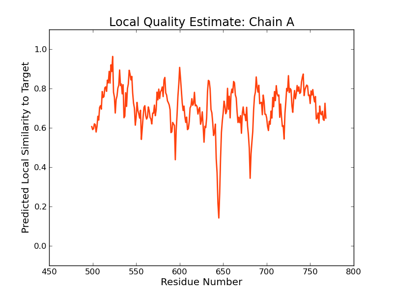

SWISS-MODEL Homology Modelling Report |
Model Building Report
This document lists the results for the homology modelling project "T451DRAFT_1244" submitted to SWISS-MODEL workspace on July 14, 2017, 9:37 p.m..The submitted primary amino acid sequence is given in Table T1.
If you use any results in your research, please cite the relevant publications:
Marco Biasini; Stefan Bienert; Andrew Waterhouse; Konstantin Arnold; Gabriel Studer; Tobias Schmidt; Florian Kiefer; Tiziano Gallo Cassarino; Martino Bertoni; Lorenza Bordoli; Torsten Schwede. (2014). SWISS-MODEL: modelling protein tertiary and quaternary structure using evolutionary information. Nucleic Acids Research (1 July 2014) 42 (W1): W252-W258; doi: 10.1093/nar/gku340.Arnold, K., Bordoli, L., Kopp, J. and Schwede, T. (2006) The SWISS-MODEL workspace: a web-based environment for protein structure homology modelling. Bioinformatics, 22, 195-201.
Benkert, P., Biasini, M. and Schwede, T. (2011) Toward the estimation of the absolute quality of individual protein structure models. Bioinformatics, 27, 343-350
Results
The SWISS-MODEL template library (SMTL version 2017-07-12, PDB release 2017-07-07) was searched with Blast (Altschul et al., 1997) and HHBlits (Remmert, et al., 2011) for evolutionary related structures matching the target sequence in Table T1. For details on the template search, see Materials and Methods. Overall 1209 templates were found (Table T2).
Models
The following models were built (see Materials and Methods "Model Building"):
Model #01 | File | Built with | Oligo-State | Ligands | GMQE | QMEAN |
|---|---|---|---|---|---|---|
| PDB | ProMod3 Version 1.0.2. | MONOMER | None | 0.34 | -1.69 |
|
| Template | Seq Identity | Oligo-state | Found by | Method | Resolution | Seq Similarity | Range | Coverage | Description |
|---|---|---|---|---|---|---|---|---|---|
| 4rnf.1.A | 37.03 | monomer | HHblits | X-ray | 2.85Å | 0.38 | 337 - 765 | 0.47 | Motility regulator |
Target MISIKDSQSVNRLLLALVGAIFVGETLVMLFIDMLPPLSHWHTALLDAVWLLMLLFPAIYFLVFRPLKTQLIQQEQAEIT
4rnf.1.A --------------------------------------------------------------------------------
Target RQEAVDRLQKIASQAPGIVFQFQLRLDGSCCVPYANEGLFKIYRVSPEDVREDASYVFTVVHPDDLENHRASIQTSAQDL
4rnf.1.A --------------------------------------------------------------------------------
Target TPWIQEYRLKFGEEPECWLLGNALPQRLADGSTLWHGFITDITERKQVETELQIAATAFESQEGMVITDINNVIIKVNQA
4rnf.1.A --------------------------------------------------------------------------------
Target FIRLTGYSSEELLNRRMNILKSGRHDAKFYAAMWDSITRTGTWQGEIWNQLKNAEVLPTFVTITAVKNNEGEVINYVATY
4rnf.1.A --------------------------------------------------------------------------------
Target TDITERKVIEEKINNLAFYDSLTQLPNRVLLADRMHQTLARCRRNQEIAAVCMLDLDGFKQVNDTLGHASGDRLLRDVAQ
4rnf.1.A ----------------AYYDALTHLPNRTLFQDRLHTALQQAERNGQWVVLMFLDLDRFKPINDSLGHAAGDRMLQEVAT
Target RLKECIRQEDTAARFGGDEFALLLGGFSTVS----ECEQTLARIVAAIAAPYQIFGQVAHISASIGVTLFPEDSSDPDLL
4rnf.1.A RLSACVSQDDTVARMGGDEFTLLLPSQGDREIALKRAIQVAELILGRLARPFTLEGREFFVTASIGVALSPQDGAELSLL
Target LRHADQVMYEVKQAGKNGYKLFNSVHEMRNQTTQDFLKKIDEALAKGQFELYYQPKVDCRLGKVVGVEASVCWNHPVLGI
4rnf.1.A MKNADTAMYHAKEMGKNNFQFYQAEMNARALERLELESDLRRALELGEFVLHYQPQFTGDGRRLTGAEALLRWQHPRRGL
Target LAPSEFIPVIEHDDLIIALGEWTIQSALLQLNEWRETGFN-LHISVNISARQLHSQEFLRRLQEFLAGYDAEIIQRLELE
4rnf.1.A VPPSEFIPVLEEIGLVAQVGDWLLAEACKQLRSWHKAKVRVPKVSVNLSARQFADGQLGERIAAILY-ETGIPPACLELE
Target IVETAALKDVIAGGDAIRRCRAMGVRVTLDDFGTGFSSLVQSLVRLNHLAVDALKVDLSFVSDMLTDPEDRALVEGVVGL
4rnf.1.A LTESILMSDVAEAMQILSGLKRLGLAIAVNNFGTGYSSLNY----LKQFPIDVLKIDRSFVDGLPHGEQDAQIARAIIAM
Target AASSRLQVIAKGVKYVDQIVMLMELGCDVMQGSGLASPMSAKRMRAWLAVFAPDPLWGLPASDLTSRDYFELLLTEANHR
4rnf.1.A AHSLNLMVIAEGVESQAQLDFLREHGCDEVQGYLFGRPMPAEQFGMLYAS------------------------------
Target SWTNRVIANLDDPCDDTTPESLLDHQQCRFGQWYSEEDASHFRNIREFDALDAVHQNIHQISAHLCEHRQAGMDVEADAD
4rnf.1.A --------------------------------------------------------------------------------
Target KVQLLAEQHNMTSLVHHFLADELLK
4rnf.1.A -------------------------
Model #02 | File | Built with | Oligo-State | Ligands | GMQE | QMEAN |
|---|---|---|---|---|---|---|
| PDB | ProMod3 Version 1.0.2. | MONOMER | None | 0.28 | -2.47 |
|
| Template | Seq Identity | Oligo-state | Found by | Method | Resolution | Seq Similarity | Range | Coverage | Description |
|---|---|---|---|---|---|---|---|---|---|
| 3pjx.1.A | 22.80 | monomer | HHblits | X-ray | 2.00Å | 0.31 | 323 - 757 | 0.47 | Cyclic dimeric GMP binding protein |
| Ligand | Added to Model | Description |
|---|---|---|
| EDO | ✕ - Not biologically relevant. | 1,2-ETHANEDIOL |
| EDO | ✕ - Not biologically relevant. | 1,2-ETHANEDIOL |
| EDO | ✕ - Not biologically relevant. | 1,2-ETHANEDIOL |
| EDO | ✕ - Not biologically relevant. | 1,2-ETHANEDIOL |
| EDO | ✕ - Not biologically relevant. | 1,2-ETHANEDIOL |
| EDO | ✕ - Not biologically relevant. | 1,2-ETHANEDIOL |
| EDO | ✕ - Not biologically relevant. | 1,2-ETHANEDIOL |
| EDO | ✕ - Not biologically relevant. | 1,2-ETHANEDIOL |
| EDO | ✕ - Not biologically relevant. | 1,2-ETHANEDIOL |
Target MISIKDSQSVNRLLLALVGAIFVGETLVMLFIDMLPPLSHWHTALLDAVWLLMLLFPAIYFLVFRPLKTQLIQQEQAEIT
3pjx.1.A --------------------------------------------------------------------------------
Target RQEAVDRLQKIASQAPGIVFQFQLRLDGSCCVPYANEGLFKIYRVSPEDVREDASYVFTVVHPDDLENHRASIQTSAQDL
3pjx.1.A --------------------------------------------------------------------------------
Target TPWIQEYRLKFGEEPECWLLGNALPQRLADGSTLWHGFITDITERKQVETELQIAATAFESQEGMVITDINNVIIKVNQA
3pjx.1.A --------------------------------------------------------------------------------
Target FIRLTGYSSEELLNRRMNILKSGRHDAKFYAAMWDSITRTGTWQGEIWNQLKNAEVLPTFVTITAVKNNEGEVINYVATY
3pjx.1.A --------------------------------------------------------------------------------
Target TDITERKVIEEKINNLAFYDSLTQLPNRVLLADRMHQTLARCRRNQEIAAVCMLDLDGFKQVNDTLGHASGDRLLRDVAQ
3pjx.1.A --FQEQAERSEKLRTESYQDNLTGLANRRYFEMQLNARVSNPE-QASSGYLLLLRVKDLAGLNQRLGGQRTDELLKAVGE
Target RLKECIRQE--D--TAARFGGDEFALLLGGFSTVSECEQTLARIVAAIAAPYQIFGQVAHISASIGVTLFPEDSSDPDLL
3pjx.1.A QLSRECAKYPETQNLVTRIRGGEFAVLAPGM-TREEALQLAQSLDSALSSLYATGATDVAAVASIGLAPFA-HGDSPQAV
Target LRHADQVMYEVKQAGKNGYKLFNSVHEMRN-QTTQDFLKKIDEALAKGQFELYYQPKVDCRLG-KVVGVEASVCWNHPVL
3pjx.1.A LSLGDQALAQAEGQGEQNWACLDQSLVADVGDDHHAWHRLLDQALNQRRFELFFQPVVAAQDTQLVLHYKVLSRLLDEQG
Target GILAPSEFIPVIEHDDLIIALGEWTIQSALLQLNEWRETGFNLHISVNISARQLHSQEFLRRLQEFLAGYDAEIIQRLEL
3pjx.1.A QTIPAGRFLPWLERFGWTARLDRLMLERVLEQMAGHE-----ESLALNLSSATLADPQALNKVFEILR-AHSNLGARLTL
Target EIVETAALKDVIAGGDAIRRCRAMGVRVTLDDFGTGFSSLVQSLVRLNHLAVDALKVDLSFVSDMLTDPEDRALVEGVVG
3pjx.1.A EIGEEQLPEQ-AVLEQLTRRLRELGFSLSLQRFGGRFSMIGN----LARLGLAYLKIDGSYIRAIDQESDKRLFIEAIQR
Target LAASSRLQVIAKGVKYVDQIVMLMELGCDVMQGSGLASPMSAKRMRAWLAVFAPDPLWGLPASDLTSRDYFELLLTEANH
3pjx.1.A AAHSIDLPLIAERVETEGELSVIREMGLYGVQGQLFGEPKPWG-------------------------------------
Target RSWTNRVIANLDDPCDDTTPESLLDHQQCRFGQWYSEEDASHFRNIREFDALDAVHQNIHQISAHLCEHRQAGMDVEADA
3pjx.1.A --------------------------------------------------------------------------------
Target DKVQLLAEQHNMTSLVHHFLADELLK
3pjx.1.A --------------------------
Model #03 | File | Built with | Oligo-State | Ligands | GMQE | QMEAN |
|---|---|---|---|---|---|---|
| PDB | ProMod3 Version 1.0.2. | MONOMER |
1 x CA: CALCIUM ION; | 0.17 | -0.98 |
|
| Template | Seq Identity | Oligo-state | Found by | Method | Resolution | Seq Similarity | Range | Coverage | Description |
|---|---|---|---|---|---|---|---|---|---|
| 4hjf.1.A | 31.33 | monomer | HHblits | X-ray | 1.75Å | 0.34 | 506 - 767 | 0.33 | GGDEF family protein |
| Ligand | Added to Model | Description | |
|---|---|---|---|
| CA | ✓ | CALCIUM ION | |
| C2E | ✕ - Binding site not conserved. | 9,9'-[(2R,3R,3AS,5S,7AR,9R,10R,10AS,12S,14AR)-3,5,10,12-TETRAHYDROXY-5,12-DIOXIDOOCTAHYDRO-2H,7H-DIFURO[3,2-D:3',2'-J][1,3,7,9,2,8]TETRAOXADIPHOSPHACYCLODODECINE-2,9-DIYL]BIS(2-AMINO-1,9-DIHYDRO-6H-PURIN-6-ONE) | |
| CA | ✕ - Binding site not conserved. | CALCIUM ION |
Target MISIKDSQSVNRLLLALVGAIFVGETLVMLFIDMLPPLSHWHTALLDAVWLLMLLFPAIYFLVFRPLKTQLIQQEQAEIT
4hjf.1.A --------------------------------------------------------------------------------
Target RQEAVDRLQKIASQAPGIVFQFQLRLDGSCCVPYANEGLFKIYRVSPEDVREDASYVFTVVHPDDLENHRASIQTSAQDL
4hjf.1.A --------------------------------------------------------------------------------
Target TPWIQEYRLKFGEEPECWLLGNALPQRLADGSTLWHGFITDITERKQVETELQIAATAFESQEGMVITDINNVIIKVNQA
4hjf.1.A --------------------------------------------------------------------------------
Target FIRLTGYSSEELLNRRMNILKSGRHDAKFYAAMWDSITRTGTWQGEIWNQLKNAEVLPTFVTITAVKNNEGEVINYVATY
4hjf.1.A --------------------------------------------------------------------------------
Target TDITERKVIEEKINNLAFYDSLTQLPNRVLLADRMHQTLARCRRNQEIAAVCMLDLDGFKQVNDTLGHASGDRLLRDVAQ
4hjf.1.A --------------------------------------------------------------------------------
Target RLKECIRQEDTAARFGGDEFALLLGGFSTVSECEQTLARIVAAIAAPYQIFGQVAHISASIGVT--LFPEDSSDPDLLLR
4hjf.1.A --------------------------------------------------------------AVSAEGGLDAPDAAELLR
Target HADQVMYEVKQAGKNGYKLFNSVHEMRNQTTQDFLKKIDEALAKGQFELYYQPKVDCRLGKVVGVEASVCWNHPVLGILA
4hjf.1.A RAELAVEAAAAAGRGGAAAYGRAMETDGLSRLALEADLRGAIGRGEITPYFQPIVRLSTGALSGFEALARWIHPRRGMLP
Target PSEFIPVIEHDDLIIALGEWTIQSALLQLNEWRETGF---NLHISVNISARQLHSQEFLRRLQEFLAGYDAEIIQRLELE
4hjf.1.A PDEFLPLIEEMGLMSELGAHMMHAAAQQLSTWRAAHPAMGNLTVSVNLSTGEIDRPGLVADVAETLR-VNRLPRGALKLE
Target IVETAALKDVIAGGDAIRRCRAMGVRVTLDDFGTGFSSLVQSLVRLNHLAVDALKVDLSFVSDMLTDPEDRALVEGVVGL
4hjf.1.A VTESDIMRDPERAAVILKTLRDAGAGLALDDFGTGFSSLSY----LTRLPFDTLKIDRYFVRTMGNNAGSAKIVRSVVKL
Target AASSRLQVIAKGVKYVDQIVMLMELGCDVMQGSGLASPMSAKRMRAWLAVFAPDPLWGLPASDLTSRDYFELLLTEANHR
4hjf.1.A GQDLDLEVVAEGVENAEMAHALQSLGCDYGQGFGYAPALSPQEAEVYLNEAY----------------------------
Target SWTNRVIANLDDPCDDTTPESLLDHQQCRFGQWYSEEDASHFRNIREFDALDAVHQNIHQISAHLCEHRQAGMDVEADAD
4hjf.1.A --------------------------------------------------------------------------------
Target KVQLLAEQHNMTSLVHHFLADELLK
4hjf.1.A -------------------------
Model #04 | File | Built with | Oligo-State | Ligands | GMQE | QMEAN |
|---|---|---|---|---|---|---|
| PDB | ProMod3 Version 1.0.2. | MONOMER | None | 0.15 | -3.17 |
|  |
| Template | Seq Identity | Oligo-state | Found by | Method | Resolution | Seq Similarity | Range | Coverage | Description |
|---|---|---|---|---|---|---|---|---|---|
| 4hu3.1.A | 31.84 | monomer | HHblits | X-ray | 3.30Å | 0.36 | 499 - 768 | 0.30 | Oxygen sensor protein DosP |
Target MISIKDSQSVNRLLLALVGAIFVGETLVMLFIDMLPPLSHWHTALLDAVWLLMLLFPAIYFLVFRPLKTQLIQQEQAEIT
4hu3.1.A --------------------------------------------------------------------------------
Target RQEAVDRLQKIASQAPGIVFQFQLRLDGSCCVPYANEGLFKIYRVSPEDVREDASYVFTVVHPDDLENHRASIQTSAQDL
4hu3.1.A --------------------------------------------------------------------------------
Target TPWIQEYRLKFGEEPECWLLGNALPQRLADGSTLWHGFITDITERKQVETELQIAATAFESQEGMVITDINNVIIKVNQA
4hu3.1.A --------------------------------------------------------------------------------
Target FIRLTGYSSEELLNRRMNILKSGRHDAKFYAAMWDSITRTGTWQGEIWNQLKNAEVLPTFVTITAVKNNEGEVINYVATY
4hu3.1.A --------------------------------------------------------------------------------
Target TDITERKVIEEKINNLAFYDSLTQLPNRVLLADRMHQTLARCRRNQEIAAVCMLDLDGFKQVNDTLGHASGDRLLRDVAQ
4hu3.1.A --------------------------------------------------------------------------------
Target RLKECIRQEDTAARFGGDEFALLLGGFSTVSECEQTLARIVAAIAAPYQIFGQVAHISASIGVTLFPEDSSDPDLLLRHA
4hu3.1.A --------------------------------------------------------------------------------
Target DQVMYEVKQAGKNGYKLFNSVHEMRNQTTQDFLKKIDEALAKGQFELYYQPKVDCRLGKVVGVEASVCWNHPVLGILAPS
4hu3.1.A ----------------FFSPAMNEMVKERLVLGAALKEAISNNQLKLVYQPQIFAETGELYGIEALARWHDPLHGHVPPS
Target EFIPVIEHDDLIIALGEWTIQSALLQLNEWRETGFN-LHISVNISARQLHSQEFLRRLQEFLAGYDAEIIQRLELEIVET
4hu3.1.A RFIPLAEEIGEIENIGRWVIAEACRQLAEWRSQNIHIPALSVNLSALHFRSNQLPNQVSDAMH-AWGIDGHQLTVEITES
Target AALKDVIAGGDAIRRCRAMGVRVTLDDFGTGFSSLVQSLVRLNHLAVDALKVDLSFVSDMLTDPEDRALVEGVVGLAASS
4hu3.1.A MMMEHDTEIFKRIQILRDMGVGLSVDDFGTGFSGLSR----LVSLPVTEIKIDKSFVDRCLTEKRILALLEAITSIGQSL
Target RLQVIAKGVKYVDQIVMLMELGCDVMQGSGLASPMSAKRMRAWLAVFAPDPLWGLPASDLTSRDYFELLLTEANHRSWTN
4hu3.1.A NLTVVAEGVETKEQFEMLRKIHCRVIQGYFFSRPLPAEEIPGWMSSVLP-------------------------------
Target RVIANLDDPCDDTTPESLLDHQQCRFGQWYSEEDASHFRNIREFDALDAVHQNIHQISAHLCEHRQAGMDVEADADKVQL
4hu3.1.A --------------------------------------------------------------------------------
Target LAEQHNMTSLVHHFLADELLK
4hu3.1.A ---------------------
Model #05 | File | Built with | Oligo-State | Ligands | GMQE | QMEAN |
|---|---|---|---|---|---|---|
| PDB | ProMod3 Version 1.0.2. | MONOMER (matching prediction) | None | 0.12 | -4.85 |
|
| Template | Seq Identity | Oligo-state | Found by | Method | Resolution | Seq Similarity | Range | Coverage | Description |
|---|---|---|---|---|---|---|---|---|---|
| 4h54.1.A | 20.52 | homo-dimer | HHblits | X-ray | 3.90Å | 0.30 | 230 - 505 | 0.30 | Diguanylate cyclase YdeH |
| Ligand | Added to Model | Description |
|---|---|---|
| C2E | ✕ - Binding site not conserved. | 9,9'-[(2R,3R,3AS,5S,7AR,9R,10R,10AS,12S,14AR)-3,5,10,12-TETRAHYDROXY-5,12-DIOXIDOOCTAHYDRO-2H,7H-DIFURO[3,2-D:3',2'-J][1,3,7,9,2,8]TETRAOXADIPHOSPHACYCLODODECINE-2,9-DIYL]BIS(2-AMINO-1,9-DIHYDRO-6H-PURIN-6-ONE) |
| GAV | ✕ - Binding site not conserved. | GUANOSINE-5'-RP-ALPHA-THIO-TRIPHOSPHATE |
| GAV | ✕ - Binding site not conserved. | GUANOSINE-5'-RP-ALPHA-THIO-TRIPHOSPHATE |
| GAV | ✕ - Binding site not conserved. | GUANOSINE-5'-RP-ALPHA-THIO-TRIPHOSPHATE |
| GAV | ✕ - Binding site not conserved. | GUANOSINE-5'-RP-ALPHA-THIO-TRIPHOSPHATE |
| MG | ✕ - Binding site not conserved. | MAGNESIUM ION |
| MG | ✕ - Binding site not conserved. | MAGNESIUM ION |
| ZN | ✕ - Binding site not conserved. | ZINC ION |
| ZN | ✕ - Binding site not conserved. | ZINC ION |
Target MISIKDSQSVNRLLLALVGAIFVGETLVMLFIDMLPPLSHWHTALLDAVWLLMLLFPAIYFLVFRPLKTQLIQQEQAEIT
4h54.1.A --------------------------------------------------------------------------------
Target RQEAVDRLQKIASQAPGIVFQFQLRLDGSCCVPYANEGLFKIYRVSPEDVREDASYVFTVVHPDDLENHRASIQTSAQDL
4h54.1.A --------------------------------------------------------------------------------
Target TPWIQEYRLKFGEEPECWLLGNALPQRLADGSTLWHGFITDITERKQVETELQIAATAFESQEGMVITDINNVIIKVNQA
4h54.1.A ---------------------------------------------------------------------IDAILLNLNKA
Target FIRLTGYSSEELLNRRMNILKSGRHDAKFYAAMWDSITRTGTWQGEIWNQLKNAEVLPTFVTITA-------------VK
4h54.1.A IDAHYQWLVSMF-HSV---VARDASKPEITDNHSYGLAQFGRWIDHLGPLDNDELPYVRLMDSAHQHMHNCGRELMLAIV
Target NNEGEVINYVATYTDITERKVI-----EEKINNLAFYDSLTQLPNRVLLADRMHQTLARCRRNQEIAAVCMLDLDGFKQV
4h54.1.A ENHWQDAHFDAFQEGLLSFTAALTDYKIYLLTIRSNMDVLTGLPGRRVLDESFDHQLRNAEPLN--LYLMLLDIDRFKLV
Target NDTLGHASGDRLLRDVAQRLKECIRQEDTAARFGGDEFALLLGGFSTVSECEQTLARIVAAIAA-PYQIFGQVAHISASI
4h54.1.A NDTYGHLIGDVVLRTLATYLASWTRDYETVYRYGGEEFIIIVKA-ANDEEACRAGVRICQLVDNHAITHSEGHINITVTA
Target GVTLFPEDSSDPDLLLRHADQVMYEVKQAGKNGYKLFNSVHEMRNQTTQDFLKKIDEALAKGQFELYYQPKVDCRLGKVV
4h54.1.A GVSRAF-PEEPLDVVIGRADRAMYEGKQTGRNRCMFIDEQNVIN------------------------------------
Target GVEASVCWNHPVLGILAPSEFIPVIEHDDLIIALGEWTIQSALLQLNEWRETGFNLHISVNISARQLHSQEFLRRLQEFL
4h54.1.A --------------------------------------------------------------------------------
Target AGYDAEIIQRLELEIVETAALKDVIAGGDAIRRCRAMGVRVTLDDFGTGFSSLVQSLVRLNHLAVDALKVDLSFVSDMLT
4h54.1.A --------------------------------------------------------------------------------
Target DPEDRALVEGVVGLAASSRLQVIAKGVKYVDQIVMLMELGCDVMQGSGLASPMSAKRMRAWLAVFAPDPLWGLPASDLTS
4h54.1.A --------------------------------------------------------------------------------
Target RDYFELLLTEANHRSWTNRVIANLDDPCDDTTPESLLDHQQCRFGQWYSEEDASHFRNIREFDALDAVHQNIHQISAHLC
4h54.1.A --------------------------------------------------------------------------------
Target EHRQAGMDVEADADKVQLLAEQHNMTSLVHHFLADELLK
4h54.1.A ---------------------------------------
Materials and Methods
Template Search
Template search with Blast and HHBlits has been performed against the SWISS-MODEL template library (SMTL, last update: 2017-07-12, last included PDB release: 2017-07-07).
The target sequence was searched with BLAST (Altschul et al., 1997) against the primary amino acid sequence contained in the SMTL. A total of 132 templates were found.
An initial HHblits profile has been built using the procedure outlined in (Remmert, et al., 2011), followed by 1 iteration of HHblits against NR20. The obtained profile has then be searched against all profiles of the SMTL. A total of 1081 templates were found.
Template Selection
For each identified template, the template's quality has been predicted from features of the target-template alignment. The templates with the highest quality have then been selected for model building.
Model Building
Models are built based on the target-template alignment using ProMod3. Coordinates which are conserved between the target and the template are copied from the template to the model. Insertions and deletions are remodelled using a fragment library. Side chains are then rebuilt. Finally, the geometry of the resulting model is regularized by using a force field. In case loop modelling with ProMod3 fails, an alternative model is built with PROMOD-II (Guex, et al., 1997).
Model Quality Estimation
The global and per-residue model quality has been assessed using the QMEAN scoring function (Benkert, et al., 2011) . For improved performance, weights of the individual QMEAN terms have been trained specifically for SWISS-MODEL.
Ligand Modelling
Ligands present in the template structure are transferred by homology to the model when the following criteria are met (Gallo -Casserino, to be published): (a) The ligands are annotated as biologically relevant in the template library, (b) the ligand is in contact with the model, (c) the ligand is not clashing with the protein, (d) the residues in contact with the ligand are conserved between the target and the template. If any of these four criteria is not satisfied, a certain ligand will not be included in the model. The model summary includes information on why and which ligand has not been included.
Oligomeric State Conservation
Homo-oligomeric structure of the target protein is predicted based on the analysis of pairwise interfaces of the identified template structures. For each relevant interface between polypeptide chains (interfaces with more than 10 residue-residue interactions), the QscoreOligomer (Mariani et al., 2011) is predicted from features such as similarity to target and frequency of observing this interface in the identified templates (Kiefer, Bertoni, Biasini, to be published). The prediction is performed with a random forest regressor using these features as input parameters to predict the probability of conservation for each interface. The QscoreOligomer of the whole complex is then calculated as the weight-averaged QscoreOligomer of the interfaces. The oligomeric state of the target is predicted to be the same as in the template when QscoreOligomer is predicted to be higher or equal to 0.5.
References
Altschul, S.F., Madden, T.L., Schaffer, A.A., Zhang, J., Zhang, Z., Miller, W. and Lipman, D.J. (1997) Gapped BLAST and PSI-BLAST: a new generation of protein database search programs. Nucleic Acids Res, 25, 3389-3402.
Remmert, M., Biegert, A., Hauser, A. and Soding, J. (2012) HHblits: lightning-fast iterative protein sequence searching by HMM-HMM alignment. Nat Methods, 9, 173-175.
Guex, N. and Peitsch, M.C. (1997) SWISS-MODEL and the Swiss-PdbViewer: an environment for comparative protein modeling. Electrophoresis, 18, 2714-2723.
Sali, A. and Blundell, T.L. (1993) Comparative protein modelling by satisfaction of spatial restraints. J Mol Biol, 234, 779-815.
Benkert, P., Biasini, M. and Schwede, T. (2011) Toward the estimation of the absolute quality of individual protein structure models. Bioinformatics, 27, 343-350.
Mariani, V., Kiefer, F., Schmidt, T., Haas, J. and Schwede, T. (2011) Assessment of template based protein structure predictions in CASP9. Proteins, 79 Suppl 10, 37-58.
Table T1:
Primary amino acid sequence for which templates were searched and models were built.
QFQLRLDGSCCVPYANEGLFKIYRVSPEDVREDASYVFTVVHPDDLENHRASIQTSAQDLTPWIQEYRLKFGEEPECWLLGNALPQRLADGSTLWHGFIT
DITERKQVETELQIAATAFESQEGMVITDINNVIIKVNQAFIRLTGYSSEELLNRRMNILKSGRHDAKFYAAMWDSITRTGTWQGEIWNQLKNAEVLPTF
VTITAVKNNEGEVINYVATYTDITERKVIEEKINNLAFYDSLTQLPNRVLLADRMHQTLARCRRNQEIAAVCMLDLDGFKQVNDTLGHASGDRLLRDVAQ
RLKECIRQEDTAARFGGDEFALLLGGFSTVSECEQTLARIVAAIAAPYQIFGQVAHISASIGVTLFPEDSSDPDLLLRHADQVMYEVKQAGKNGYKLFNS
VHEMRNQTTQDFLKKIDEALAKGQFELYYQPKVDCRLGKVVGVEASVCWNHPVLGILAPSEFIPVIEHDDLIIALGEWTIQSALLQLNEWRETGFNLHIS
VNISARQLHSQEFLRRLQEFLAGYDAEIIQRLELEIVETAALKDVIAGGDAIRRCRAMGVRVTLDDFGTGFSSLVQSLVRLNHLAVDALKVDLSFVSDML
TDPEDRALVEGVVGLAASSRLQVIAKGVKYVDQIVMLMELGCDVMQGSGLASPMSAKRMRAWLAVFAPDPLWGLPASDLTSRDYFELLLTEANHRSWTNR
VIANLDDPCDDTTPESLLDHQQCRFGQWYSEEDASHFRNIREFDALDAVHQNIHQISAHLCEHRQAGMDVEADADKVQLLAEQHNMTSLVHHFLADELLK
Table T2:
| Template | Seq Identity | Oligo-state | Found by | Method | Resolution | Seq Similarity | Coverage | Description |
|---|---|---|---|---|---|---|---|---|
| 4rnh.1.A | 37.50 | homo-dimer | HHblits | X-ray | 2.45Å | 0.38 | 0.47 | Motility regulator |
| 4rnf.1.A | 37.03 | monomer | HHblits | X-ray | 2.85Å | 0.38 | 0.47 | Motility regulator |
| 4rnh.1.A | 39.23 | homo-dimer | BLAST | X-ray | 2.45Å | 0.39 | 0.46 | Motility regulator |
| 4rnf.1.A | 38.74 | monomer | BLAST | X-ray | 2.85Å | 0.39 | 0.46 | Motility regulator |
| 4j40.1.A | 22.41 | homo-dimer | HHblits | X-ray | 2.99Å | 0.31 | 0.47 | FimX |
| 3pjx.1.A | 26.59 | monomer | BLAST | X-ray | 2.00Å | 0.34 | 0.46 | Cyclic dimeric GMP binding protein |
| 3pjw.1.A | 26.59 | monomer | BLAST | X-ray | 3.10Å | 0.34 | 0.46 | Cyclic dimeric GMP binding protein |
| 3pjx.1.A | 22.80 | monomer | HHblits | X-ray | 2.00Å | 0.31 | 0.47 | Cyclic dimeric GMP binding protein |
| 3pjw.1.A | 22.80 | monomer | HHblits | X-ray | 3.10Å | 0.31 | 0.47 | Cyclic dimeric GMP binding protein |
| 4j40.1.A | 23.56 | homo-dimer | BLAST | X-ray | 2.99Å | 0.32 | 0.46 | FimX |
| 3gfx.1.A | 18.66 | homo-dimer | HHblits | X-ray | 2.40Å | 0.28 | 0.38 | Klebsiella pneumoniae BlrP1 |
| 3gfx.1.B | 18.66 | homo-dimer | HHblits | X-ray | 2.40Å | 0.28 | 0.38 | Klebsiella pneumoniae BlrP1 |
| 4hjf.1.A | 31.33 | monomer | HHblits | X-ray | 1.75Å | 0.34 | 0.33 | GGDEF family protein |
| 3sy8.1.A | 32.86 | homo-octamer | BLAST | X-ray | 2.50Å | 0.36 | 0.31 | RocR |
| 3sy8.1.B | 32.86 | homo-octamer | BLAST | X-ray | 2.50Å | 0.36 | 0.31 | RocR |
| 3sy8.1.C | 32.86 | homo-octamer | BLAST | X-ray | 2.50Å | 0.36 | 0.31 | RocR |
| 3sy8.1.D | 32.86 | homo-octamer | BLAST | X-ray | 2.50Å | 0.36 | 0.31 | RocR |
| 4hu3.1.A | 31.84 | monomer | HHblits | X-ray | 3.30Å | 0.36 | 0.30 | Oxygen sensor protein DosP |
| 4hu4.1.A | 31.84 | monomer | HHblits | X-ray | 2.40Å | 0.36 | 0.30 | Oxygen sensor protein DosP |
| 4hu4.2.A | 31.84 | monomer | HHblits | X-ray | 2.40Å | 0.36 | 0.30 | Oxygen sensor protein DosP |
| 5m1t.1.A | 35.55 | homo-dimer | BLAST | X-ray | 2.27Å | 0.38 | 0.28 | MucR Phosphodiesterase |
| 5m1t.1.B | 35.55 | homo-dimer | BLAST | X-ray | 2.27Å | 0.38 | 0.28 | MucR Phosphodiesterase |
| 4rnj.1.A | 32.82 | homo-dimer | HHblits | X-ray | 2.32Å | 0.36 | 0.29 | Motility regulator |
| 4rni.1.B | 32.82 | homo-dimer | HHblits | X-ray | 2.17Å | 0.36 | 0.29 | Motility regulator |
| 4rni.1.A | 32.82 | homo-dimer | HHblits | X-ray | 2.17Å | 0.36 | 0.29 | Motility regulator |
| 4rnj.1.B | 32.82 | homo-dimer | HHblits | X-ray | 2.32Å | 0.36 | 0.29 | Motility regulator |
| 5m1t.1.A | 34.11 | homo-dimer | HHblits | X-ray | 2.27Å | 0.37 | 0.29 | MucR Phosphodiesterase |
| 5m1t.1.B | 34.11 | homo-dimer | HHblits | X-ray | 2.27Å | 0.37 | 0.29 | MucR Phosphodiesterase |
| 2r6o.1.A | 34.38 | homo-dimer | HHblits | X-ray | 1.80Å | 0.36 | 0.28 | Putative diguanylate cyclase/phosphodiesterase (GGDEF & EAL domains) |
| 2r6o.1.B | 34.38 | homo-dimer | HHblits | X-ray | 1.80Å | 0.36 | 0.28 | Putative diguanylate cyclase/phosphodiesterase (GGDEF & EAL domains) |
| 3n3t.1.B | 34.38 | homo-dimer | HHblits | X-ray | 2.35Å | 0.36 | 0.28 | PUTATIVE DIGUANYLATE CYCLASE/PHOSPHODIESTERASE |
| 4hu3.1.A | 36.18 | monomer | BLAST | X-ray | 3.30Å | 0.38 | 0.27 | Oxygen sensor protein DosP |
| 4hu4.1.A | 36.18 | monomer | BLAST | X-ray | 2.40Å | 0.38 | 0.27 | Oxygen sensor protein DosP |
| 4hu4.2.A | 36.18 | monomer | BLAST | X-ray | 2.40Å | 0.38 | 0.27 | Oxygen sensor protein DosP |
| 3u2e.1.A | 33.07 | homo-dimer | HHblits | X-ray | 2.32Å | 0.35 | 0.28 | GGDEF family protein |
| 3u2e.1.B | 33.07 | homo-dimer | HHblits | X-ray | 2.32Å | 0.35 | 0.28 | GGDEF family protein |
| 4kie.1.A | 23.68 | monomer | HHblits | X-ray | 1.70Å | 0.31 | 0.30 | Cyclic di-GMP phosphodiesterase YahA |
| 4h54.1.A | 20.52 | homo-dimer | HHblits | X-ray | 3.90Å | 0.30 | 0.30 | Diguanylate cyclase YdeH |
| 4h54.1.B | 20.52 | homo-dimer | HHblits | X-ray | 3.90Å | 0.30 | 0.30 | Diguanylate cyclase YdeH |
| 3s83.1.A | 33.47 | monomer | HHblits | X-ray | 1.34Å | 0.35 | 0.28 | GGDEF family protein |
| 4y9n.1.A | 29.80 | monomer | HHblits | X-ray | 1.92Å | 0.34 | 0.28 | PA3825-EAL |
| 4y8e.2.A | 29.80 | monomer | HHblits | X-ray | 1.61Å | 0.34 | 0.28 | PA3825 EAL |
| 4y8e.1.A | 29.80 | monomer | HHblits | X-ray | 1.61Å | 0.34 | 0.28 | PA3825 EAL |
| 4y9p.2.A | 29.80 | monomer | HHblits | X-ray | 2.44Å | 0.34 | 0.28 | PA3825-EAL |
| 4y9p.1.A | 29.80 | monomer | HHblits | X-ray | 2.44Å | 0.34 | 0.28 | PA3825-EAL |
| 4y9o.1.A | 29.92 | monomer | HHblits | X-ray | 1.81Å | 0.34 | 0.28 | PA3825-EAL |
| 3sy8.1.A | 30.28 | homo-octamer | HHblits | X-ray | 2.50Å | 0.35 | 0.28 | RocR |
| 3sy8.1.B | 30.28 | homo-octamer | HHblits | X-ray | 2.50Å | 0.35 | 0.28 | RocR |
| 3sy8.1.C | 30.28 | homo-octamer | HHblits | X-ray | 2.50Å | 0.35 | 0.28 | RocR |
| 3sy8.1.D | 30.28 | homo-octamer | HHblits | X-ray | 2.50Å | 0.35 | 0.28 | RocR |
| 5mkg.1.A | 30.28 | monomer | HHblits | X-ray | 2.44Å | 0.34 | 0.28 | Diguanylate phosphodiesterase |
| 5mf5.1.A | 30.28 | monomer | HHblits | X-ray | 1.77Å | 0.34 | 0.28 | Diguanylate phosphodiesterase |
| 5mfu.1.A | 30.28 | monomer | HHblits | X-ray | 2.15Å | 0.34 | 0.28 | Diguanylate phosphodiesterase |
| 4lyk.1.A | 24.03 | homo-dimer | HHblits | X-ray | 2.40Å | 0.32 | 0.29 | Cyclic di-GMP phosphodiesterase YahA |
| 4lj3.1.B | 24.03 | homo-dimer | HHblits | X-ray | 1.70Å | 0.32 | 0.29 | Cyclic di-GMP phosphodiesterase YahA |
| 4lj3.1.A | 24.03 | homo-dimer | HHblits | X-ray | 1.70Å | 0.32 | 0.29 | Cyclic di-GMP phosphodiesterase YahA |
| 5mkg.2.A | 30.40 | monomer | HHblits | X-ray | 2.44Å | 0.34 | 0.28 | Diguanylate phosphodiesterase |
| 4foj.1.A | 20.08 | monomer | HHblits | X-ray | 1.55Å | 0.31 | 0.29 | FimX |
| 4fou.1.A | 20.08 | hetero-oligomer | HHblits | X-ray | 2.10Å | 0.31 | 0.29 | FimX |
| 4fou.2.A | 20.08 | hetero-oligomer | HHblits | X-ray | 2.10Å | 0.31 | 0.29 | FimX |
| 4q6j.1.A | 27.76 | homo-tetramer | HHblits | X-ray | 1.37Å | 0.35 | 0.27 | Lmo0131 protein |
| 5mf5.1.A | 33.20 | monomer | BLAST | X-ray | 1.77Å | 0.36 | 0.27 | Diguanylate phosphodiesterase |
| 5mkg.1.A | 33.20 | monomer | BLAST | X-ray | 2.44Å | 0.36 | 0.27 | Diguanylate phosphodiesterase |
| 5mfu.1.A | 33.20 | monomer | BLAST | X-ray | 2.15Å | 0.36 | 0.27 | Diguanylate phosphodiesterase |
| 5mkg.2.A | 33.20 | monomer | BLAST | X-ray | 2.44Å | 0.36 | 0.27 | Diguanylate phosphodiesterase |
| 4y9o.1.A | 33.20 | monomer | BLAST | X-ray | 1.81Å | 0.36 | 0.27 | PA3825-EAL |
| 4y9n.1.A | 33.20 | monomer | BLAST | X-ray | 1.92Å | 0.36 | 0.27 | PA3825-EAL |
| 4y8e.2.A | 33.20 | monomer | BLAST | X-ray | 1.61Å | 0.36 | 0.27 | PA3825 EAL |
| 4y8e.1.A | 33.20 | monomer | BLAST | X-ray | 1.61Å | 0.36 | 0.27 | PA3825 EAL |
| 4y9p.2.A | 33.20 | monomer | BLAST | X-ray | 2.44Å | 0.36 | 0.27 | PA3825-EAL |
| 4y9p.1.A | 33.20 | monomer | BLAST | X-ray | 2.44Å | 0.36 | 0.27 | PA3825-EAL |
| 2r6o.1.A | 39.39 | homo-dimer | BLAST | X-ray | 1.80Å | 0.40 | 0.26 | Putative diguanylate cyclase/phosphodiesterase (GGDEF & EAL domains) |
| 2r6o.1.B | 39.39 | homo-dimer | BLAST | X-ray | 1.80Å | 0.40 | 0.26 | Putative diguanylate cyclase/phosphodiesterase (GGDEF & EAL domains) |
| 3n3t.1.B | 39.39 | homo-dimer | BLAST | X-ray | 2.35Å | 0.40 | 0.26 | PUTATIVE DIGUANYLATE CYCLASE/PHOSPHODIESTERASE |
| 4rnj.1.A | 36.75 | homo-dimer | BLAST | X-ray | 2.32Å | 0.38 | 0.26 | Motility regulator |
| 4rni.1.B | 36.75 | homo-dimer | BLAST | X-ray | 2.17Å | 0.38 | 0.26 | Motility regulator |
| 4rni.1.A | 36.75 | homo-dimer | BLAST | X-ray | 2.17Å | 0.38 | 0.26 | Motility regulator |
| 4rnj.1.B | 36.75 | homo-dimer | BLAST | X-ray | 2.32Å | 0.38 | 0.26 | Motility regulator |
| 3u2e.1.A | 35.71 | homo-dimer | BLAST | X-ray | 2.32Å | 0.37 | 0.26 | GGDEF family protein |
| 3u2e.1.B | 35.71 | homo-dimer | BLAST | X-ray | 2.32Å | 0.37 | 0.26 | GGDEF family protein |
| 3s83.1.A | 35.71 | monomer | BLAST | X-ray | 1.34Å | 0.37 | 0.26 | GGDEF family protein |
| 3hv8.1.A | 21.48 | monomer | HHblits | X-ray | 1.44Å | 0.30 | 0.28 | Protein FimX |
| 4hjf.1.A | 36.17 | monomer | BLAST | X-ray | 1.75Å | 0.37 | 0.26 | GGDEF family protein |
| 4q6j.1.A | 29.49 | homo-tetramer | BLAST | X-ray | 1.37Å | 0.37 | 0.26 | Lmo0131 protein |
| 3hv9.1.A | 20.87 | monomer | HHblits | X-ray | 2.30Å | 0.30 | 0.28 | Protein FimX |
| 4kie.1.A | 26.97 | monomer | BLAST | X-ray | 1.70Å | 0.33 | 0.27 | Cyclic di-GMP phosphodiesterase YahA |
| 4lyk.1.A | 27.20 | homo-dimer | BLAST | X-ray | 2.40Å | 0.33 | 0.27 | Cyclic di-GMP phosphodiesterase YahA |
| 4lj3.1.B | 27.20 | homo-dimer | BLAST | X-ray | 1.70Å | 0.33 | 0.27 | Cyclic di-GMP phosphodiesterase YahA |
| 4lj3.1.A | 27.20 | homo-dimer | BLAST | X-ray | 1.70Å | 0.33 | 0.27 | Cyclic di-GMP phosphodiesterase YahA |
| 4f48.1.A | 22.95 | hetero-oligomer | HHblits | X-ray | 3.00Å | 0.32 | 0.27 | Putative uncharacterized protein |
| 4f3h.1.A | 22.95 | monomer | HHblits | X-ray | 2.50Å | 0.32 | 0.27 | Putative uncharacterized protein |
| 4hh2.1.A | 12.55 | homo-tetramer | HHblits | X-ray | 2.80Å | 0.25 | 0.29 | Transcriptional regulator, PpsR |
| 4hh2.1.B | 12.55 | homo-tetramer | HHblits | X-ray | 2.80Å | 0.25 | 0.29 | Transcriptional regulator, PpsR |
| 4hh2.1.C | 12.55 | homo-tetramer | HHblits | X-ray | 2.80Å | 0.25 | 0.29 | Transcriptional regulator, PpsR |
| 4hh2.1.D | 12.55 | homo-tetramer | HHblits | X-ray | 2.80Å | 0.25 | 0.29 | Transcriptional regulator, PpsR |
| 4ag0.1.A | 21.54 | homo-dimer | HHblits | X-ray | 2.30Å | 0.30 | 0.27 | FIMX |
| 4afy.1.B | 21.54 | homo-dimer | HHblits | X-ray | 2.01Å | 0.30 | 0.27 | FIMX |
| 4afy.1.A | 21.54 | homo-dimer | HHblits | X-ray | 2.01Å | 0.30 | 0.27 | FIMX |
| 3pju.1.A | 22.86 | homo-dimer | HHblits | X-ray | 2.50Å | 0.31 | 0.27 | Cyclic dimeric GMP binding protein |
| 3pjt.1.A | 22.86 | homo-dimer | HHblits | X-ray | 2.52Å | 0.31 | 0.27 | Cyclic dimeric GMP binding protein |
| 3pjt.1.B | 22.86 | homo-dimer | HHblits | X-ray | 2.52Å | 0.31 | 0.27 | Cyclic dimeric GMP binding protein |
| 3pfm.1.A | 25.10 | homo-dimer | HHblits | X-ray | 2.91Å | 0.31 | 0.27 | GGDEF domain protein |
| 4ag0.1.A | 25.53 | homo-dimer | BLAST | X-ray | 2.30Å | 0.32 | 0.26 | FIMX |
| 4afy.1.B | 25.53 | homo-dimer | BLAST | X-ray | 2.01Å | 0.32 | 0.26 | FIMX |
| 4afy.1.A | 25.53 | homo-dimer | BLAST | X-ray | 2.01Å | 0.32 | 0.26 | FIMX |
| 4f48.1.A | 24.36 | hetero-oligomer | BLAST | X-ray | 3.00Å | 0.33 | 0.26 | Putative uncharacterized protein |
| 4f3h.1.A | 24.36 | monomer | BLAST | X-ray | 2.50Å | 0.33 | 0.26 | Putative uncharacterized protein |
| 3hv9.1.A | 23.73 | monomer | BLAST | X-ray | 2.30Å | 0.32 | 0.26 | Protein FimX |
| 3hv8.1.A | 23.73 | monomer | BLAST | X-ray | 1.44Å | 0.32 | 0.26 | Protein FimX |
| 4foj.1.A | 22.65 | monomer | BLAST | X-ray | 1.55Å | 0.32 | 0.26 | FimX |
| 4fou.1.A | 22.65 | hetero-oligomer | BLAST | X-ray | 2.10Å | 0.32 | 0.26 | FimX |
| 4fou.2.A | 22.65 | hetero-oligomer | BLAST | X-ray | 2.10Å | 0.32 | 0.26 | FimX |
| 2w27.1.A | 21.16 | homo-dimer | HHblits | X-ray | 2.80Å | 0.29 | 0.27 | YKUI PROTEIN |
| 2w27.1.B | 21.16 | homo-dimer | HHblits | X-ray | 2.80Å | 0.29 | 0.27 | YKUI PROTEIN |
| 3pfm.1.A | 28.83 | homo-dimer | BLAST | X-ray | 2.91Å | 0.34 | 0.25 | GGDEF domain protein |
| 3pju.1.A | 27.03 | homo-dimer | BLAST | X-ray | 2.50Å | 0.34 | 0.25 | Cyclic dimeric GMP binding protein |
| 3pjt.1.A | 27.03 | homo-dimer | BLAST | X-ray | 2.52Å | 0.34 | 0.25 | Cyclic dimeric GMP binding protein |
| 3pjt.1.B | 27.03 | homo-dimer | BLAST | X-ray | 2.52Å | 0.34 | 0.25 | Cyclic dimeric GMP binding protein |
| 2bas.1.B | 21.61 | homo-dimer | HHblits | X-ray | 2.61Å | 0.29 | 0.26 | YkuI protein |
| 3kzp.1.A | 22.87 | homo-dimer | BLAST | X-ray | 2.00Å | 0.32 | 0.25 | Putative diguanylate cyclase/phosphodiesterase |
| 4hh2.1.A | 16.03 | homo-tetramer | HHblits | X-ray | 2.80Å | 0.27 | 0.26 | Transcriptional regulator, PpsR |
| 4hh2.1.B | 16.03 | homo-tetramer | HHblits | X-ray | 2.80Å | 0.27 | 0.26 | Transcriptional regulator, PpsR |
| 4hh2.1.C | 16.03 | homo-tetramer | HHblits | X-ray | 2.80Å | 0.27 | 0.26 | Transcriptional regulator, PpsR |
| 4hh2.1.D | 16.03 | homo-tetramer | HHblits | X-ray | 2.80Å | 0.27 | 0.26 | Transcriptional regulator, PpsR |
| 4zpr.1.B | 14.23 | hetero-oligomer | HHblits | X-ray | 3.90Å | 0.26 | 0.27 | Hypoxia-inducible factor 1-alpha |
| 3tlq.1.A | 13.19 | monomer | HHblits | X-ray | 1.91Å | 0.26 | 0.26 | Regulatory protein YdiV |
| 3tlq.2.A | 13.19 | monomer | HHblits | X-ray | 1.91Å | 0.26 | 0.26 | Regulatory protein YdiV |
| 3kzp.1.A | 20.27 | homo-dimer | HHblits | X-ray | 2.00Å | 0.31 | 0.25 | Putative diguanylate cyclase/phosphodiesterase |
| 4f3l.1.A | 15.45 | hetero-oligomer | HHblits | X-ray | 2.27Å | 0.27 | 0.26 | BMAL1b |
| 4zp4.1.B | 12.34 | hetero-oligomer | HHblits | X-ray | 2.36Å | 0.26 | 0.26 | Endothelial PAS domain-containing protein 1 |
| 4zp4.2.B | 12.34 | hetero-oligomer | HHblits | X-ray | 2.36Å | 0.26 | 0.26 | Endothelial PAS domain-containing protein 1 |
| 4zph.1.B | 12.34 | hetero-oligomer | HHblits | X-ray | 2.80Å | 0.26 | 0.26 | Endothelial PAS domain-containing protein 1 |
| 4zph.2.B | 12.34 | hetero-oligomer | HHblits | X-ray | 2.80Å | 0.26 | 0.26 | Endothelial PAS domain-containing protein 1 |
| 4zpk.1.B | 12.34 | hetero-oligomer | HHblits | X-ray | 3.60Å | 0.26 | 0.26 | Endothelial PAS domain-containing protein 1 |
| 4zqd.1.B | 12.34 | hetero-oligomer | HHblits | X-ray | 2.87Å | 0.26 | 0.26 | Endothelial PAS domain-containing protein 1 |
| 4zqd.2.B | 12.34 | hetero-oligomer | HHblits | X-ray | 2.87Å | 0.26 | 0.26 | Endothelial PAS domain-containing protein 1 |
| 3ewk.1.A | 21.00 | monomer | HHblits | X-ray | 2.34Å | 0.30 | 0.24 | Sensor protein |
| 5sy7.1.A | 14.54 | hetero-oligomer | HHblits | X-ray | 4.20Å | 0.27 | 0.25 | Aryl hydrocarbon receptor nuclear translocator |
| 4zp4.2.A | 14.54 | hetero-oligomer | HHblits | X-ray | 2.36Å | 0.27 | 0.25 | Aryl hydrocarbon receptor nuclear translocator |
| 4zph.1.A | 14.54 | hetero-oligomer | HHblits | X-ray | 2.80Å | 0.27 | 0.25 | Aryl hydrocarbon receptor nuclear translocator |
| 4zp4.1.A | 14.54 | hetero-oligomer | HHblits | X-ray | 2.36Å | 0.27 | 0.25 | Aryl hydrocarbon receptor nuclear translocator |
| 4zpk.1.A | 14.54 | hetero-oligomer | HHblits | X-ray | 3.60Å | 0.27 | 0.25 | Aryl hydrocarbon receptor nuclear translocator |
| 4zpr.1.A | 14.54 | hetero-oligomer | HHblits | X-ray | 3.90Å | 0.27 | 0.25 | Aryl hydrocarbon receptor nuclear translocator |
| 4zqd.1.A | 14.54 | hetero-oligomer | HHblits | X-ray | 2.87Å | 0.27 | 0.25 | Aryl hydrocarbon receptor nuclear translocator |
| 5sy5.3.A | 14.54 | hetero-oligomer | HHblits | X-ray | 3.20Å | 0.27 | 0.25 | Aryl hydrocarbon receptor nuclear translocator |
| 4zph.2.A | 14.54 | hetero-oligomer | HHblits | X-ray | 2.80Å | 0.27 | 0.25 | Aryl hydrocarbon receptor nuclear translocator |
| 5sy5.4.C | 14.54 | hetero-oligomer | HHblits | X-ray | 3.20Å | 0.27 | 0.25 | Aryl hydrocarbon receptor nuclear translocator |
| 4es4.1.A | 13.66 | hetero-oligomer | HHblits | X-ray | 2.90Å | 0.27 | 0.25 | Putative cyclic di-GMP regulator CdgR |
| 5hxg.1.A | 15.86 | hetero-oligomer | HHblits | X-ray | 2.00Å | 0.27 | 0.25 | Uncharacterized protein STM1697 |
| 5sy7.1.B | 10.78 | hetero-oligomer | HHblits | X-ray | 4.20Å | 0.25 | 0.26 | Neuronal PAS domain-containing protein 3 |
| 5sy5.1.B | 11.26 | hetero-oligomer | HHblits | X-ray | 3.20Å | 0.25 | 0.26 | Neuronal PAS domain-containing protein 1 |
| 5sy5.2.B | 11.26 | hetero-oligomer | HHblits | X-ray | 3.20Å | 0.25 | 0.26 | Neuronal PAS domain-containing protein 1 |
| 4f3l.1.B | 9.57 | hetero-oligomer | HHblits | X-ray | 2.27Å | 0.24 | 0.26 | Circadian locomoter output cycles protein kaput |
| 2ykh.1.A | 13.06 | monomer | HHblits | X-ray | 2.78Å | 0.26 | 0.25 | PROBABLE SENSOR HISTIDINE KINASE PDTAS |
| 4dj3.1.A | 11.66 | homo-dimer | HHblits | X-ray | 2.50Å | 0.26 | 0.25 | Period circadian protein homolog 3 |
| 4dj3.1.B | 11.66 | homo-dimer | HHblits | X-ray | 2.50Å | 0.26 | 0.25 | Period circadian protein homolog 3 |
| 3gdi.1.A | 12.33 | homo-dimer | HHblits | X-ray | 2.40Å | 0.27 | 0.24 | Period circadian protein homolog 2 |
| 3gdi.1.B | 12.33 | homo-dimer | HHblits | X-ray | 2.40Å | 0.27 | 0.24 | Period circadian protein homolog 2 |
| 3gec.1.A | 9.38 | monomer | HHblits | X-ray | 4.00Å | 0.24 | 0.25 | Period circadian protein |
| 4zmu.1.A | 28.43 | homo-dimer | HHblits | X-ray | 2.50Å | 0.34 | 0.22 | diguanylate cyclase |
| 4zmu.1.B | 28.43 | homo-dimer | HHblits | X-ray | 2.50Å | 0.34 | 0.22 | diguanylate cyclase |
| 1wa9.1.A | 10.45 | homo-dimer | HHblits | X-ray | 3.15Å | 0.25 | 0.24 | PERIOD CIRCADIAN PROTEIN |
| 1wa9.1.B | 10.45 | homo-dimer | HHblits | X-ray | 3.15Å | 0.25 | 0.24 | PERIOD CIRCADIAN PROTEIN |
| 3rty.1.A | 12.33 | homo-dimer | HHblits | X-ray | 2.85Å | 0.25 | 0.24 | Period circadian protein |
| 3rty.1.B | 12.33 | homo-dimer | HHblits | X-ray | 2.85Å | 0.25 | 0.24 | Period circadian protein |
| 4hh3.1.A | 13.82 | hetero-oligomer | HHblits | X-ray | 1.75Å | 0.25 | 0.24 | Transcriptional regulator, PpsR |
| 4hh3.1.B | 13.82 | hetero-oligomer | HHblits | X-ray | 1.75Å | 0.25 | 0.24 | Transcriptional regulator, PpsR |
| 4l9g.1.A | 13.82 | homo-dimer | HHblits | X-ray | 2.20Å | 0.25 | 0.24 | Transcriptional regulator, PpsR |
| 4l9g.1.B | 13.82 | homo-dimer | HHblits | X-ray | 2.20Å | 0.25 | 0.24 | Transcriptional regulator, PpsR |
| 4dj2.1.A | 11.27 | homo-dimer | HHblits | X-ray | 2.75Å | 0.25 | 0.24 | Period circadian protein homolog 1 |
| 4dj2.1.B | 11.27 | homo-dimer | HHblits | X-ray | 2.75Å | 0.25 | 0.24 | Period circadian protein homolog 1 |
| 4r3a.1.A | 14.98 | monomer | HHblits | X-ray | 2.92Å | 0.27 | 0.23 | Blue-light-activated histidine kinase 2 |
| 4r3a.2.A | 14.98 | monomer | HHblits | X-ray | 2.92Å | 0.27 | 0.23 | Blue-light-activated histidine kinase 2 |
| 4x9s.1.A | 21.67 | monomer | HHblits | X-ray | 1.60Å | 0.29 | 0.23 | Phosphoribosyl isomerase A |
| 2mwg.1.A | 21.24 | homo-dimer | HHblits | NMR | NA | 0.31 | 0.21 | Blue-light photoreceptor |
| 4q6u.1.A | 10.58 | homo-dimer | HHblits | X-ray | 1.95Å | 0.24 | 0.23 | Uncharacterized protein |
| 4q6u.1.B | 10.58 | homo-dimer | HHblits | X-ray | 1.95Å | 0.24 | 0.23 | Uncharacterized protein |
| 4wxo.1.A | 30.56 | homo-hexamer | HHblits | X-ray | 2.81Å | 0.34 | 0.20 | Uncharacterized protein |
| 4wxo.1.B | 30.56 | homo-hexamer | HHblits | X-ray | 2.81Å | 0.34 | 0.20 | Uncharacterized protein |
| 4wxo.1.C | 30.56 | homo-hexamer | HHblits | X-ray | 2.81Å | 0.34 | 0.20 | Uncharacterized protein |
| 3bre.1.A | 29.44 | homo-dimer | HHblits | X-ray | 2.40Å | 0.34 | 0.20 | Probable two-component response regulator |
| 3bre.1.B | 29.44 | homo-dimer | HHblits | X-ray | 2.40Å | 0.34 | 0.20 | Probable two-component response regulator |
| 3i5c.1.A | 29.61 | homo-dimer | HHblits | X-ray | 1.94Å | 0.34 | 0.20 | Fusion of General control protein GCN4 and WSPR response regulator protein |
| 3i5c.1.B | 29.61 | homo-dimer | HHblits | X-ray | 1.94Å | 0.34 | 0.20 | Fusion of General control protein GCN4 and WSPR response regulator protein |
| 3icl.1.A | 40.85 | monomer | HHblits | X-ray | 2.00Å | 0.39 | 0.18 | EAL/GGDEF domain protein |
| 3icl.2.A | 40.85 | monomer | HHblits | X-ray | 2.00Å | 0.39 | 0.18 | EAL/GGDEF domain protein |
| 3bre.1.A | 36.14 | homo-dimer | BLAST | X-ray | 2.40Å | 0.37 | 0.18 | Probable two-component response regulator |
| 3bre.1.B | 36.14 | homo-dimer | BLAST | X-ray | 2.40Å | 0.37 | 0.18 | Probable two-component response regulator |
| 4zmm.1.A | 32.54 | homo-dimer | HHblits | X-ray | 2.50Å | 0.36 | 0.19 | diguanylate cyclase |
| 3icl.1.A | 41.88 | monomer | BLAST | X-ray | 2.00Å | 0.40 | 0.18 | EAL/GGDEF domain protein |
| 3icl.2.A | 41.88 | monomer | BLAST | X-ray | 2.00Å | 0.40 | 0.18 | EAL/GGDEF domain protein |
| 5llw.1.A | 30.77 | homo-dimer | HHblits | X-ray | 3.00Å | 0.35 | 0.19 | Diguanylate cyclase (GGDEF) domain-containing protein |
| 5llw.1.B | 30.77 | homo-dimer | HHblits | X-ray | 3.00Å | 0.35 | 0.19 | Diguanylate cyclase (GGDEF) domain-containing protein |
| 5llx.1.A | 30.77 | homo-dimer | HHblits | X-ray | 2.80Å | 0.35 | 0.19 | Diguanylate cyclase (GGDEF) domain-containing protein |
| 5llx.1.B | 30.77 | homo-dimer | HHblits | X-ray | 2.80Å | 0.35 | 0.19 | Diguanylate cyclase (GGDEF) domain-containing protein |
| 3i5a.1.A | 28.49 | homo-tetramer | HHblits | X-ray | 2.80Å | 0.34 | 0.19 | Response regulator/GGDEF domain protein |
| 4urs.1.A | 33.94 | homo-dimer | HHblits | X-ray | 2.27Å | 0.37 | 0.18 | DIGUANYLATE CYCLASE |
| 4urs.1.B | 33.94 | homo-dimer | HHblits | X-ray | 2.27Å | 0.37 | 0.18 | DIGUANYLATE CYCLASE |
| 3i5c.1.A | 36.42 | homo-dimer | BLAST | X-ray | 1.94Å | 0.38 | 0.18 | Fusion of General control protein GCN4 and WSPR response regulator protein |
| 3i5c.1.B | 36.42 | homo-dimer | BLAST | X-ray | 1.94Å | 0.38 | 0.18 | Fusion of General control protein GCN4 and WSPR response regulator protein |
| 4i5s.1.A | 14.05 | homo-dimer | HHblits | X-ray | 3.30Å | 0.27 | 0.21 | Putative histidine kinase CovS; VicK-like protein |
| 4i5s.1.B | 14.05 | homo-dimer | HHblits | X-ray | 3.30Å | 0.27 | 0.21 | Putative histidine kinase CovS; VicK-like protein |
| 1w25.1.A | 29.09 | homo-dimer | HHblits | X-ray | 2.70Å | 0.36 | 0.18 | STALKED-CELL DIFFERENTIATION CONTROLLING PROTEIN |
| 2v0n.1.A | 29.09 | homo-dimer | HHblits | X-ray | 2.71Å | 0.36 | 0.18 | RESPONSE REGULATOR PLED |
| 2v0n.1.B | 29.09 | homo-dimer | HHblits | X-ray | 2.71Å | 0.36 | 0.18 | RESPONSE REGULATOR PLED |
| 2wb4.1.A | 29.09 | homo-dimer | HHblits | X-ray | 2.80Å | 0.36 | 0.18 | DIGUANYLATE CYCLASE |
| 2wb4.1.B | 29.09 | homo-dimer | HHblits | X-ray | 2.80Å | 0.36 | 0.18 | DIGUANYLATE CYCLASE |
| 3i5b.1.A | 31.14 | monomer | HHblits | X-ray | 2.04Å | 0.35 | 0.19 | WspR response regulator |
| 3ign.1.A | 29.94 | monomer | HHblits | X-ray | 1.83Å | 0.35 | 0.19 | Diguanylate cyclase |
| 3vol.1.A | 21.14 | homo-dimer | HHblits | X-ray | 2.40Å | 0.31 | 0.19 | Aerotaxis transducer Aer2 |
| 4iob.1.A | 36.48 | monomer | HHblits | X-ray | 2.78Å | 0.38 | 0.18 | Diguanylate cyclase TpbB |
| 3tvk.1.A | 28.40 | monomer | HHblits | X-ray | 1.80Å | 0.33 | 0.19 | Diguanylate cyclase DgcZ |
| 3mtk.1.A | 23.67 | monomer | HHblits | X-ray | 2.24Å | 0.33 | 0.19 | Diguanylate cyclase/phosphodiesterase |
| 3mtk.2.A | 23.67 | monomer | HHblits | X-ray | 2.24Å | 0.33 | 0.19 | Diguanylate cyclase/phosphodiesterase |
| 3hva.1.A | 23.98 | monomer | HHblits | X-ray | 2.04Å | 0.32 | 0.19 | Protein FimX |
| 4zve.1.A | 32.72 | monomer | HHblits | X-ray | 1.20Å | 0.36 | 0.18 | Diguanylate cyclase DosC |
| 4zvf.1.A | 32.72 | monomer | HHblits | X-ray | 1.15Å | 0.36 | 0.18 | Diguanylate cyclase DosC |
| 4zvg.2.A | 32.72 | monomer | HHblits | X-ray | 2.20Å | 0.36 | 0.18 | Diguanylate cyclase DosC |
| 4zvh.1.A | 32.72 | monomer | HHblits | X-ray | 3.30Å | 0.36 | 0.18 | Diguanylate cyclase DosC |
| 4zvh.2.A | 32.72 | monomer | HHblits | X-ray | 3.30Å | 0.36 | 0.18 | Diguanylate cyclase DosC |
| 3mtk.1.A | 25.30 | monomer | BLAST | X-ray | 2.24Å | 0.34 | 0.18 | Diguanylate cyclase/phosphodiesterase |
| 3mtk.2.A | 25.30 | monomer | BLAST | X-ray | 2.24Å | 0.34 | 0.18 | Diguanylate cyclase/phosphodiesterase |
| 4urs.1.A | 36.31 | homo-dimer | BLAST | X-ray | 2.27Å | 0.38 | 0.17 | DIGUANYLATE CYCLASE |
| 4urs.1.B | 36.31 | homo-dimer | BLAST | X-ray | 2.27Å | 0.38 | 0.17 | DIGUANYLATE CYCLASE |
| 4iob.1.A | 37.18 | monomer | BLAST | X-ray | 2.78Å | 0.39 | 0.17 | Diguanylate cyclase TpbB |
| 3hva.1.A | 24.26 | monomer | BLAST | X-ray | 2.04Å | 0.32 | 0.19 | Protein FimX |
| 3ign.1.A | 31.88 | monomer | BLAST | X-ray | 1.83Å | 0.37 | 0.18 | Diguanylate cyclase |
| 5llw.1.A | 33.33 | homo-dimer | BLAST | X-ray | 3.00Å | 0.37 | 0.18 | Diguanylate cyclase (GGDEF) domain-containing protein |
| 5llw.1.B | 33.33 | homo-dimer | BLAST | X-ray | 3.00Å | 0.37 | 0.18 | Diguanylate cyclase (GGDEF) domain-containing protein |
| 5llx.1.A | 33.33 | homo-dimer | BLAST | X-ray | 2.80Å | 0.37 | 0.18 | Diguanylate cyclase (GGDEF) domain-containing protein |
| 5llx.1.B | 33.33 | homo-dimer | BLAST | X-ray | 2.80Å | 0.37 | 0.18 | Diguanylate cyclase (GGDEF) domain-containing protein |
| 4urg.1.A | 35.22 | monomer | HHblits | X-ray | 1.90Å | 0.37 | 0.18 | DIGUANYLATE CYCLASE |
| 4urg.2.A | 35.22 | monomer | HHblits | X-ray | 1.90Å | 0.37 | 0.18 | DIGUANYLATE CYCLASE |
| 3ezu.1.A | 25.15 | homo-dimer | HHblits | X-ray | 1.95Å | 0.33 | 0.19 | GGDEF domain protein |
| 4wxw.1.A | 33.13 | monomer | HHblits | X-ray | 1.80Å | 0.35 | 0.18 | Uncharacterized protein |
| 4zve.1.A | 33.96 | monomer | BLAST | X-ray | 1.20Å | 0.37 | 0.18 | Diguanylate cyclase DosC |
| 4zvf.1.A | 33.96 | monomer | BLAST | X-ray | 1.15Å | 0.37 | 0.18 | Diguanylate cyclase DosC |
| 4zvg.2.A | 33.96 | monomer | BLAST | X-ray | 2.20Å | 0.37 | 0.18 | Diguanylate cyclase DosC |
| 4zvh.1.A | 33.96 | monomer | BLAST | X-ray | 3.30Å | 0.37 | 0.18 | Diguanylate cyclase DosC |
| 4zvh.2.A | 33.96 | monomer | BLAST | X-ray | 3.30Å | 0.37 | 0.18 | Diguanylate cyclase DosC |
| 4wxo.1.A | 37.18 | homo-hexamer | BLAST | X-ray | 2.81Å | 0.38 | 0.17 | Uncharacterized protein |
| 4wxo.1.B | 37.18 | homo-hexamer | BLAST | X-ray | 2.81Å | 0.38 | 0.17 | Uncharacterized protein |
| 4wxo.1.C | 37.18 | homo-hexamer | BLAST | X-ray | 2.81Å | 0.38 | 0.17 | Uncharacterized protein |
| 4yme.1.A | 35.90 | monomer | BLAST | X-ray | 1.40Å | 0.38 | 0.17 | sensory box/GGDEF family protein |
| 4yme.1.A | 35.67 | monomer | HHblits | X-ray | 1.40Å | 0.37 | 0.17 | sensory box/GGDEF family protein |
| 4urq.1.A | 34.81 | homo-hexamer | HHblits | X-ray | 2.50Å | 0.37 | 0.18 | DIGUANYLATE CYCLASE |
| 2wb4.1.A | 30.57 | homo-dimer | BLAST | X-ray | 2.80Å | 0.37 | 0.17 | DIGUANYLATE CYCLASE |
| 2wb4.1.B | 30.57 | homo-dimer | BLAST | X-ray | 2.80Å | 0.37 | 0.17 | DIGUANYLATE CYCLASE |
| 1w25.1.A | 30.57 | homo-dimer | BLAST | X-ray | 2.70Å | 0.37 | 0.17 | STALKED-CELL DIFFERENTIATION CONTROLLING PROTEIN |
| 2v0n.1.A | 30.57 | homo-dimer | BLAST | X-ray | 2.71Å | 0.37 | 0.17 | RESPONSE REGULATOR PLED |
| 2v0n.1.B | 30.57 | homo-dimer | BLAST | X-ray | 2.71Å | 0.37 | 0.17 | RESPONSE REGULATOR PLED |
| 5euh.1.A | 29.81 | monomer | HHblits | X-ray | 2.99Å | 0.35 | 0.18 | Putative GGDEF domain membrane protein |
| 5euh.3.A | 29.81 | monomer | HHblits | X-ray | 2.99Å | 0.35 | 0.18 | Putative GGDEF domain membrane protein |
| 5euh.4.A | 29.81 | monomer | HHblits | X-ray | 2.99Å | 0.35 | 0.18 | Putative GGDEF domain membrane protein |
| 3i5b.1.A | 37.66 | monomer | BLAST | X-ray | 2.04Å | 0.38 | 0.17 | WspR response regulator |
| 4zmm.1.A | 36.13 | homo-dimer | BLAST | X-ray | 2.50Å | 0.37 | 0.17 | diguanylate cyclase |
| 4zmu.1.A | 36.13 | homo-dimer | BLAST | X-ray | 2.50Å | 0.37 | 0.17 | diguanylate cyclase |
| 4zmu.1.B | 36.13 | homo-dimer | BLAST | X-ray | 2.50Å | 0.37 | 0.17 | diguanylate cyclase |
| 5hzh.1.A | 21.18 | monomer | HHblits | X-ray | 2.60Å | 0.30 | 0.19 | Ras-related C3 botulinum toxin substrate 1,NPH1-1,Ras-related C3 botulinum toxin substrate 1 |
| 5euh.1.A | 31.41 | monomer | BLAST | X-ray | 2.99Å | 0.36 | 0.17 | Putative GGDEF domain membrane protein |
| 5euh.3.A | 31.41 | monomer | BLAST | X-ray | 2.99Å | 0.36 | 0.17 | Putative GGDEF domain membrane protein |
| 5euh.4.A | 31.41 | monomer | BLAST | X-ray | 2.99Å | 0.36 | 0.17 | Putative GGDEF domain membrane protein |
| 3qyy.1.A | 25.93 | homo-dimer | HHblits | X-ray | 1.90Å | 0.33 | 0.18 | Response regulator |
| 3qyy.1.B | 25.93 | homo-dimer | HHblits | X-ray | 1.90Å | 0.33 | 0.18 | Response regulator |
| 4urg.1.A | 37.58 | monomer | BLAST | X-ray | 1.90Å | 0.39 | 0.17 | DIGUANYLATE CYCLASE |
| 4urg.2.A | 37.58 | monomer | BLAST | X-ray | 1.90Å | 0.39 | 0.17 | DIGUANYLATE CYCLASE |
| 3i5a.1.A | 36.42 | homo-tetramer | BLAST | X-ray | 2.80Å | 0.37 | 0.17 | Response regulator/GGDEF domain protein |
| 4wxw.1.A | 38.51 | monomer | BLAST | X-ray | 1.80Å | 0.38 | 0.16 | Uncharacterized protein |
| 4urq.1.A | 37.16 | homo-hexamer | BLAST | X-ray | 2.50Å | 0.38 | 0.16 | DIGUANYLATE CYCLASE |
| 3hvw.1.A | 22.84 | monomer | HHblits | X-ray | 1.70Å | 0.31 | 0.18 | Diguanylate-cyclase (DGC) |
| 3tvk.1.A | 36.99 | monomer | BLAST | X-ray | 1.80Å | 0.38 | 0.16 | Diguanylate cyclase DgcZ |
| 4h54.1.A | 36.99 | homo-dimer | BLAST | X-ray | 3.90Å | 0.38 | 0.16 | Diguanylate cyclase YdeH |
| 4h54.1.B | 36.99 | homo-dimer | BLAST | X-ray | 3.90Å | 0.38 | 0.16 | Diguanylate cyclase YdeH |
| 3p7n.1.A | 19.75 | monomer | HHblits | X-ray | 2.10Å | 0.30 | 0.18 | Sensor histidine kinase |
| 3p7n.2.A | 19.75 | monomer | HHblits | X-ray | 2.10Å | 0.30 | 0.18 | Sensor histidine kinase |
| 3ezu.1.A | 30.87 | homo-dimer | BLAST | X-ray | 1.95Å | 0.36 | 0.17 | GGDEF domain protein |
| 4etz.1.A | 14.72 | monomer | HHblits | X-ray | 2.05Å | 0.27 | 0.18 | PelD |
| 4etz.2.A | 14.72 | monomer | HHblits | X-ray | 2.05Å | 0.27 | 0.18 | PelD |
| 4eu0.1.A | 14.72 | monomer | HHblits | X-ray | 1.70Å | 0.27 | 0.18 | PelD |
| 4euv.1.A | 14.72 | monomer | HHblits | X-ray | 2.00Å | 0.27 | 0.18 | PelD |
| 4dmz.1.A | 14.72 | homo-tetramer | HHblits | X-ray | 2.10Å | 0.27 | 0.18 | Putative uncharacterized protein pelD |
| 4dn0.1.A | 14.72 | monomer | HHblits | X-ray | 2.30Å | 0.27 | 0.18 | Putative uncharacterized protein pelD |
| 4dmz.1.B | 14.72 | homo-tetramer | HHblits | X-ray | 2.10Å | 0.27 | 0.18 | Putative uncharacterized protein pelD |
| 4etx.1.A | 14.81 | monomer | HHblits | X-ray | 2.00Å | 0.27 | 0.18 | PelD |
| 3qyy.1.A | 32.87 | homo-dimer | BLAST | X-ray | 1.90Å | 0.36 | 0.16 | Response regulator |
| 3qyy.1.B | 32.87 | homo-dimer | BLAST | X-ray | 1.90Å | 0.36 | 0.16 | Response regulator |
| 5k7l.1.A | 16.88 | hetero-oligomer | HHblits | EM | 3.78Å | 0.29 | 0.17 | Potassium voltage-gated channel subfamily H member 1 |
| 1y11.1.A | 14.10 | homo-dimer | HHblits | X-ray | 3.30Å | 0.26 | 0.17 | Hypothetical protein Rv1264/MT1302 |
| 1y10.2.B | 14.10 | homo-dimer | HHblits | X-ray | 2.30Å | 0.26 | 0.17 | Hypothetical protein Rv1264/MT1302 |
| 1y10.2.A | 14.10 | homo-dimer | HHblits | X-ray | 2.30Å | 0.26 | 0.17 | Hypothetical protein Rv1264/MT1302 |
| 1y10.1.A | 14.10 | homo-dimer | HHblits | X-ray | 2.30Å | 0.26 | 0.17 | Hypothetical protein Rv1264/MT1302 |
| 1y10.1.B | 14.10 | homo-dimer | HHblits | X-ray | 2.30Å | 0.26 | 0.17 | Hypothetical protein Rv1264/MT1302 |
| 4hj6.1.A | 16.78 | homo-dimer | HHblits | X-ray | 2.20Å | 0.29 | 0.17 | LOV protein |
| 4hj6.1.B | 16.78 | homo-dimer | HHblits | X-ray | 2.20Å | 0.29 | 0.17 | LOV protein |
| 3ewk.1.A | 28.06 | monomer | HHblits | X-ray | 2.34Å | 0.34 | 0.15 | Sensor protein |
| 3ewk.1.A | 32.09 | monomer | BLAST | X-ray | 2.34Å | 0.36 | 0.15 | Sensor protein |
| 4hnb.1.A | 17.12 | homo-dimer | HHblits | X-ray | 2.34Å | 0.29 | 0.16 | LOV protein |
| 4hj4.1.B | 17.12 | homo-dimer | HHblits | X-ray | 2.70Å | 0.29 | 0.16 | LOV protein |
| 4hj4.1.A | 17.12 | homo-dimer | HHblits | X-ray | 2.70Å | 0.29 | 0.16 | LOV protein |
| 4hnb.1.B | 17.12 | homo-dimer | HHblits | X-ray | 2.34Å | 0.29 | 0.16 | LOV protein |
| 4hia.1.A | 17.24 | homo-dimer | HHblits | X-ray | 1.95Å | 0.29 | 0.16 | LOV protein |
| 4hia.1.B | 17.24 | homo-dimer | HHblits | X-ray | 1.95Å | 0.29 | 0.16 | LOV protein |
| 4hj3.1.A | 17.48 | homo-dimer | HHblits | X-ray | 2.64Å | 0.29 | 0.16 | LOV protein |
| 4hj3.1.B | 17.48 | homo-dimer | HHblits | X-ray | 2.64Å | 0.29 | 0.16 | LOV protein |
| 1ybu.1.B | 16.44 | homo-dimer | HHblits | X-ray | 2.40Å | 0.27 | 0.16 | lipJ |
| 1ybu.1.A | 16.44 | homo-dimer | HHblits | X-ray | 2.40Å | 0.27 | 0.16 | lipJ |
| 1ybt.1.A | 16.44 | homo-dimer | HHblits | X-ray | 2.31Å | 0.27 | 0.16 | hydrolase, alpha/beta hydrolase fold family |
| 1ybt.1.B | 16.44 | homo-dimer | HHblits | X-ray | 2.31Å | 0.27 | 0.16 | hydrolase, alpha/beta hydrolase fold family |
| 4lrz.1.C | 10.96 | hetero-oligomer | HHblits | X-ray | 2.32Å | 0.27 | 0.16 | PTS-dependent dihydroxyacetone kinase operon regulatory protein |
| 4lrx.1.D | 10.96 | hetero-oligomer | HHblits | X-ray | 3.25Å | 0.27 | 0.16 | PTS-dependent dihydroxyacetone kinase operon regulatory protein |
| 4lrx.1.C | 10.96 | hetero-oligomer | HHblits | X-ray | 3.25Å | 0.27 | 0.16 | PTS-dependent dihydroxyacetone kinase operon regulatory protein |
| 3hjk.1.A | 25.19 | monomer | HHblits | X-ray | 2.00Å | 0.33 | 0.15 | Vivid PAS protein VVD |
| 3hji.1.A | 24.44 | monomer | HHblits | X-ray | 1.80Å | 0.33 | 0.15 | Vivid PAS protein VVD |
| 3is2.1.A | 24.44 | homo-dimer | HHblits | X-ray | 2.30Å | 0.33 | 0.15 | Vivid PAS protein VVD |
| 3is2.1.B | 24.44 | homo-dimer | HHblits | X-ray | 2.30Å | 0.33 | 0.15 | Vivid PAS protein VVD |
| 3ulf.2.A | 19.85 | homo-dimer | HHblits | X-ray | 2.90Å | 0.31 | 0.15 | Aureochrome1 |
| 3ulf.1.B | 19.85 | homo-dimer | HHblits | X-ray | 2.90Å | 0.31 | 0.15 | Aureochrome1 |
| 3ulf.1.A | 19.85 | homo-dimer | HHblits | X-ray | 2.90Å | 0.31 | 0.15 | Aureochrome1 |
| 3ulf.3.B | 19.85 | homo-dimer | HHblits | X-ray | 2.90Å | 0.31 | 0.15 | Aureochrome1 |
| 3mr0.1.A | 18.98 | monomer | HHblits | X-ray | 1.49Å | 0.30 | 0.15 | Sensory box histidine kinase/response regulator |
| 3ue6.1.B | 20.00 | homo-dimer | HHblits | X-ray | 2.75Å | 0.32 | 0.15 | Aureochrome1 |
| 3ue6.1.A | 20.00 | homo-dimer | HHblits | X-ray | 2.75Å | 0.32 | 0.15 | Aureochrome1 |
| 3ue6.2.B | 20.00 | homo-dimer | HHblits | X-ray | 2.75Å | 0.32 | 0.15 | Aureochrome1 |
| 3ue6.3.B | 20.00 | homo-dimer | HHblits | X-ray | 2.75Å | 0.32 | 0.15 | Aureochrome1 |
| 4hhd.1.A | 22.56 | homo-dimer | HHblits | X-ray | 2.75Å | 0.31 | 0.15 | Phototropin-1 |
| 4hhd.1.B | 22.56 | homo-dimer | HHblits | X-ray | 2.75Å | 0.31 | 0.15 | Phototropin-1 |
| 5va3.1.A | 21.97 | homo-tetramer | HHblits | EM | NA | 0.32 | 0.15 | Potassium voltage-gated channel subfamily H member 2 |
| 5va1.1.A | 22.90 | homo-tetramer | HHblits | EM | NA | 0.32 | 0.15 | Potassium voltage-gated channel subfamily H member 2 |
| 1v9y.1.A | 20.90 | homo-dimer | HHblits | X-ray | 1.32Å | 0.30 | 0.15 | Heme pas sensor protein |
| 1vb6.1.B | 20.90 | homo-dimer | HHblits | X-ray | 1.56Å | 0.30 | 0.15 | Heme pas sensor protein |
| 1v9y.1.A | 11.35 | homo-dimer | HHblits | X-ray | 1.32Å | 0.26 | 0.16 | Heme pas sensor protein |
| 1vb6.1.B | 11.35 | homo-dimer | HHblits | X-ray | 1.56Å | 0.26 | 0.16 | Heme pas sensor protein |
| 5a8b.1.A | 25.00 | homo-dimer | HHblits | X-ray | 2.79Å | 0.32 | 0.14 | PTAUREO1A LOV2 DOMAIN |
| 5a8b.2.A | 25.00 | homo-dimer | HHblits | X-ray | 2.79Å | 0.32 | 0.14 | PTAUREO1A LOV2 DOMAIN |
| 4gcz.1.A | 16.18 | homo-dimer | HHblits | X-ray | 2.30Å | 0.27 | 0.15 | Blue-light photoreceptor, Sensor protein fixL |
| 4gcz.1.B | 16.18 | homo-dimer | HHblits | X-ray | 2.30Å | 0.27 | 0.15 | Blue-light photoreceptor, Sensor protein fixL |
| 2wkq.1.A | 22.48 | monomer | HHblits | X-ray | 1.60Å | 0.32 | 0.14 | NPH1-1, RAS-RELATED C3 BOTULINUM TOXIN SUBSTRATE 1 |
| 1pvn.1.A | 14.60 | homo-tetramer | HHblits | X-ray | 2.00Å | 0.27 | 0.15 | Inosine-5'-monophosphate dehydrogenase |
| 5dkk.1.A | 25.20 | monomer | HHblits | X-ray | 2.50Å | 0.33 | 0.14 | LOV domain |
| 5dkl.1.A | 25.20 | homo-dimer | HHblits | X-ray | 2.70Å | 0.33 | 0.14 | LOV domain |
| 5dkl.1.B | 25.20 | homo-dimer | HHblits | X-ray | 2.70Å | 0.33 | 0.14 | LOV domain |
| 4gcz.1.A | 24.60 | homo-dimer | HHblits | X-ray | 2.30Å | 0.33 | 0.14 | Blue-light photoreceptor, Sensor protein fixL |
| 4gcz.1.B | 24.60 | homo-dimer | HHblits | X-ray | 2.30Å | 0.33 | 0.14 | Blue-light photoreceptor, Sensor protein fixL |
| 3ue6.1.B | 11.35 | homo-dimer | HHblits | X-ray | 2.75Å | 0.24 | 0.16 | Aureochrome1 |
| 3ue6.1.A | 11.35 | homo-dimer | HHblits | X-ray | 2.75Å | 0.24 | 0.16 | Aureochrome1 |
| 3ue6.2.B | 11.35 | homo-dimer | HHblits | X-ray | 2.75Å | 0.24 | 0.16 | Aureochrome1 |
| 3ue6.3.B | 11.35 | homo-dimer | HHblits | X-ray | 2.75Å | 0.24 | 0.16 | Aureochrome1 |
| 3ulf.2.A | 11.35 | homo-dimer | HHblits | X-ray | 2.90Å | 0.24 | 0.16 | Aureochrome1 |
| 3ulf.1.B | 11.35 | homo-dimer | HHblits | X-ray | 2.90Å | 0.24 | 0.16 | Aureochrome1 |
| 3ulf.1.A | 11.35 | homo-dimer | HHblits | X-ray | 2.90Å | 0.24 | 0.16 | Aureochrome1 |
| 3ulf.3.B | 11.35 | homo-dimer | HHblits | X-ray | 2.90Å | 0.24 | 0.16 | Aureochrome1 |
| 2pd8.1.A | 25.81 | monomer | HHblits | X-ray | 1.80Å | 0.34 | 0.14 | Vivid PAS protein VVD |
| 3d72.1.A | 25.81 | homo-dimer | HHblits | X-ray | 1.65Å | 0.34 | 0.14 | Vivid PAS protein VVD |
| 3d72.1.B | 25.81 | homo-dimer | HHblits | X-ray | 1.65Å | 0.34 | 0.14 | Vivid PAS protein VVD |
| 2pdt.1.A | 25.81 | monomer | HHblits | X-ray | 2.20Å | 0.34 | 0.14 | Vivid PAS protein VVD |
| 2pd7.2.A | 25.81 | monomer | HHblits | X-ray | 2.00Å | 0.34 | 0.14 | Vivid PAS protein VVD |
| 3rh8.1.A | 25.81 | homo-dimer | HHblits | X-ray | 2.75Å | 0.34 | 0.14 | Vivid PAS protein VVD |
| 3rh8.1.B | 25.81 | homo-dimer | HHblits | X-ray | 2.75Å | 0.34 | 0.14 | Vivid PAS protein VVD |
| 2mwg.1.A | 16.42 | homo-dimer | HHblits | NMR | NA | 0.27 | 0.15 | Blue-light photoreceptor |
| 4gw9.1.A | 18.60 | homo-dimer | HHblits | X-ray | 2.90Å | 0.30 | 0.14 | bacteriophytochrome |
| 4gw9.1.B | 18.60 | homo-dimer | HHblits | X-ray | 2.90Å | 0.30 | 0.14 | bacteriophytochrome |
| 4gw9.2.A | 18.60 | homo-dimer | HHblits | X-ray | 2.90Å | 0.30 | 0.14 | bacteriophytochrome |
| 4gw9.2.B | 18.60 | homo-dimer | HHblits | X-ray | 2.90Å | 0.30 | 0.14 | bacteriophytochrome |
| 3a0r.1.A | 12.59 | hetero-oligomer | HHblits | X-ray | 3.80Å | 0.26 | 0.15 | Sensor protein |
| 5hzj.1.A | 12.50 | monomer | HHblits | X-ray | 2.60Å | 0.25 | 0.15 | Intersectin-1,NPH1-1,Intersectin-1 |
| 5hzk.1.B | 12.50 | hetero-oligomer | HHblits | X-ray | 3.30Å | 0.25 | 0.15 | Intersectin-1,NPH1-1,Intersectin-1 |
| 5hzk.2.B | 12.50 | hetero-oligomer | HHblits | X-ray | 3.30Å | 0.25 | 0.15 | Intersectin-1,NPH1-1,Intersectin-1 |
| 5luv.1.A | 22.58 | homo-dimer | HHblits | X-ray | 2.50Å | 0.32 | 0.14 | Putative PAS/PAC sensor protein |
| 5luv.1.B | 22.58 | homo-dimer | HHblits | X-ray | 2.50Å | 0.32 | 0.14 | Putative PAS/PAC sensor protein |
| 2pr6.1.A | 27.27 | homo-dimer | HHblits | X-ray | 1.95Å | 0.34 | 0.13 | Blue-light photoreceptor |
| 2pr6.1.B | 27.27 | homo-dimer | HHblits | X-ray | 1.95Å | 0.34 | 0.13 | Blue-light photoreceptor |
| 5hzj.1.A | 24.19 | monomer | HHblits | X-ray | 2.60Å | 0.32 | 0.14 | Intersectin-1,NPH1-1,Intersectin-1 |
| 5hzk.1.B | 24.19 | hetero-oligomer | HHblits | X-ray | 3.30Å | 0.32 | 0.14 | Intersectin-1,NPH1-1,Intersectin-1 |
| 5hzk.2.B | 24.19 | hetero-oligomer | HHblits | X-ray | 3.30Å | 0.32 | 0.14 | Intersectin-1,NPH1-1,Intersectin-1 |
| 5hzi.1.A | 25.20 | monomer | HHblits | X-ray | 2.60Å | 0.32 | 0.14 | Intersectin-1,NPH1-1,Intersectin-1 |
| 2wkp.1.A | 23.39 | monomer | HHblits | X-ray | 1.90Å | 0.32 | 0.14 | NPH1-1, RAS-RELATED C3 BOTULINUM TOXIN SUBSTRATE 1 |
| 5luv.1.A | 13.53 | homo-dimer | HHblits | X-ray | 2.50Å | 0.26 | 0.15 | Putative PAS/PAC sensor protein |
| 5luv.1.B | 13.53 | homo-dimer | HHblits | X-ray | 2.50Å | 0.26 | 0.15 | Putative PAS/PAC sensor protein |
| 4gw9.1.A | 11.28 | homo-dimer | HHblits | X-ray | 2.90Å | 0.26 | 0.15 | bacteriophytochrome |
| 4gw9.1.B | 11.28 | homo-dimer | HHblits | X-ray | 2.90Å | 0.26 | 0.15 | bacteriophytochrome |
| 4gw9.2.A | 11.28 | homo-dimer | HHblits | X-ray | 2.90Å | 0.26 | 0.15 | bacteriophytochrome |
| 4gw9.2.B | 11.28 | homo-dimer | HHblits | X-ray | 2.90Å | 0.26 | 0.15 | bacteriophytochrome |
| 5j3w.2.B | 13.53 | homo-dimer | HHblits | X-ray | 2.55Å | 0.26 | 0.15 | Sensory box protein |
| 3sw1.1.A | 13.53 | homo-dimer | HHblits | X-ray | 2.63Å | 0.26 | 0.15 | Sensory box protein |
| 5j3w.1.B | 13.53 | homo-dimer | HHblits | X-ray | 2.55Å | 0.26 | 0.15 | Sensory box protein |
| 5j4e.1.A | 13.53 | homo-dimer | HHblits | X-ray | 2.67Å | 0.26 | 0.15 | Sensory box protein |
| 5j3w.2.B | 21.95 | homo-dimer | HHblits | X-ray | 2.55Å | 0.32 | 0.14 | Sensory box protein |
| 3sw1.1.A | 21.95 | homo-dimer | HHblits | X-ray | 2.63Å | 0.32 | 0.14 | Sensory box protein |
| 5j3w.1.B | 21.95 | homo-dimer | HHblits | X-ray | 2.55Å | 0.32 | 0.14 | Sensory box protein |
| 5j4e.1.A | 21.95 | homo-dimer | HHblits | X-ray | 2.67Å | 0.32 | 0.14 | Sensory box protein |
| 3w2v.1.A | 14.84 | hetero-oligomer | HHblits | X-ray | 2.60Å | 0.29 | 0.14 | CRISPR system Cmr subunit Cmr2 |
| 3x1l.1.A | 14.84 | hetero-oligomer | HHblits | X-ray | 2.10Å | 0.29 | 0.14 | CRISPR system Cmr subunit Cmr2 |
| 4doz.1.A | 14.84 | monomer | HHblits | X-ray | 3.10Å | 0.29 | 0.14 | Putative uncharacterized protein |
| 5hzi.1.A | 12.69 | monomer | HHblits | X-ray | 2.60Å | 0.25 | 0.15 | Intersectin-1,NPH1-1,Intersectin-1 |
| 1ypf.1.A | 13.85 | homo-tetramer | HHblits | X-ray | 1.80Å | 0.28 | 0.14 | GMP reductase |
| 2a1y.1.A | 13.85 | homo-tetramer | HHblits | X-ray | 2.27Å | 0.28 | 0.14 | GMP reductase |
| 1vd6.1.A | 20.93 | homo-dimer | HHblits | X-ray | 1.30Å | 0.28 | 0.14 | Glycerophosphoryl Diester Phosphodiesterase |
| 4h4k.1.B | 14.84 | hetero-oligomer | HHblits | X-ray | 2.80Å | 0.29 | 0.14 | CRISPR system Cmr subunit Cmr2 |
| 3ung.1.A | 14.84 | monomer | HHblits | X-ray | 2.31Å | 0.29 | 0.14 | Cmr2dHD |
| 3ur3.1.A | 14.84 | monomer | HHblits | X-ray | 2.41Å | 0.29 | 0.14 | Cmr2dHD |
| 4w8y.1.A | 14.84 | monomer | HHblits | X-ray | 3.00Å | 0.29 | 0.14 | CRISPR system Cmr subunit Cmr2 |
| 4wuj.1.B | 21.60 | homo-dimer | HHblits | X-ray | 2.23Å | 0.30 | 0.14 | Glycoside hydrolase family 15, cellulose signaling associated protein envoy |
| 4wuj.1.A | 21.60 | homo-dimer | HHblits | X-ray | 2.23Å | 0.30 | 0.14 | Glycoside hydrolase family 15, cellulose signaling associated protein envoy |
| 4wuj.2.A | 21.60 | homo-dimer | HHblits | X-ray | 2.23Å | 0.30 | 0.14 | Glycoside hydrolase family 15, cellulose signaling associated protein envoy |
| 4wuj.2.B | 21.60 | homo-dimer | HHblits | X-ray | 2.23Å | 0.30 | 0.14 | Glycoside hydrolase family 15, cellulose signaling associated protein envoy |
| 3p7n.1.A | 8.76 | monomer | HHblits | X-ray | 2.10Å | 0.23 | 0.15 | Sensor histidine kinase |
| 3p7n.2.A | 8.76 | monomer | HHblits | X-ray | 2.10Å | 0.23 | 0.15 | Sensor histidine kinase |
| 4hhd.1.A | 9.70 | homo-dimer | HHblits | X-ray | 2.75Å | 0.25 | 0.15 | Phototropin-1 |
| 4hhd.1.B | 9.70 | homo-dimer | HHblits | X-ray | 2.75Å | 0.25 | 0.15 | Phototropin-1 |
| 4zpr.1.B | 10.53 | hetero-oligomer | HHblits | X-ray | 3.90Å | 0.25 | 0.15 | Hypoxia-inducible factor 1-alpha |
| 3k3d.1.A | 15.50 | homo-dimer | HHblits | X-ray | 2.30Å | 0.27 | 0.14 | Protein Rv1364c/MT1410 |
| 5va2.1.A | 22.31 | homo-tetramer | HHblits | EM | NA | 0.32 | 0.13 | Potassium voltage-gated channel subfamily H member 2 |
| 2z6d.1.A | 23.93 | homo-dimer | BLAST | X-ray | 2.00Å | 0.35 | 0.13 | Phototropin-2 |
| 3gdi.1.A | 12.69 | homo-dimer | HHblits | X-ray | 2.40Å | 0.24 | 0.15 | Period circadian protein homolog 2 |
| 3gdi.1.B | 12.69 | homo-dimer | HHblits | X-ray | 2.40Å | 0.24 | 0.15 | Period circadian protein homolog 2 |
| 2z6c.1.A | 23.93 | homo-dimer | BLAST | X-ray | 2.10Å | 0.35 | 0.13 | Phototropin-1 |
| 2z6c.1.B | 23.93 | homo-dimer | BLAST | X-ray | 2.10Å | 0.35 | 0.13 | Phototropin-1 |
| 3ewk.1.A | 29.06 | monomer | BLAST | X-ray | 2.34Å | 0.34 | 0.13 | Sensor protein |
| 2htm.1.A | 22.58 | hetero-oligomer | HHblits | X-ray | 2.30Å | 0.30 | 0.14 | Thiazole biosynthesis protein thiG |
| 4zp4.1.B | 11.54 | hetero-oligomer | HHblits | X-ray | 2.36Å | 0.26 | 0.14 | Endothelial PAS domain-containing protein 1 |
| 4zp4.2.B | 11.54 | hetero-oligomer | HHblits | X-ray | 2.36Å | 0.26 | 0.14 | Endothelial PAS domain-containing protein 1 |
| 4zph.1.B | 11.54 | hetero-oligomer | HHblits | X-ray | 2.80Å | 0.26 | 0.14 | Endothelial PAS domain-containing protein 1 |
| 4zph.2.B | 11.54 | hetero-oligomer | HHblits | X-ray | 2.80Å | 0.26 | 0.14 | Endothelial PAS domain-containing protein 1 |
| 4zpk.1.B | 11.54 | hetero-oligomer | HHblits | X-ray | 3.60Å | 0.26 | 0.14 | Endothelial PAS domain-containing protein 1 |
| 4zqd.1.B | 11.54 | hetero-oligomer | HHblits | X-ray | 2.87Å | 0.26 | 0.14 | Endothelial PAS domain-containing protein 1 |
| 4zqd.2.B | 11.54 | hetero-oligomer | HHblits | X-ray | 2.87Å | 0.26 | 0.14 | Endothelial PAS domain-containing protein 1 |
| 5akp.1.A | 14.40 | homo-dimer | HHblits | X-ray | 3.25Å | 0.29 | 0.14 | PHYTOCHROME-LIKE PROTEIN |
| 5akp.1.B | 14.40 | homo-dimer | HHblits | X-ray | 3.25Å | 0.29 | 0.14 | PHYTOCHROME-LIKE PROTEIN |
| 5j7e.1.A | 20.49 | monomer | HHblits | X-ray | 1.90Å | 0.31 | 0.14 | Potassium voltage-gated channel subfamily H member 1 |
| 5j7e.4.A | 20.49 | monomer | HHblits | X-ray | 1.90Å | 0.31 | 0.14 | Potassium voltage-gated channel subfamily H member 1 |
| 5j7e.1.A | 13.08 | monomer | HHblits | X-ray | 1.90Å | 0.25 | 0.14 | Potassium voltage-gated channel subfamily H member 1 |
| 5j7e.4.A | 13.08 | monomer | HHblits | X-ray | 1.90Å | 0.25 | 0.14 | Potassium voltage-gated channel subfamily H member 1 |
| 5k7l.1.A | 13.95 | hetero-oligomer | HHblits | EM | 3.78Å | 0.26 | 0.14 | Potassium voltage-gated channel subfamily H member 1 |
| 4i5s.1.A | 14.62 | homo-dimer | HHblits | X-ray | 3.30Å | 0.25 | 0.14 | Putative histidine kinase CovS; VicK-like protein |
| 4i5s.1.B | 14.62 | homo-dimer | HHblits | X-ray | 3.30Å | 0.25 | 0.14 | Putative histidine kinase CovS; VicK-like protein |
| 3gfx.1.A | 33.93 | homo-dimer | BLAST | X-ray | 2.40Å | 0.37 | 0.12 | Klebsiella pneumoniae BlrP1 |
| 3gfx.1.B | 33.93 | homo-dimer | BLAST | X-ray | 2.40Å | 0.37 | 0.12 | Klebsiella pneumoniae BlrP1 |
| 3eeh.1.A | 22.13 | monomer | HHblits | X-ray | 1.95Å | 0.30 | 0.14 | putative light and redox sensing histidine kinase |
| 2z6d.1.A | 22.41 | homo-dimer | HHblits | X-ray | 2.00Å | 0.34 | 0.13 | Phototropin-2 |
| 3kx0.1.A | 16.00 | homo-dimer | HHblits | X-ray | 2.30Å | 0.28 | 0.14 | Uncharacterized protein Rv1364c/MT1410 |
| 2pd8.1.A | 30.36 | monomer | BLAST | X-ray | 1.80Å | 0.36 | 0.12 | Vivid PAS protein VVD |
| 3d72.1.A | 31.25 | homo-dimer | BLAST | X-ray | 1.65Å | 0.36 | 0.12 | Vivid PAS protein VVD |
| 3d72.1.B | 31.25 | homo-dimer | BLAST | X-ray | 1.65Å | 0.36 | 0.12 | Vivid PAS protein VVD |
| 3hjk.1.A | 32.14 | monomer | BLAST | X-ray | 2.00Å | 0.36 | 0.12 | Vivid PAS protein VVD |
| 2pdt.1.A | 31.25 | monomer | BLAST | X-ray | 2.20Å | 0.36 | 0.12 | Vivid PAS protein VVD |
| 2pd7.2.A | 31.25 | monomer | BLAST | X-ray | 2.00Å | 0.36 | 0.12 | Vivid PAS protein VVD |
| 3is2.1.A | 31.25 | homo-dimer | BLAST | X-ray | 2.30Å | 0.36 | 0.12 | Vivid PAS protein VVD |
| 3is2.1.B | 31.25 | homo-dimer | BLAST | X-ray | 2.30Å | 0.36 | 0.12 | Vivid PAS protein VVD |
| 3hji.1.A | 31.25 | monomer | BLAST | X-ray | 1.80Å | 0.36 | 0.12 | Vivid PAS protein VVD |
| 2gj3.1.A | 30.36 | homo-dimer | HHblits | X-ray | 1.04Å | 0.36 | 0.12 | Nitrogen fixation regulatory protein |
| 2gj3.1.B | 30.36 | homo-dimer | HHblits | X-ray | 1.04Å | 0.36 | 0.12 | Nitrogen fixation regulatory protein |
| 3k3c.1.A | 16.13 | homo-dimer | HHblits | X-ray | 1.62Å | 0.28 | 0.14 | Protein Rv1364c/MT1410 |
| 3k3c.2.A | 16.13 | homo-dimer | HHblits | X-ray | 1.62Å | 0.28 | 0.14 | Protein Rv1364c/MT1410 |
| 4r38.1.A | 18.33 | monomer | HHblits | X-ray | 1.60Å | 0.30 | 0.13 | Blue-light-activated histidine kinase 2 |
| 1zfj.1.A | 16.26 | homo-tetramer | HHblits | X-ray | 1.90Å | 0.28 | 0.14 | INOSINE MONOPHOSPHATE DEHYDROGENASE |
| 5dju.1.B | 12.60 | hetero-oligomer | HHblits | X-ray | 2.10Å | 0.26 | 0.14 | NPH1-2 |
| 5djt.1.A | 12.60 | hetero-oligomer | HHblits | X-ray | 1.40Å | 0.26 | 0.14 | NPH1-2 |
| 5efw.1.A | 12.60 | hetero-oligomer | HHblits | X-ray | 2.10Å | 0.26 | 0.14 | NPH1-1 |
| 2wkr.1.A | 23.93 | monomer | HHblits | X-ray | 2.20Å | 0.32 | 0.13 | NPH1-1, RAS-RELATED C3 BOTULINUM TOXIN SUBSTRATE 1 |
| 2v0u.1.A | 12.60 | monomer | HHblits | X-ray | 1.40Å | 0.25 | 0.14 | NPH1-1 |
| 2v0u.1.A | 25.00 | monomer | HHblits | X-ray | 1.40Å | 0.33 | 0.13 | NPH1-1 |
| 5dju.1.B | 25.00 | hetero-oligomer | HHblits | X-ray | 2.10Å | 0.33 | 0.13 | NPH1-2 |
| 5djt.1.A | 25.00 | hetero-oligomer | HHblits | X-ray | 1.40Å | 0.33 | 0.13 | NPH1-2 |
| 5efw.1.A | 25.00 | hetero-oligomer | HHblits | X-ray | 2.10Å | 0.33 | 0.13 | NPH1-1 |
| 1d06.1.A | 15.97 | monomer | HHblits | X-ray | 1.40Å | 0.31 | 0.13 | nitrogen fixation regulatory protein fixL |
| 2z6c.1.A | 21.74 | homo-dimer | HHblits | X-ray | 2.10Å | 0.33 | 0.13 | Phototropin-1 |
| 2z6c.1.B | 21.74 | homo-dimer | HHblits | X-ray | 2.10Å | 0.33 | 0.13 | Phototropin-1 |
| 2pr6.1.A | 17.89 | homo-dimer | HHblits | X-ray | 1.95Å | 0.28 | 0.14 | Blue-light photoreceptor |
| 2pr6.1.B | 17.89 | homo-dimer | HHblits | X-ray | 1.95Å | 0.28 | 0.14 | Blue-light photoreceptor |
| 4mn5.1.A | 15.57 | monomer | HHblits | X-ray | 2.00Å | 0.28 | 0.14 | Sensor protein kinase WalK |
| 4mn5.2.A | 15.57 | monomer | HHblits | X-ray | 2.00Å | 0.28 | 0.14 | Sensor protein kinase WalK |
| 3nja.1.A | 23.33 | homo-tetramer | HHblits | X-ray | 2.37Å | 0.30 | 0.13 | Probable GGDEF family protein |
| 3nja.1.B | 23.33 | homo-tetramer | HHblits | X-ray | 2.37Å | 0.30 | 0.13 | Probable GGDEF family protein |
| 3nja.3.A | 23.33 | homo-tetramer | HHblits | X-ray | 2.37Å | 0.30 | 0.13 | Probable GGDEF family protein |
| 3nja.3.B | 23.33 | homo-tetramer | HHblits | X-ray | 2.37Å | 0.30 | 0.13 | Probable GGDEF family protein |
| 4hp4.1.A | 22.41 | monomer | HHblits | X-ray | 2.00Å | 0.32 | 0.13 | Eag-like K[+] channel |
| 2z6d.1.A | 14.52 | homo-dimer | HHblits | X-ray | 2.00Å | 0.27 | 0.14 | Phototropin-2 |
| 2l0w.1.A | 24.35 | monomer | HHblits | NMR | NA | 0.33 | 0.13 | Potassium voltage-gated channel, subfamily H (Eag-related), member 2, isoform CRA_b |
| 1y28.1.A | 15.97 | monomer | HHblits | X-ray | 2.10Å | 0.30 | 0.13 | Sensor protein fixL |
| 2v1b.1.A | 24.35 | monomer | HHblits | X-ray | 1.55Å | 0.32 | 0.13 | NPH1-1 |
| 1dp9.1.A | 15.97 | monomer | HHblits | X-ray | 2.60Å | 0.30 | 0.13 | FIXL PROTEIN |
| 5va2.1.A | 13.60 | homo-tetramer | HHblits | EM | NA | 0.26 | 0.14 | Potassium voltage-gated channel subfamily H member 2 |
| 2v1b.1.A | 12.80 | monomer | HHblits | X-ray | 1.55Å | 0.26 | 0.14 | NPH1-1 |
| 4r3a.1.A | 7.81 | monomer | HHblits | X-ray | 2.92Å | 0.24 | 0.14 | Blue-light-activated histidine kinase 2 |
| 4r3a.2.A | 7.81 | monomer | HHblits | X-ray | 2.92Å | 0.24 | 0.14 | Blue-light-activated histidine kinase 2 |
| 1y28.1.A | 15.45 | monomer | HHblits | X-ray | 2.10Å | 0.27 | 0.14 | Sensor protein fixL |
| 5dkk.1.A | 13.60 | monomer | HHblits | X-ray | 2.50Å | 0.25 | 0.14 | LOV domain |
| 5dkl.1.A | 13.60 | homo-dimer | HHblits | X-ray | 2.70Å | 0.25 | 0.14 | LOV domain |
| 5dkl.1.B | 13.60 | homo-dimer | HHblits | X-ray | 2.70Å | 0.25 | 0.14 | LOV domain |
| 5akp.1.A | 10.32 | homo-dimer | HHblits | X-ray | 3.25Å | 0.25 | 0.14 | PHYTOCHROME-LIKE PROTEIN |
| 5akp.1.B | 10.32 | homo-dimer | HHblits | X-ray | 3.25Å | 0.25 | 0.14 | PHYTOCHROME-LIKE PROTEIN |
| 1vhc.1.A | 21.01 | homo-trimer | HHblits | X-ray | 1.89Å | 0.29 | 0.13 | Putative KHG/KDPG aldolase |
| 2cmn.1.A | 16.10 | homo-hexamer | HHblits | X-ray | 2.30Å | 0.30 | 0.13 | SENSOR PROTEIN FIXL |
| 1dp9.1.A | 14.63 | monomer | HHblits | X-ray | 2.60Å | 0.26 | 0.14 | FIXL PROTEIN |
| 5va3.1.A | 13.71 | homo-tetramer | HHblits | EM | NA | 0.26 | 0.14 | Potassium voltage-gated channel subfamily H member 2 |
| 5va1.1.A | 13.71 | homo-tetramer | HHblits | EM | NA | 0.26 | 0.14 | Potassium voltage-gated channel subfamily H member 2 |
| 2cmn.1.A | 15.57 | homo-hexamer | HHblits | X-ray | 2.30Å | 0.27 | 0.14 | SENSOR PROTEIN FIXL |
| 3bwl.1.A | 20.34 | homo-dimer | HHblits | X-ray | 1.73Å | 0.29 | 0.13 | Sensor protein |
| 3bwl.1.B | 20.34 | homo-dimer | HHblits | X-ray | 1.73Å | 0.29 | 0.13 | Sensor protein |
| 3bwl.2.B | 20.34 | homo-dimer | HHblits | X-ray | 1.73Å | 0.29 | 0.13 | Sensor protein |
| 5kp9.1.A | 15.83 | homo-60-mer | HHblits | EM | NA | 0.28 | 0.13 | EPN-01* |
| 1d06.1.A | 12.00 | monomer | HHblits | X-ray | 1.40Å | 0.25 | 0.14 | nitrogen fixation regulatory protein fixL |
| 3lyx.1.A | 18.49 | homo-dimer | HHblits | X-ray | 2.00Å | 0.29 | 0.13 | Sensory box/GGDEF domain protein |
| 3lyx.1.B | 18.49 | homo-dimer | HHblits | X-ray | 2.00Å | 0.29 | 0.13 | Sensory box/GGDEF domain protein |
| 3vcr.1.A | 14.88 | homo-trimer | HHblits | X-ray | 1.84Å | 0.27 | 0.13 | putative Kdpg (2-keto-3-deoxy-6-phosphogluconate) aldolase |
| 4wf0.1.A | 24.56 | monomer | HHblits | X-ray | 1.95Å | 0.32 | 0.13 | NPH1-1 |
| 3mr0.1.A | 18.49 | monomer | HHblits | X-ray | 1.49Å | 0.29 | 0.13 | Sensory box histidine kinase/response regulator |
| 3lyx.1.A | 23.89 | homo-dimer | HHblits | X-ray | 2.00Å | 0.33 | 0.13 | Sensory box/GGDEF domain protein |
| 3lyx.1.B | 23.89 | homo-dimer | HHblits | X-ray | 2.00Å | 0.33 | 0.13 | Sensory box/GGDEF domain protein |
| 3no3.1.A | 10.48 | monomer | HHblits | X-ray | 1.89Å | 0.25 | 0.14 | glycerophosphodiester phosphodiesterase |
| 4hnb.1.A | 8.73 | homo-dimer | HHblits | X-ray | 2.34Å | 0.24 | 0.14 | LOV protein |
| 4hj4.1.B | 8.73 | homo-dimer | HHblits | X-ray | 2.70Å | 0.24 | 0.14 | LOV protein |
| 4hj4.1.A | 8.73 | homo-dimer | HHblits | X-ray | 2.70Å | 0.24 | 0.14 | LOV protein |
| 4hnb.1.B | 8.73 | homo-dimer | HHblits | X-ray | 2.34Å | 0.24 | 0.14 | LOV protein |
| 4hj6.1.A | 8.73 | homo-dimer | HHblits | X-ray | 2.20Å | 0.24 | 0.14 | LOV protein |
| 4hj6.1.B | 8.73 | homo-dimer | HHblits | X-ray | 2.20Å | 0.24 | 0.14 | LOV protein |
| 4hqa.1.A | 24.11 | monomer | HHblits | X-ray | 1.96Å | 0.33 | 0.12 | Potassium voltage-gated channel subfamily H member 2 |
| 4llo.1.B | 12.20 | hetero-oligomer | HHblits | X-ray | 2.00Å | 0.25 | 0.14 | Potassium voltage-gated channel subfamily H member 1 |
| 4llo.3.B | 12.20 | hetero-oligomer | HHblits | X-ray | 2.00Å | 0.25 | 0.14 | Potassium voltage-gated channel subfamily H member 1 |
| 3is2.1.A | 12.90 | homo-dimer | HHblits | X-ray | 2.30Å | 0.25 | 0.14 | Vivid PAS protein VVD |
| 3is2.1.B | 12.90 | homo-dimer | HHblits | X-ray | 2.30Å | 0.25 | 0.14 | Vivid PAS protein VVD |
| 4hia.1.A | 8.73 | homo-dimer | HHblits | X-ray | 1.95Å | 0.24 | 0.14 | LOV protein |
| 4hia.1.B | 8.73 | homo-dimer | HHblits | X-ray | 1.95Å | 0.24 | 0.14 | LOV protein |
| 3hjk.1.A | 12.90 | monomer | HHblits | X-ray | 2.00Å | 0.25 | 0.14 | Vivid PAS protein VVD |
| 3hji.1.A | 12.90 | monomer | HHblits | X-ray | 1.80Å | 0.25 | 0.14 | Vivid PAS protein VVD |
| 3bwl.1.A | 12.30 | homo-dimer | HHblits | X-ray | 1.73Å | 0.26 | 0.14 | Sensor protein |
| 3bwl.1.B | 12.30 | homo-dimer | HHblits | X-ray | 1.73Å | 0.26 | 0.14 | Sensor protein |
| 3bwl.2.B | 12.30 | homo-dimer | HHblits | X-ray | 1.73Å | 0.26 | 0.14 | Sensor protein |
| 2z6c.1.A | 12.20 | homo-dimer | HHblits | X-ray | 2.10Å | 0.25 | 0.14 | Phototropin-1 |
| 2z6c.1.B | 12.20 | homo-dimer | HHblits | X-ray | 2.10Å | 0.25 | 0.14 | Phototropin-1 |
| 3a0r.1.A | 13.93 | hetero-oligomer | HHblits | X-ray | 3.80Å | 0.26 | 0.14 | Sensor protein |
| 2wkq.1.A | 13.93 | monomer | HHblits | X-ray | 1.60Å | 0.26 | 0.14 | NPH1-1, RAS-RELATED C3 BOTULINUM TOXIN SUBSTRATE 1 |
| 2wkp.1.A | 13.93 | monomer | HHblits | X-ray | 1.90Å | 0.26 | 0.14 | NPH1-1, RAS-RELATED C3 BOTULINUM TOXIN SUBSTRATE 1 |
| 5svu.1.A | 23.89 | homo-dimer | HHblits | X-ray | 2.60Å | 0.32 | 0.13 | Adagio protein 1 |
| 5svu.1.B | 23.89 | homo-dimer | HHblits | X-ray | 2.60Å | 0.32 | 0.13 | Adagio protein 1 |
| 5svu.2.A | 23.89 | homo-dimer | HHblits | X-ray | 2.60Å | 0.32 | 0.13 | Adagio protein 1 |
| 5svu.2.B | 23.89 | homo-dimer | HHblits | X-ray | 2.60Å | 0.32 | 0.13 | Adagio protein 1 |
| 3rh8.1.A | 13.82 | homo-dimer | HHblits | X-ray | 2.75Å | 0.25 | 0.14 | Vivid PAS protein VVD |
| 3rh8.1.B | 13.82 | homo-dimer | HHblits | X-ray | 2.75Å | 0.25 | 0.14 | Vivid PAS protein VVD |
| 2l4r.1.A | 24.32 | monomer | HHblits | NMR | NA | 0.33 | 0.12 | Potassium voltage-gated channel subfamily H member 2 |
| 2pdt.1.A | 13.01 | monomer | HHblits | X-ray | 2.20Å | 0.25 | 0.14 | Vivid PAS protein VVD |
| 2pd7.2.A | 13.01 | monomer | HHblits | X-ray | 2.00Å | 0.25 | 0.14 | Vivid PAS protein VVD |
| 3d72.1.A | 13.01 | homo-dimer | HHblits | X-ray | 1.65Å | 0.25 | 0.14 | Vivid PAS protein VVD |
| 3d72.1.B | 13.01 | homo-dimer | HHblits | X-ray | 1.65Å | 0.25 | 0.14 | Vivid PAS protein VVD |
| 5hwt.1.A | 16.38 | homo-dimer | HHblits | X-ray | 1.70Å | 0.29 | 0.13 | Sensor histidine kinase TodS |
| 5hwt.1.B | 16.38 | homo-dimer | HHblits | X-ray | 1.70Å | 0.29 | 0.13 | Sensor histidine kinase TodS |
| 5hww.1.A | 16.38 | homo-dimer | HHblits | X-ray | 2.00Å | 0.29 | 0.13 | Sensor histidine kinase TodS |
| 5hww.1.B | 16.38 | homo-dimer | HHblits | X-ray | 2.00Å | 0.29 | 0.13 | Sensor histidine kinase TodS |
| 4hj3.1.A | 8.80 | homo-dimer | HHblits | X-ray | 2.64Å | 0.24 | 0.14 | LOV protein |
| 4hj3.1.B | 8.80 | homo-dimer | HHblits | X-ray | 2.64Å | 0.24 | 0.14 | LOV protein |
| 2pz0.1.A | 9.84 | homo-dimer | HHblits | X-ray | 1.91Å | 0.25 | 0.14 | Glycerophosphoryl diester phosphodiesterase |
| 3k3d.1.A | 11.67 | homo-dimer | HHblits | X-ray | 2.30Å | 0.27 | 0.13 | Protein Rv1364c/MT1410 |
| 4hp4.1.A | 16.10 | monomer | HHblits | X-ray | 2.00Å | 0.28 | 0.13 | Eag-like K[+] channel |
| 4llo.1.B | 20.35 | hetero-oligomer | HHblits | X-ray | 2.00Å | 0.31 | 0.13 | Potassium voltage-gated channel subfamily H member 1 |
| 4llo.3.B | 20.35 | hetero-oligomer | HHblits | X-ray | 2.00Å | 0.31 | 0.13 | Potassium voltage-gated channel subfamily H member 1 |
| 2pd8.1.A | 13.11 | monomer | HHblits | X-ray | 1.80Å | 0.25 | 0.14 | Vivid PAS protein VVD |
| 1vhn.1.A | 16.24 | monomer | HHblits | X-ray | 1.59Å | 0.28 | 0.13 | putative flavin oxidoreductase |
| 4lrz.1.C | 10.00 | hetero-oligomer | HHblits | X-ray | 2.32Å | 0.26 | 0.13 | PTS-dependent dihydroxyacetone kinase operon regulatory protein |
| 4lrx.1.D | 10.00 | hetero-oligomer | HHblits | X-ray | 3.25Å | 0.26 | 0.13 | PTS-dependent dihydroxyacetone kinase operon regulatory protein |
| 4lrx.1.C | 10.00 | hetero-oligomer | HHblits | X-ray | 3.25Å | 0.26 | 0.13 | PTS-dependent dihydroxyacetone kinase operon regulatory protein |
| 4r38.1.A | 8.06 | monomer | HHblits | X-ray | 1.60Å | 0.24 | 0.14 | Blue-light-activated histidine kinase 2 |
| 2l1m.1.A | 24.55 | monomer | HHblits | NMR | NA | 0.33 | 0.12 | Potassium voltage-gated channel subfamily H member 2 |
| 5hwv.1.A | 15.52 | homo-dimer | HHblits | X-ray | 1.65Å | 0.29 | 0.13 | Sensor histidine kinase TodS |
| 5hwv.1.B | 15.52 | homo-dimer | HHblits | X-ray | 1.65Å | 0.29 | 0.13 | Sensor histidine kinase TodS |
| 5svv.2.B | 23.21 | homo-dimer | HHblits | X-ray | 2.10Å | 0.32 | 0.12 | Adagio protein 1 |
| 5svv.1.B | 23.21 | homo-dimer | HHblits | X-ray | 2.10Å | 0.32 | 0.12 | Adagio protein 1 |
| 5svv.2.A | 23.21 | homo-dimer | HHblits | X-ray | 2.10Å | 0.32 | 0.12 | Adagio protein 1 |
| 5svv.1.A | 23.21 | homo-dimer | HHblits | X-ray | 2.10Å | 0.32 | 0.12 | Adagio protein 1 |
| 5svw.2.B | 23.21 | homo-dimer | HHblits | X-ray | 2.29Å | 0.32 | 0.12 | Adagio protein 1 |
| 3mxq.1.A | 10.66 | homo-tetramer | HHblits | X-ray | 2.78Å | 0.25 | 0.14 | Sensor protein |
| 3mxq.1.B | 10.66 | homo-tetramer | HHblits | X-ray | 2.78Å | 0.25 | 0.14 | Sensor protein |
| 3mxq.1.C | 10.66 | homo-tetramer | HHblits | X-ray | 2.78Å | 0.25 | 0.14 | Sensor protein |
| 3mxq.1.D | 10.66 | homo-tetramer | HHblits | X-ray | 2.78Å | 0.25 | 0.14 | Sensor protein |
| 3k3c.1.A | 11.76 | homo-dimer | HHblits | X-ray | 1.62Å | 0.27 | 0.13 | Protein Rv1364c/MT1410 |
| 3k3c.2.A | 11.76 | homo-dimer | HHblits | X-ray | 1.62Å | 0.27 | 0.13 | Protein Rv1364c/MT1410 |
| 2l0w.1.A | 13.22 | monomer | HHblits | NMR | NA | 0.25 | 0.13 | Potassium voltage-gated channel, subfamily H (Eag-related), member 2, isoform CRA_b |
| 5svg.1.A | 23.21 | homo-dimer | HHblits | X-ray | 2.50Å | 0.31 | 0.12 | Adagio protein 1 |
| 5svg.1.B | 23.21 | homo-dimer | HHblits | X-ray | 2.50Å | 0.31 | 0.12 | Adagio protein 1 |
| 5svg.2.A | 23.21 | homo-dimer | HHblits | X-ray | 2.50Å | 0.31 | 0.12 | Adagio protein 1 |
| 5svg.2.B | 23.21 | homo-dimer | HHblits | X-ray | 2.50Å | 0.31 | 0.12 | Adagio protein 1 |
| 1xj6.1.A | 16.67 | monomer | HHblits | X-ray | 1.90Å | 0.30 | 0.13 | Sensor protein fixL |
| 2vv8.1.B | 16.67 | homo-tetramer | HHblits | X-ray | 1.61Å | 0.30 | 0.13 | SENSOR PROTEIN FIXL |
| 2vv8.1.C | 16.67 | homo-tetramer | HHblits | X-ray | 1.61Å | 0.30 | 0.13 | SENSOR PROTEIN FIXL |
| 4hp9.1.A | 24.77 | monomer | HHblits | X-ray | 2.12Å | 0.33 | 0.12 | Potassium voltage-gated channel subfamily H member 2 |
| 4kuk.1.A | 19.64 | homo-dimer | HHblits | X-ray | 1.50Å | 0.31 | 0.12 | blue-light photoreceptor |
| 4wf0.1.A | 14.29 | monomer | HHblits | X-ray | 1.95Å | 0.26 | 0.13 | NPH1-1 |
| 5hzh.1.A | 13.33 | monomer | HHblits | X-ray | 2.60Å | 0.25 | 0.13 | Ras-related C3 botulinum toxin substrate 1,NPH1-1,Ras-related C3 botulinum toxin substrate 1 |
| 4mn5.1.A | 18.75 | monomer | HHblits | X-ray | 2.00Å | 0.31 | 0.12 | Sensor protein kinase WalK |
| 4mn5.2.A | 18.75 | monomer | HHblits | X-ray | 2.00Å | 0.31 | 0.12 | Sensor protein kinase WalK |
| 3kx0.1.A | 11.86 | homo-dimer | HHblits | X-ray | 2.30Å | 0.27 | 0.13 | Uncharacterized protein Rv1364c/MT1410 |
| 2wkr.1.A | 14.29 | monomer | HHblits | X-ray | 2.20Å | 0.26 | 0.13 | NPH1-1, RAS-RELATED C3 BOTULINUM TOXIN SUBSTRATE 1 |
| 2l1m.1.A | 13.33 | monomer | HHblits | NMR | NA | 0.25 | 0.13 | Potassium voltage-gated channel subfamily H member 2 |
| 2l4r.1.A | 13.33 | monomer | HHblits | NMR | NA | 0.25 | 0.13 | Potassium voltage-gated channel subfamily H member 2 |
| 5hwt.1.A | 12.40 | homo-dimer | HHblits | X-ray | 1.70Å | 0.24 | 0.13 | Sensor histidine kinase TodS |
| 5hwt.1.B | 12.40 | homo-dimer | HHblits | X-ray | 1.70Å | 0.24 | 0.13 | Sensor histidine kinase TodS |
| 5hww.1.A | 12.40 | homo-dimer | HHblits | X-ray | 2.00Å | 0.24 | 0.13 | Sensor histidine kinase TodS |
| 5hww.1.B | 12.40 | homo-dimer | HHblits | X-ray | 2.00Å | 0.24 | 0.13 | Sensor histidine kinase TodS |
| 3cax.1.A | 18.10 | homo-dimer | HHblits | X-ray | 2.43Å | 0.27 | 0.13 | Uncharacterized protein PF0695 |
| 2qkp.1.A | 10.17 | homo-dimer | HHblits | X-ray | 1.75Å | 0.26 | 0.13 | Uncharacterized protein |
| 2qkp.1.B | 10.17 | homo-dimer | HHblits | X-ray | 1.75Å | 0.26 | 0.13 | Uncharacterized protein |
| 2qkp.2.A | 10.17 | homo-dimer | HHblits | X-ray | 1.75Å | 0.26 | 0.13 | Uncharacterized protein |
| 4wuj.1.B | 6.50 | homo-dimer | HHblits | X-ray | 2.23Å | 0.23 | 0.14 | Glycoside hydrolase family 15, cellulose signaling associated protein envoy |
| 4wuj.1.A | 6.50 | homo-dimer | HHblits | X-ray | 2.23Å | 0.23 | 0.14 | Glycoside hydrolase family 15, cellulose signaling associated protein envoy |
| 4wuj.2.A | 6.50 | homo-dimer | HHblits | X-ray | 2.23Å | 0.23 | 0.14 | Glycoside hydrolase family 15, cellulose signaling associated protein envoy |
| 4wuj.2.B | 6.50 | homo-dimer | HHblits | X-ray | 2.23Å | 0.23 | 0.14 | Glycoside hydrolase family 15, cellulose signaling associated protein envoy |
| 3mjq.1.A | 8.40 | homo-dimer | HHblits | X-ray | 2.60Å | 0.25 | 0.13 | uncharacterized protein |
| 1xj3.1.A | 16.96 | monomer | HHblits | X-ray | 1.90Å | 0.30 | 0.12 | Sensor protein fixL |
| 3olo.1.A | 17.70 | homo-dimer | HHblits | X-ray | 2.09Å | 0.29 | 0.13 | Two-component sensor histidine kinase |
| 3olo.2.A | 17.70 | homo-dimer | HHblits | X-ray | 2.09Å | 0.29 | 0.13 | Two-component sensor histidine kinase |
| 3t50.1.A | 27.10 | monomer | HHblits | X-ray | 1.64Å | 0.33 | 0.12 | Blue-light-activated histidine kinase |
| 3t50.2.A | 27.10 | monomer | HHblits | X-ray | 1.64Å | 0.33 | 0.12 | Blue-light-activated histidine kinase |
| 4uw2.1.A | 9.09 | monomer | HHblits | X-ray | 2.63Å | 0.24 | 0.13 | CSM1 |
| 4uw2.2.A | 9.09 | monomer | HHblits | X-ray | 2.63Å | 0.24 | 0.13 | CSM1 |
| 3mjq.1.A | 14.66 | homo-dimer | HHblits | X-ray | 2.60Å | 0.27 | 0.13 | uncharacterized protein |
| 5hwv.1.A | 11.86 | homo-dimer | HHblits | X-ray | 1.65Å | 0.25 | 0.13 | Sensor histidine kinase TodS |
| 5hwv.1.B | 11.86 | homo-dimer | HHblits | X-ray | 1.65Å | 0.25 | 0.13 | Sensor histidine kinase TodS |
| 4hqa.1.A | 13.56 | monomer | HHblits | X-ray | 1.96Å | 0.25 | 0.13 | Potassium voltage-gated channel subfamily H member 2 |
| 3ue6.1.B | 23.81 | homo-dimer | BLAST | X-ray | 2.75Å | 0.34 | 0.12 | Aureochrome1 |
| 3ue6.1.A | 23.81 | homo-dimer | BLAST | X-ray | 2.75Å | 0.34 | 0.12 | Aureochrome1 |
| 3ue6.2.B | 23.81 | homo-dimer | BLAST | X-ray | 2.75Å | 0.34 | 0.12 | Aureochrome1 |
| 3ue6.3.B | 23.81 | homo-dimer | BLAST | X-ray | 2.75Å | 0.34 | 0.12 | Aureochrome1 |
| 3ulf.2.A | 23.81 | homo-dimer | BLAST | X-ray | 2.90Å | 0.34 | 0.12 | Aureochrome1 |
| 3ulf.1.B | 23.81 | homo-dimer | BLAST | X-ray | 2.90Å | 0.34 | 0.12 | Aureochrome1 |
| 3ulf.1.A | 23.81 | homo-dimer | BLAST | X-ray | 2.90Å | 0.34 | 0.12 | Aureochrome1 |
| 3ulf.3.B | 23.81 | homo-dimer | BLAST | X-ray | 2.90Å | 0.34 | 0.12 | Aureochrome1 |
| 2qkp.1.A | 12.71 | homo-dimer | HHblits | X-ray | 1.75Å | 0.25 | 0.13 | Uncharacterized protein |
| 2qkp.1.B | 12.71 | homo-dimer | HHblits | X-ray | 1.75Å | 0.25 | 0.13 | Uncharacterized protein |
| 2qkp.2.A | 12.71 | homo-dimer | HHblits | X-ray | 1.75Å | 0.25 | 0.13 | Uncharacterized protein |
| 5a8b.1.A | 10.92 | homo-dimer | HHblits | X-ray | 2.79Å | 0.24 | 0.13 | PTAUREO1A LOV2 DOMAIN |
| 5a8b.2.A | 10.92 | homo-dimer | HHblits | X-ray | 2.79Å | 0.24 | 0.13 | PTAUREO1A LOV2 DOMAIN |
| 4hp9.1.A | 13.68 | monomer | HHblits | X-ray | 2.12Å | 0.26 | 0.13 | Potassium voltage-gated channel subfamily H member 2 |
| 2gj3.1.A | 14.66 | homo-dimer | HHblits | X-ray | 1.04Å | 0.26 | 0.13 | Nitrogen fixation regulatory protein |
| 2gj3.1.B | 14.66 | homo-dimer | HHblits | X-ray | 1.04Å | 0.26 | 0.13 | Nitrogen fixation regulatory protein |
| 3cax.1.A | 14.16 | homo-dimer | HHblits | X-ray | 2.43Å | 0.28 | 0.13 | Uncharacterized protein PF0695 |
| 3vol.1.A | 13.56 | homo-dimer | HHblits | X-ray | 2.40Å | 0.25 | 0.13 | Aerotaxis transducer Aer2 |
| 3mxq.1.A | 12.39 | homo-tetramer | HHblits | X-ray | 2.78Å | 0.28 | 0.13 | Sensor protein |
| 3mxq.1.B | 12.39 | homo-tetramer | HHblits | X-ray | 2.78Å | 0.28 | 0.13 | Sensor protein |
| 3mxq.1.C | 12.39 | homo-tetramer | HHblits | X-ray | 2.78Å | 0.28 | 0.13 | Sensor protein |
| 3mxq.1.D | 12.39 | homo-tetramer | HHblits | X-ray | 2.78Å | 0.28 | 0.13 | Sensor protein |
| 3mqo.1.A | 17.12 | homo-dimer | HHblits | X-ray | 1.70Å | 0.29 | 0.12 | Transcriptional regulator, LuxR family |
| 4eet.1.A | 24.53 | monomer | HHblits | X-ray | 1.20Å | 0.33 | 0.12 | Phototropin-2 |
| 4eet.2.A | 24.53 | monomer | HHblits | X-ray | 1.20Å | 0.33 | 0.12 | Phototropin-2 |
| 4ees.1.A | 24.53 | monomer | HHblits | X-ray | 1.80Å | 0.33 | 0.12 | Phototropin-2 |
| 4nxb.1.A | 24.53 | homo-dimer | HHblits | X-ray | 2.56Å | 0.32 | 0.12 | Phototropin-2 |
| 4nxg.1.B | 24.53 | homo-dimer | HHblits | X-ray | 2.09Å | 0.32 | 0.12 | Phototropin-2 |
| 4eeu.1.A | 21.50 | monomer | HHblits | X-ray | 1.41Å | 0.31 | 0.12 | Phototropin-2 |
| 4eep.1.A | 22.64 | monomer | HHblits | X-ray | 1.70Å | 0.32 | 0.12 | Phototropin-2 |
| 4eer.1.A | 22.64 | monomer | HHblits | X-ray | 1.75Å | 0.32 | 0.12 | Phototropin-2 |
| 3icy.1.A | 13.39 | homo-dimer | HHblits | X-ray | 2.68Å | 0.28 | 0.12 | Sensor protein |
| 3icy.2.A | 13.39 | homo-dimer | HHblits | X-ray | 2.68Å | 0.28 | 0.12 | Sensor protein |
| 2w0n.1.A | 15.60 | monomer | HHblits | NMR | NA | 0.30 | 0.12 | SENSOR PROTEIN DCUS |
| 2gj3.1.A | 33.33 | homo-dimer | BLAST | X-ray | 1.04Å | 0.37 | 0.11 | Nitrogen fixation regulatory protein |
| 2gj3.1.B | 33.33 | homo-dimer | BLAST | X-ray | 1.04Å | 0.37 | 0.11 | Nitrogen fixation regulatory protein |
| 2qv6.1.A | 15.45 | homo-tetramer | HHblits | X-ray | 2.00Å | 0.29 | 0.12 | GTP cyclohydrolase III |
| 4kuk.1.A | 11.21 | homo-dimer | HHblits | X-ray | 1.50Å | 0.25 | 0.13 | blue-light photoreceptor |
| 1n9o.1.A | 22.12 | monomer | HHblits | X-ray | 2.80Å | 0.33 | 0.12 | putative blue light receptor |
| 1xj6.1.A | 14.16 | monomer | HHblits | X-ray | 1.90Å | 0.26 | 0.13 | Sensor protein fixL |
| 2vv8.1.B | 14.16 | homo-tetramer | HHblits | X-ray | 1.61Å | 0.26 | 0.13 | SENSOR PROTEIN FIXL |
| 2vv8.1.C | 14.16 | homo-tetramer | HHblits | X-ray | 1.61Å | 0.26 | 0.13 | SENSOR PROTEIN FIXL |
| 4bk9.1.A | 13.39 | homo-trimer | HHblits | X-ray | 2.77Å | 0.27 | 0.12 | 2-DEHYDRO-3-DEOXYPHOSPHOGLUCONATE ALDOLASE/4-HYDROXY-2-OXO GLUTARATE ALDOLASE |
| 5iu1.1.A | 13.51 | homo-dimer | HHblits | X-ray | 1.70Å | 0.27 | 0.12 | CTR1-like protein |
| 5iu1.1.B | 13.51 | homo-dimer | HHblits | X-ray | 1.70Å | 0.27 | 0.12 | CTR1-like protein |
| 3luq.1.A | 15.18 | homo-tetramer | HHblits | X-ray | 2.49Å | 0.27 | 0.12 | Sensor protein |
| 3luq.1.B | 15.18 | homo-tetramer | HHblits | X-ray | 2.49Å | 0.27 | 0.12 | Sensor protein |
| 3luq.1.C | 15.18 | homo-tetramer | HHblits | X-ray | 2.49Å | 0.27 | 0.12 | Sensor protein |
| 3luq.1.D | 15.18 | homo-tetramer | HHblits | X-ray | 2.49Å | 0.27 | 0.12 | Sensor protein |
| 4hoi.1.A | 21.90 | monomer | HHblits | X-ray | 1.85Å | 0.32 | 0.12 | Potassium voltage-gated channel subfamily H member 1 |
| 4hoi.3.A | 21.90 | monomer | HHblits | X-ray | 1.85Å | 0.32 | 0.12 | Potassium voltage-gated channel subfamily H member 1 |
| 4hoi.4.A | 21.90 | monomer | HHblits | X-ray | 1.85Å | 0.32 | 0.12 | Potassium voltage-gated channel subfamily H member 1 |
| 4fb7.1.A | 17.43 | monomer | HHblits | X-ray | 1.30Å | 0.29 | 0.12 | Indole-3-glycerol phosphate synthase |
| 3t78.1.A | 17.43 | monomer | HHblits | X-ray | 1.60Å | 0.29 | 0.12 | Indole-3-glycerol phosphate synthase |
| 3qja.1.A | 17.43 | monomer | HHblits | X-ray | 1.29Å | 0.29 | 0.12 | Indole-3-glycerol phosphate synthase |
| 2ykh.1.A | 15.18 | monomer | HHblits | X-ray | 2.78Å | 0.27 | 0.12 | PROBABLE SENSOR HISTIDINE KINASE PDTAS |
| 2b02.1.A | 11.61 | monomer | HHblits | X-ray | 1.50Å | 0.27 | 0.12 | Aryl hydrocarbon receptor nuclear translocator |
| 1byw.1.A | 23.08 | monomer | HHblits | X-ray | 2.60Å | 0.32 | 0.12 | PROTEIN (HUMAN ERG POTASSIUM CHANNEL) |
| 3nja.1.A | 15.18 | homo-tetramer | HHblits | X-ray | 2.37Å | 0.26 | 0.12 | Probable GGDEF family protein |
| 3nja.1.B | 15.18 | homo-tetramer | HHblits | X-ray | 2.37Å | 0.26 | 0.12 | Probable GGDEF family protein |
| 3nja.3.A | 15.18 | homo-tetramer | HHblits | X-ray | 2.37Å | 0.26 | 0.12 | Probable GGDEF family protein |
| 3nja.3.B | 15.18 | homo-tetramer | HHblits | X-ray | 2.37Å | 0.26 | 0.12 | Probable GGDEF family protein |
| 4l9e.1.A | 10.34 | homo-dimer | HHblits | X-ray | 1.65Å | 0.23 | 0.13 | Transcriptional regulator, PpsR |
| 1s67.1.A | 22.86 | homo-dimer | HHblits | X-ray | 1.50Å | 0.31 | 0.12 | Hypothetical protein yddU |
| 1s67.1.B | 22.86 | homo-dimer | HHblits | X-ray | 1.50Å | 0.31 | 0.12 | Hypothetical protein yddU |
| 3mqo.1.A | 11.30 | homo-dimer | HHblits | X-ray | 1.70Å | 0.24 | 0.13 | Transcriptional regulator, LuxR family |
| 5svu.1.A | 11.11 | homo-dimer | HHblits | X-ray | 2.60Å | 0.22 | 0.13 | Adagio protein 1 |
| 5svu.1.B | 11.11 | homo-dimer | HHblits | X-ray | 2.60Å | 0.22 | 0.13 | Adagio protein 1 |
| 5svu.2.A | 11.11 | homo-dimer | HHblits | X-ray | 2.60Å | 0.22 | 0.13 | Adagio protein 1 |
| 5svu.2.B | 11.11 | homo-dimer | HHblits | X-ray | 2.60Å | 0.22 | 0.13 | Adagio protein 1 |
| 2k7s.1.A | 10.81 | monomer | HHblits | NMR | NA | 0.26 | 0.12 | Aryl hydrocarbon receptor nuclear translocator |
| 3t50.1.A | 29.00 | monomer | BLAST | X-ray | 1.64Å | 0.35 | 0.11 | Blue-light-activated histidine kinase |
| 3t50.2.A | 29.00 | monomer | BLAST | X-ray | 1.64Å | 0.35 | 0.11 | Blue-light-activated histidine kinase |
| 3clo.1.A | 10.62 | homo-dimer | HHblits | X-ray | 2.04Å | 0.25 | 0.13 | Transcriptional regulator |
| 3clo.2.A | 10.62 | homo-dimer | HHblits | X-ray | 2.04Å | 0.25 | 0.13 | Transcriptional regulator |
| 2b02.1.A | 14.55 | monomer | HHblits | X-ray | 1.50Å | 0.27 | 0.12 | Aryl hydrocarbon receptor nuclear translocator |
| 3h7w.1.B | 10.81 | hetero-oligomer | HHblits | X-ray | 1.65Å | 0.26 | 0.12 | Aryl hydrocarbon receptor nuclear translocator |
| 3h82.1.A | 10.81 | hetero-oligomer | HHblits | X-ray | 1.50Å | 0.26 | 0.12 | Aryl hydrocarbon receptor nuclear translocator |
| 4pky.1.A | 10.81 | hetero-oligomer | HHblits | X-ray | 3.20Å | 0.26 | 0.12 | Aryl hydrocarbon receptor nuclear translocator |
| 4xt2.2.A | 10.81 | hetero-oligomer | HHblits | X-ray | 1.70Å | 0.26 | 0.12 | Aryl hydrocarbon receptor nuclear translocator |
| 2r78.1.B | 21.15 | homo-dimer | HHblits | X-ray | 1.60Å | 0.31 | 0.12 | Sensor protein |
| 2r78.1.A | 21.15 | homo-dimer | HHblits | X-ray | 1.60Å | 0.31 | 0.12 | Sensor protein |
| 2r78.2.A | 21.15 | homo-dimer | HHblits | X-ray | 1.60Å | 0.31 | 0.12 | Sensor protein |
| 2k7s.1.A | 15.74 | monomer | HHblits | NMR | NA | 0.28 | 0.12 | Aryl hydrocarbon receptor nuclear translocator |
| 5svv.2.B | 11.21 | homo-dimer | HHblits | X-ray | 2.10Å | 0.22 | 0.13 | Adagio protein 1 |
| 5svv.1.B | 11.21 | homo-dimer | HHblits | X-ray | 2.10Å | 0.22 | 0.13 | Adagio protein 1 |
| 5svv.2.A | 11.21 | homo-dimer | HHblits | X-ray | 2.10Å | 0.22 | 0.13 | Adagio protein 1 |
| 5svv.1.A | 11.21 | homo-dimer | HHblits | X-ray | 2.10Å | 0.22 | 0.13 | Adagio protein 1 |
| 5svw.2.B | 11.21 | homo-dimer | HHblits | X-ray | 2.29Å | 0.22 | 0.13 | Adagio protein 1 |
| 4h6j.1.B | 10.91 | hetero-oligomer | HHblits | X-ray | 1.52Å | 0.26 | 0.12 | ARYL HYDROCARBON NUCLEAR TRANSLOCATOR |
| 1x0o.1.A | 10.91 | monomer | HHblits | NMR | NA | 0.26 | 0.12 | Aryl hydrocarbon receptor nuclear translocator |
| 2hv1.1.A | 10.91 | homo-dimer | HHblits | NMR | NA | 0.26 | 0.12 | Aryl hydrocarbon receptor nuclear translocator |
| 2hv1.1.B | 10.91 | homo-dimer | HHblits | NMR | NA | 0.26 | 0.12 | Aryl hydrocarbon receptor nuclear translocator |
| 4lpz.1.B | 10.91 | hetero-oligomer | HHblits | X-ray | 3.15Å | 0.26 | 0.12 | Aryl hydrocarbon receptor nuclear translocator |
| 4lpz.1.A | 10.91 | hetero-oligomer | HHblits | X-ray | 3.15Å | 0.26 | 0.12 | Aryl hydrocarbon receptor nuclear translocator |
| 5sy7.1.B | 13.64 | hetero-oligomer | HHblits | X-ray | 4.20Å | 0.26 | 0.12 | Neuronal PAS domain-containing protein 3 |
| 2w0n.1.A | 15.60 | monomer | HHblits | NMR | NA | 0.27 | 0.12 | SENSOR PROTEIN DCUS |
| 2kdk.1.A | 11.71 | monomer | HHblits | NMR | NA | 0.25 | 0.12 | Aryl hydrocarbon receptor nuclear translocator-like protein 2 |
| 4mn6.1.A | 19.42 | monomer | HHblits | X-ray | 2.10Å | 0.31 | 0.11 | Sensor protein kinase WalK |
| 4mn6.2.A | 19.42 | monomer | HHblits | X-ray | 2.10Å | 0.31 | 0.11 | Sensor protein kinase WalK |
| 1s67.1.A | 13.76 | homo-dimer | HHblits | X-ray | 1.50Å | 0.27 | 0.12 | Hypothetical protein yddU |
| 1s67.1.B | 13.76 | homo-dimer | HHblits | X-ray | 1.50Å | 0.27 | 0.12 | Hypothetical protein yddU |
| 5sy5.1.B | 15.32 | hetero-oligomer | HHblits | X-ray | 3.20Å | 0.25 | 0.12 | Neuronal PAS domain-containing protein 1 |
| 5sy5.2.B | 15.32 | hetero-oligomer | HHblits | X-ray | 3.20Å | 0.25 | 0.12 | Neuronal PAS domain-containing protein 1 |
| 4hh3.1.A | 10.53 | hetero-oligomer | HHblits | X-ray | 1.75Å | 0.23 | 0.13 | Transcriptional regulator, PpsR |
| 4hh3.1.B | 10.53 | hetero-oligomer | HHblits | X-ray | 1.75Å | 0.23 | 0.13 | Transcriptional regulator, PpsR |
| 4l9g.1.A | 10.53 | homo-dimer | HHblits | X-ray | 2.20Å | 0.23 | 0.13 | Transcriptional regulator, PpsR |
| 4l9g.1.B | 10.53 | homo-dimer | HHblits | X-ray | 2.20Å | 0.23 | 0.13 | Transcriptional regulator, PpsR |
| 1xj3.1.A | 13.64 | monomer | HHblits | X-ray | 1.90Å | 0.26 | 0.12 | Sensor protein fixL |
| 3rty.1.A | 11.71 | homo-dimer | HHblits | X-ray | 2.85Å | 0.25 | 0.12 | Period circadian protein |
| 3rty.1.B | 11.71 | homo-dimer | HHblits | X-ray | 2.85Å | 0.25 | 0.12 | Period circadian protein |
| 5svg.1.A | 11.30 | homo-dimer | HHblits | X-ray | 2.50Å | 0.22 | 0.13 | Adagio protein 1 |
| 5svg.1.B | 11.30 | homo-dimer | HHblits | X-ray | 2.50Å | 0.22 | 0.13 | Adagio protein 1 |
| 5svg.2.A | 11.30 | homo-dimer | HHblits | X-ray | 2.50Å | 0.22 | 0.13 | Adagio protein 1 |
| 5svg.2.B | 11.30 | homo-dimer | HHblits | X-ray | 2.50Å | 0.22 | 0.13 | Adagio protein 1 |
| 3h7w.1.B | 14.81 | hetero-oligomer | HHblits | X-ray | 1.65Å | 0.27 | 0.12 | Aryl hydrocarbon receptor nuclear translocator |
| 3h82.1.A | 14.81 | hetero-oligomer | HHblits | X-ray | 1.50Å | 0.27 | 0.12 | Aryl hydrocarbon receptor nuclear translocator |
| 4pky.1.A | 14.81 | hetero-oligomer | HHblits | X-ray | 3.20Å | 0.27 | 0.12 | Aryl hydrocarbon receptor nuclear translocator |
| 4xt2.2.A | 14.81 | hetero-oligomer | HHblits | X-ray | 1.70Å | 0.27 | 0.12 | Aryl hydrocarbon receptor nuclear translocator |
| 1x0o.1.A | 14.81 | monomer | HHblits | NMR | NA | 0.27 | 0.12 | Aryl hydrocarbon receptor nuclear translocator |
| 2hv1.1.A | 14.81 | homo-dimer | HHblits | NMR | NA | 0.27 | 0.12 | Aryl hydrocarbon receptor nuclear translocator |
| 2hv1.1.B | 14.81 | homo-dimer | HHblits | NMR | NA | 0.27 | 0.12 | Aryl hydrocarbon receptor nuclear translocator |
| 4lpz.1.B | 14.81 | hetero-oligomer | HHblits | X-ray | 3.15Å | 0.27 | 0.12 | Aryl hydrocarbon receptor nuclear translocator |
| 4lpz.1.A | 14.81 | hetero-oligomer | HHblits | X-ray | 3.15Å | 0.27 | 0.12 | Aryl hydrocarbon receptor nuclear translocator |
| 1wa9.1.A | 10.81 | homo-dimer | HHblits | X-ray | 3.15Å | 0.25 | 0.12 | PERIOD CIRCADIAN PROTEIN |
| 1wa9.1.B | 10.81 | homo-dimer | HHblits | X-ray | 3.15Å | 0.25 | 0.12 | PERIOD CIRCADIAN PROTEIN |
| 5kiz.1.A | 14.81 | monomer | HHblits | NMR | NA | 0.27 | 0.12 | Endothelial PAS domain-containing protein 1 |
| 3gec.1.A | 10.81 | monomer | HHblits | X-ray | 4.00Å | 0.25 | 0.12 | Period circadian protein |
| 4h6j.1.B | 13.89 | hetero-oligomer | HHblits | X-ray | 1.52Å | 0.27 | 0.12 | ARYL HYDROCARBON NUCLEAR TRANSLOCATOR |
| 5fq1.1.A | 23.53 | homo-dimer | HHblits | X-ray | 1.76Å | 0.31 | 0.11 | HISTIDINE KINASE |
| 5fq1.1.B | 23.53 | homo-dimer | HHblits | X-ray | 1.76Å | 0.31 | 0.11 | HISTIDINE KINASE |
| 5tbm.1.B | 10.09 | hetero-oligomer | HHblits | X-ray | 1.85Å | 0.26 | 0.12 | Aryl hydrocarbon receptor nuclear translocator |
| 3fc7.1.A | 10.09 | monomer | HHblits | X-ray | 2.65Å | 0.26 | 0.12 | HTR-like protein |
| 3fc7.2.A | 10.09 | monomer | HHblits | X-ray | 2.65Å | 0.26 | 0.12 | HTR-like protein |
| 4h6j.1.A | 14.81 | hetero-oligomer | HHblits | X-ray | 1.52Å | 0.26 | 0.12 | HYPOXIA INDUCIBLE FACTOR 1-ALPHA |
| 3heb.1.A | 16.82 | homo-dimer | HHblits | X-ray | 2.40Å | 0.27 | 0.12 | Response regulator receiver domain protein (CheY) |
| 3eeh.1.A | 12.96 | monomer | HHblits | X-ray | 1.95Å | 0.26 | 0.12 | putative light and redox sensing histidine kinase |
| 4f3l.1.A | 10.91 | hetero-oligomer | HHblits | X-ray | 2.27Å | 0.25 | 0.12 | BMAL1b |
| 4lny.1.A | 13.89 | monomer | HHblits | X-ray | 1.93Å | 0.26 | 0.12 | Engineered Protein OR422 |
| 1g28.1.A | 22.00 | monomer | HHblits | X-ray | 2.73Å | 0.32 | 0.11 | PHY3 PROTEIN |
| 3t9o.1.A | 15.09 | homo-dimer | HHblits | X-ray | 2.20Å | 0.28 | 0.12 | Diguanylate cyclase DgcZ |
| 4wn5.1.A | 14.95 | monomer | HHblits | X-ray | 1.15Å | 0.27 | 0.12 | Hypoxia-inducible factor 3-alpha |
| 4wn5.2.A | 14.95 | monomer | HHblits | X-ray | 1.15Å | 0.27 | 0.12 | Hypoxia-inducible factor 3-alpha |
| 4wn5.1.A | 11.11 | monomer | HHblits | X-ray | 1.15Å | 0.26 | 0.12 | Hypoxia-inducible factor 3-alpha |
| 4wn5.2.A | 11.11 | monomer | HHblits | X-ray | 1.15Å | 0.26 | 0.12 | Hypoxia-inducible factor 3-alpha |
| 4hi4.1.A | 17.82 | homo-dimer | HHblits | X-ray | 2.30Å | 0.31 | 0.11 | Aerotaxis transducer Aer2 |
| 5tbm.1.A | 12.96 | hetero-oligomer | HHblits | X-ray | 1.85Å | 0.26 | 0.12 | Endothelial PAS domain-containing protein 1 |
| 4eet.1.A | 12.96 | monomer | HHblits | X-ray | 1.20Å | 0.26 | 0.12 | Phototropin-2 |
| 4eet.2.A | 12.96 | monomer | HHblits | X-ray | 1.20Å | 0.26 | 0.12 | Phototropin-2 |
| 4ees.1.A | 12.96 | monomer | HHblits | X-ray | 1.80Å | 0.26 | 0.12 | Phototropin-2 |
| 4pa8.1.A | 12.96 | monomer | HHblits | X-ray | 1.20Å | 0.26 | 0.12 | retro-aldolase |
| 4l9e.1.A | 15.38 | homo-dimer | HHblits | X-ray | 1.65Å | 0.28 | 0.12 | Transcriptional regulator, PpsR |
| 4hoi.1.A | 13.08 | monomer | HHblits | X-ray | 1.85Å | 0.26 | 0.12 | Potassium voltage-gated channel subfamily H member 1 |
| 4hoi.3.A | 13.08 | monomer | HHblits | X-ray | 1.85Å | 0.26 | 0.12 | Potassium voltage-gated channel subfamily H member 1 |
| 4hoi.4.A | 13.08 | monomer | HHblits | X-ray | 1.85Å | 0.26 | 0.12 | Potassium voltage-gated channel subfamily H member 1 |
| 4h6j.1.A | 12.04 | hetero-oligomer | HHblits | X-ray | 1.52Å | 0.25 | 0.12 | HYPOXIA INDUCIBLE FACTOR 1-ALPHA |
| 5tbm.1.B | 14.15 | hetero-oligomer | HHblits | X-ray | 1.85Å | 0.27 | 0.12 | Aryl hydrocarbon receptor nuclear translocator |
| 1p97.1.A | 14.02 | monomer | HHblits | NMR | NA | 0.26 | 0.12 | Endothelial PAS domain protein 1 |
| 3h7w.1.A | 14.02 | hetero-oligomer | HHblits | X-ray | 1.65Å | 0.26 | 0.12 | Endothelial PAS domain-containing protein 1 |
| 4pky.3.A | 14.02 | monomer | HHblits | X-ray | 3.20Å | 0.26 | 0.12 | Endothelial PAS domain-containing protein 1 |
| 4xt2.2.B | 14.02 | hetero-oligomer | HHblits | X-ray | 1.70Å | 0.26 | 0.12 | Endothelial PAS domain-containing protein 1 |
| 4xt2.1.B | 14.02 | hetero-oligomer | HHblits | X-ray | 1.70Å | 0.26 | 0.12 | Endothelial PAS domain-containing protein 1 |
| 5iu1.1.A | 8.18 | homo-dimer | HHblits | X-ray | 1.70Å | 0.24 | 0.12 | CTR1-like protein |
| 5iu1.1.B | 8.18 | homo-dimer | HHblits | X-ray | 1.70Å | 0.24 | 0.12 | CTR1-like protein |
| 4eer.1.A | 12.04 | monomer | HHblits | X-ray | 1.75Å | 0.25 | 0.12 | Phototropin-2 |
| 4eeu.1.A | 12.96 | monomer | HHblits | X-ray | 1.41Å | 0.25 | 0.12 | Phototropin-2 |
| 1wc6.2.A | 17.48 | homo-dimer | HHblits | X-ray | 2.51Å | 0.29 | 0.11 | ADENYLATE CYCLASE |
| 1wc1.2.B | 17.48 | homo-dimer | HHblits | X-ray | 1.93Å | 0.29 | 0.11 | ADENYLATE CYCLASE |
| 1wc1.1.A | 17.48 | homo-dimer | HHblits | X-ray | 1.93Å | 0.29 | 0.11 | ADENYLATE CYCLASE |
| 1wc1.2.A | 17.48 | homo-dimer | HHblits | X-ray | 1.93Å | 0.29 | 0.11 | ADENYLATE CYCLASE |
| 5tbm.1.A | 14.02 | hetero-oligomer | HHblits | X-ray | 1.85Å | 0.26 | 0.12 | Endothelial PAS domain-containing protein 1 |
| 4eep.1.A | 12.04 | monomer | HHblits | X-ray | 1.70Å | 0.25 | 0.12 | Phototropin-2 |
| 5kiz.1.A | 14.02 | monomer | HHblits | NMR | NA | 0.26 | 0.12 | Endothelial PAS domain-containing protein 1 |
| 3ud6.1.A | 13.08 | monomer | HHblits | X-ray | 2.09Å | 0.26 | 0.12 | RETRO-ALDOLASE |
| 3t50.1.A | 11.93 | monomer | HHblits | X-ray | 1.64Å | 0.24 | 0.12 | Blue-light-activated histidine kinase |
| 3t50.2.A | 11.93 | monomer | HHblits | X-ray | 1.64Å | 0.24 | 0.12 | Blue-light-activated histidine kinase |
| 3mfx.2.A | 14.42 | homo-dimer | HHblits | X-ray | 2.40Å | 0.28 | 0.12 | Sensory box/GGDEF family protein |
| 3mfx.1.B | 14.42 | homo-dimer | HHblits | X-ray | 2.40Å | 0.28 | 0.12 | Sensory box/GGDEF family protein |
| 3mfx.1.A | 14.42 | homo-dimer | HHblits | X-ray | 2.40Å | 0.28 | 0.12 | Sensory box/GGDEF family protein |
| 3fc7.1.A | 13.33 | monomer | HHblits | X-ray | 2.65Å | 0.27 | 0.12 | HTR-like protein |
| 3fc7.2.A | 13.33 | monomer | HHblits | X-ray | 2.65Å | 0.27 | 0.12 | HTR-like protein |
| 2kdk.1.A | 13.08 | monomer | HHblits | NMR | NA | 0.25 | 0.12 | Aryl hydrocarbon receptor nuclear translocator-like protein 2 |
| 2yw4.1.A | 20.19 | homo-trimer | HHblits | X-ray | 2.53Å | 0.28 | 0.12 | 4-hydroxy-2-oxoglutarate aldolase/2-deydro-3-deoxyphosphogluconate aldolase |
| 5ic5.1.A | 15.24 | homo-dimer | HHblits | X-ray | 1.90Å | 0.27 | 0.12 | Candidate response regulator, CheY |
| 3h7w.1.A | 13.21 | hetero-oligomer | HHblits | X-ray | 1.65Å | 0.26 | 0.12 | Endothelial PAS domain-containing protein 1 |
| 4pky.3.A | 13.21 | monomer | HHblits | X-ray | 3.20Å | 0.26 | 0.12 | Endothelial PAS domain-containing protein 1 |
| 4xt2.2.B | 13.21 | hetero-oligomer | HHblits | X-ray | 1.70Å | 0.26 | 0.12 | Endothelial PAS domain-containing protein 1 |
| 4xt2.1.B | 13.21 | hetero-oligomer | HHblits | X-ray | 1.70Å | 0.26 | 0.12 | Endothelial PAS domain-containing protein 1 |
| 2jhe.1.A | 16.50 | homo-dimer | HHblits | X-ray | 2.30Å | 0.28 | 0.11 | TRANSCRIPTION REGULATOR TYRR |
| 2jhe.1.B | 16.50 | homo-dimer | HHblits | X-ray | 2.30Å | 0.28 | 0.11 | TRANSCRIPTION REGULATOR TYRR |
| 2jhe.2.A | 16.50 | homo-dimer | HHblits | X-ray | 2.30Å | 0.28 | 0.11 | TRANSCRIPTION REGULATOR TYRR |
| 2jhe.2.B | 16.50 | homo-dimer | HHblits | X-ray | 2.30Å | 0.28 | 0.11 | TRANSCRIPTION REGULATOR TYRR |
| 3h9w.1.A | 15.24 | homo-dimer | HHblits | X-ray | 1.90Å | 0.27 | 0.12 | Diguanylate cyclase with PAS/PAC sensor |
| 2a24.1.B | 15.38 | hetero-oligomer | HHblits | NMR | NA | 0.27 | 0.12 | Aryl hydrocarbon receptor nuclear translocator |
| 3nz1.1.A | 14.29 | monomer | HHblits | X-ray | 1.56Å | 0.26 | 0.12 | Indole-3-glycerol phosphate synthase |
| 3nyz.1.A | 14.29 | monomer | HHblits | X-ray | 1.51Å | 0.26 | 0.12 | Indole-3-glycerol phosphate synthase |
| 3nyz.2.A | 14.29 | monomer | HHblits | X-ray | 1.51Å | 0.26 | 0.12 | Indole-3-glycerol phosphate synthase |
| 4eq1.1.A | 10.48 | homo-dimer | HHblits | X-ray | 1.60Å | 0.26 | 0.12 | Aryl hydrocarbon receptor nuclear translocator |
| 4nxb.1.A | 13.21 | homo-dimer | HHblits | X-ray | 2.56Å | 0.26 | 0.12 | Phototropin-2 |
| 4nxg.1.B | 13.21 | homo-dimer | HHblits | X-ray | 2.09Å | 0.26 | 0.12 | Phototropin-2 |
| 3mfx.2.A | 4.50 | homo-dimer | HHblits | X-ray | 2.40Å | 0.22 | 0.12 | Sensory box/GGDEF family protein |
| 3mfx.1.B | 4.50 | homo-dimer | HHblits | X-ray | 2.40Å | 0.22 | 0.12 | Sensory box/GGDEF family protein |
| 3mfx.1.A | 4.50 | homo-dimer | HHblits | X-ray | 2.40Å | 0.22 | 0.12 | Sensory box/GGDEF family protein |
| 1n9o.1.A | 14.29 | monomer | HHblits | X-ray | 2.80Å | 0.26 | 0.12 | putative blue light receptor |
| 3ilh.1.A | 10.28 | monomer | HHblits | X-ray | 2.59Å | 0.24 | 0.12 | Two component response regulator |
| 3luq.1.A | 12.15 | homo-tetramer | HHblits | X-ray | 2.49Å | 0.24 | 0.12 | Sensor protein |
| 3luq.1.B | 12.15 | homo-tetramer | HHblits | X-ray | 2.49Å | 0.24 | 0.12 | Sensor protein |
| 3luq.1.C | 12.15 | homo-tetramer | HHblits | X-ray | 2.49Å | 0.24 | 0.12 | Sensor protein |
| 3luq.1.D | 12.15 | homo-tetramer | HHblits | X-ray | 2.49Å | 0.24 | 0.12 | Sensor protein |
| 4eq1.1.A | 15.53 | homo-dimer | HHblits | X-ray | 1.60Å | 0.27 | 0.11 | Aryl hydrocarbon receptor nuclear translocator |
| 1p97.1.A | 13.33 | monomer | HHblits | NMR | NA | 0.26 | 0.12 | Endothelial PAS domain protein 1 |
| 4mn6.1.A | 12.62 | monomer | HHblits | X-ray | 2.10Å | 0.27 | 0.11 | Sensor protein kinase WalK |
| 4mn6.2.A | 12.62 | monomer | HHblits | X-ray | 2.10Å | 0.27 | 0.11 | Sensor protein kinase WalK |
| 4f3l.1.B | 15.09 | hetero-oligomer | HHblits | X-ray | 2.27Å | 0.25 | 0.12 | Circadian locomoter output cycles protein kaput |
| 2a24.1.B | 10.58 | hetero-oligomer | HHblits | NMR | NA | 0.26 | 0.12 | Aryl hydrocarbon receptor nuclear translocator |
| 5sy7.1.A | 10.58 | hetero-oligomer | HHblits | X-ray | 4.20Å | 0.26 | 0.12 | Aryl hydrocarbon receptor nuclear translocator |
| 4zp4.2.A | 10.58 | hetero-oligomer | HHblits | X-ray | 2.36Å | 0.26 | 0.12 | Aryl hydrocarbon receptor nuclear translocator |
| 4zph.1.A | 10.58 | hetero-oligomer | HHblits | X-ray | 2.80Å | 0.26 | 0.12 | Aryl hydrocarbon receptor nuclear translocator |
| 4zp4.1.A | 10.58 | hetero-oligomer | HHblits | X-ray | 2.36Å | 0.26 | 0.12 | Aryl hydrocarbon receptor nuclear translocator |
| 4zpk.1.A | 10.58 | hetero-oligomer | HHblits | X-ray | 3.60Å | 0.26 | 0.12 | Aryl hydrocarbon receptor nuclear translocator |
| 4zpr.1.A | 10.58 | hetero-oligomer | HHblits | X-ray | 3.90Å | 0.26 | 0.12 | Aryl hydrocarbon receptor nuclear translocator |
| 4zqd.1.A | 10.58 | hetero-oligomer | HHblits | X-ray | 2.87Å | 0.26 | 0.12 | Aryl hydrocarbon receptor nuclear translocator |
| 5sy5.3.A | 10.58 | hetero-oligomer | HHblits | X-ray | 3.20Å | 0.26 | 0.12 | Aryl hydrocarbon receptor nuclear translocator |
| 4zph.2.A | 10.58 | hetero-oligomer | HHblits | X-ray | 2.80Å | 0.26 | 0.12 | Aryl hydrocarbon receptor nuclear translocator |
| 5sy5.4.C | 10.58 | hetero-oligomer | HHblits | X-ray | 3.20Å | 0.26 | 0.12 | Aryl hydrocarbon receptor nuclear translocator |
| 1byw.1.A | 14.42 | monomer | HHblits | X-ray | 2.60Å | 0.26 | 0.12 | PROTEIN (HUMAN ERG POTASSIUM CHANNEL) |
| 2qr3.1.A | 11.54 | monomer | HHblits | X-ray | 1.80Å | 0.26 | 0.12 | Two-component system response regulator |
| 3icy.1.A | 6.42 | homo-dimer | HHblits | X-ray | 2.68Å | 0.22 | 0.12 | Sensor protein |
| 3icy.2.A | 6.42 | homo-dimer | HHblits | X-ray | 2.68Å | 0.22 | 0.12 | Sensor protein |
| 1ll8.1.A | 15.00 | monomer | HHblits | NMR | NA | 0.29 | 0.11 | PAS Kinase |
| 2a24.1.A | 13.46 | hetero-oligomer | HHblits | NMR | NA | 0.26 | 0.12 | Endothelial PAS domain protein 1 |
| 4a2r.1.A | 15.69 | monomer | HHblits | X-ray | 1.30Å | 0.27 | 0.11 | INDOLE-3-GLYCEROL PHOSPHATE SYNTHASE |
| 5fq1.1.A | 11.54 | homo-dimer | HHblits | X-ray | 1.76Å | 0.25 | 0.12 | HISTIDINE KINASE |
| 5fq1.1.B | 11.54 | homo-dimer | HHblits | X-ray | 1.76Å | 0.25 | 0.12 | HISTIDINE KINASE |
| 3b33.1.A | 10.38 | homo-dimer | HHblits | X-ray | 1.83Å | 0.24 | 0.12 | Sensor protein |
| 2a24.1.A | 13.59 | hetero-oligomer | HHblits | NMR | NA | 0.26 | 0.11 | Endothelial PAS domain protein 1 |
| 3gfx.1.A | 19.00 | homo-dimer | HHblits | X-ray | 2.40Å | 0.28 | 0.11 | Klebsiella pneumoniae BlrP1 |
| 3gfx.1.B | 19.00 | homo-dimer | HHblits | X-ray | 2.40Å | 0.28 | 0.11 | Klebsiella pneumoniae BlrP1 |
| 3b33.1.A | 12.75 | homo-dimer | HHblits | X-ray | 1.83Å | 0.26 | 0.11 | Sensor protein |
| 2r78.1.B | 11.43 | homo-dimer | HHblits | X-ray | 1.60Å | 0.24 | 0.12 | Sensor protein |
| 2r78.1.A | 11.43 | homo-dimer | HHblits | X-ray | 1.60Å | 0.24 | 0.12 | Sensor protein |
| 2r78.2.A | 11.43 | homo-dimer | HHblits | X-ray | 1.60Å | 0.24 | 0.12 | Sensor protein |
| 2qv6.1.A | 14.00 | homo-tetramer | HHblits | X-ray | 2.00Å | 0.28 | 0.11 | GTP cyclohydrolase III |
| 3olo.1.A | 8.49 | homo-dimer | HHblits | X-ray | 2.09Å | 0.23 | 0.12 | Two-component sensor histidine kinase |
| 3olo.2.A | 8.49 | homo-dimer | HHblits | X-ray | 2.09Å | 0.23 | 0.12 | Two-component sensor histidine kinase |
| 5brj.1.A | 12.87 | homo-dimer | HHblits | X-ray | 1.92Å | 0.26 | 0.11 | Two component response regulator |
| 3jte.1.A | 11.00 | monomer | HHblits | X-ray | 1.90Å | 0.27 | 0.11 | Response regulator receiver protein |
| 1wv2.1.A | 14.14 | homo-dimer | HHblits | X-ray | 2.90Å | 0.28 | 0.11 | Thiazole biosynthesis protein thiG |
| 4hi4.1.A | 12.62 | homo-dimer | HHblits | X-ray | 2.30Å | 0.24 | 0.11 | Aerotaxis transducer Aer2 |
| 1u0s.1.A | 11.11 | hetero-oligomer | HHblits | X-ray | 1.90Å | 0.27 | 0.11 | Chemotaxis protein cheY |
| 3h9w.1.A | 7.69 | homo-dimer | HHblits | X-ray | 1.90Å | 0.23 | 0.12 | Diguanylate cyclase with PAS/PAC sensor |
| 2jhe.1.A | 7.69 | homo-dimer | HHblits | X-ray | 2.30Å | 0.23 | 0.12 | TRANSCRIPTION REGULATOR TYRR |
| 2jhe.1.B | 7.69 | homo-dimer | HHblits | X-ray | 2.30Å | 0.23 | 0.12 | TRANSCRIPTION REGULATOR TYRR |
| 2jhe.2.A | 7.69 | homo-dimer | HHblits | X-ray | 2.30Å | 0.23 | 0.12 | TRANSCRIPTION REGULATOR TYRR |
| 2jhe.2.B | 7.69 | homo-dimer | HHblits | X-ray | 2.30Å | 0.23 | 0.12 | TRANSCRIPTION REGULATOR TYRR |
| 5ebu.1.A | 13.27 | homo-tetramer | HHblits | X-ray | 2.60Å | 0.27 | 0.11 | L-lactate oxidase |
| 1tyg.1.B | 18.56 | hetero-oligomer | HHblits | X-ray | 3.15Å | 0.28 | 0.11 | Thiazole biosynthesis protein thiG |
| 4dj2.1.A | 12.62 | homo-dimer | HHblits | X-ray | 2.75Å | 0.23 | 0.11 | Period circadian protein homolog 1 |
| 4dj2.1.B | 12.62 | homo-dimer | HHblits | X-ray | 2.75Å | 0.23 | 0.11 | Period circadian protein homolog 1 |
| 4wp9.1.A | 11.46 | homo-dimer | HHblits | X-ray | 1.38Å | 0.28 | 0.11 | Ma1120 |
| 4wp9.1.B | 11.46 | homo-dimer | HHblits | X-ray | 1.38Å | 0.28 | 0.11 | Ma1120 |
| 5d0e.1.A | 11.46 | homo-dimer | HHblits | X-ray | 1.48Å | 0.28 | 0.11 | Cyclase |
| 2qr6.1.A | 15.46 | homo-tetramer | HHblits | X-ray | 1.50Å | 0.27 | 0.11 | IMP dehydrogenase/GMP reductase |
| 1oj5.1.A | 12.37 | hetero-oligomer | HHblits | X-ray | 2.21Å | 0.27 | 0.11 | STEROID RECEPTOR COACTIVATOR 1A |
| 3fg8.1.A | 21.28 | monomer | HHblits | X-ray | 1.80Å | 0.29 | 0.10 | uncharacterized protein RHA05790 |
| 3fg8.2.A | 21.28 | monomer | HHblits | X-ray | 1.80Å | 0.29 | 0.10 | uncharacterized protein RHA05790 |
| 1ll8.1.A | 8.91 | monomer | HHblits | NMR | NA | 0.23 | 0.11 | PAS Kinase |
| 3a0v.1.A | 15.96 | monomer | HHblits | X-ray | 1.70Å | 0.29 | 0.10 | Sensor protein |
| 1gyl.1.A | 10.42 | homo-octamer | HHblits | X-ray | 3.00Å | 0.27 | 0.11 | GLYCOLATE OXIDASE |
| 1gyl.1.B | 10.42 | homo-octamer | HHblits | X-ray | 3.00Å | 0.27 | 0.11 | GLYCOLATE OXIDASE |
| 1al7.1.A | 10.42 | homo-tetramer | HHblits | X-ray | 2.60Å | 0.27 | 0.11 | GLYCOLATE OXIDASE |
| 1al8.1.A | 10.42 | homo-tetramer | HHblits | X-ray | 2.20Å | 0.27 | 0.11 | GLYCOLATE OXIDASE |
| 4dj3.1.A | 12.87 | homo-dimer | HHblits | X-ray | 2.50Å | 0.23 | 0.11 | Period circadian protein homolog 3 |
| 4dj3.1.B | 12.87 | homo-dimer | HHblits | X-ray | 2.50Å | 0.23 | 0.11 | Period circadian protein homolog 3 |
| 4a2s.1.A | 14.58 | monomer | HHblits | X-ray | 1.40Å | 0.27 | 0.11 | INDOLE-3-GLYCEROL PHOSPHATE SYNTHASE |
| 3a0s.1.A | 15.96 | monomer | HHblits | X-ray | 1.47Å | 0.28 | 0.10 | Sensor protein |
| 5f68.1.A | 11.22 | monomer | HHblits | X-ray | 1.23Å | 0.25 | 0.11 | Protein cycle |
| 1g28.1.A | 9.09 | monomer | HHblits | X-ray | 2.73Å | 0.24 | 0.11 | PHY3 PROTEIN |
| 5f5y.1.A | 11.22 | monomer | HHblits | X-ray | 2.20Å | 0.25 | 0.11 | Protein cycle |
| 1gox.1.A | 10.53 | homo-tetramer | HHblits | X-ray | 2.00Å | 0.27 | 0.11 | (S)-2-HYDROXY-ACID OXIDASE, PEROXISOMAL |
| 5f5y.1.A | 9.38 | monomer | HHblits | X-ray | 2.20Å | 0.25 | 0.11 | Protein cycle |
| 5f68.1.A | 9.38 | monomer | HHblits | X-ray | 1.23Å | 0.25 | 0.11 | Protein cycle |
| 2lle.1.A | 11.24 | monomer | HHblits | NMR | NA | 0.29 | 0.10 | Chemotaxis protein CheY, Imidazole glycerol phosphate synthase subunit HisF chimera |
| 3fg8.1.A | 11.70 | monomer | HHblits | X-ray | 1.80Å | 0.24 | 0.10 | uncharacterized protein RHA05790 |
| 3fg8.2.A | 11.70 | monomer | HHblits | X-ray | 1.80Å | 0.24 | 0.10 | uncharacterized protein RHA05790 |
| 2vlg.1.A | 8.42 | homo-dimer | HHblits | X-ray | 1.70Å | 0.23 | 0.11 | SPORULATION KINASE A |
| 2vlg.1.B | 8.42 | homo-dimer | HHblits | X-ray | 1.70Å | 0.23 | 0.11 | SPORULATION KINASE A |
| 2vlg.2.B | 8.42 | homo-dimer | HHblits | X-ray | 1.70Å | 0.23 | 0.11 | SPORULATION KINASE A |
| 3a0v.1.A | 6.45 | monomer | HHblits | X-ray | 1.70Å | 0.23 | 0.10 | Sensor protein |
| 3a0s.1.A | 6.45 | monomer | HHblits | X-ray | 1.47Å | 0.23 | 0.10 | Sensor protein |
| 2vlg.1.A | 8.89 | homo-dimer | HHblits | X-ray | 1.70Å | 0.25 | 0.10 | SPORULATION KINASE A |
| 2vlg.1.B | 8.89 | homo-dimer | HHblits | X-ray | 1.70Å | 0.25 | 0.10 | SPORULATION KINASE A |
| 2vlg.2.B | 8.89 | homo-dimer | HHblits | X-ray | 1.70Å | 0.25 | 0.10 | SPORULATION KINASE A |
| 3hoj.1.A | 12.50 | monomer | HHblits | X-ray | 2.20Å | 0.26 | 0.10 | RETROALDOLASE-22 |
| 3nxf.1.A | 12.50 | monomer | HHblits | X-ray | 2.40Å | 0.26 | 0.10 | Retro-Aldolase |
| 1thf.1.A | 11.63 | homo-dimer | HHblits | X-ray | 1.45Å | 0.27 | 0.10 | HISF PROTEIN |
| 5an7.1.A | 10.23 | monomer | HHblits | X-ray | 1.10Å | 0.24 | 0.10 | RA95.5-8F |
| 1wc0.1.A | 18.75 | homo-dimer | HHblits | X-ray | 2.40Å | 0.31 | 0.09 | ADENYLATE CYCLASE |
| 1wc0.1.B | 18.75 | homo-dimer | HHblits | X-ray | 2.40Å | 0.31 | 0.09 | ADENYLATE CYCLASE |
| 1wc5.1.A | 18.75 | homo-dimer | HHblits | X-ray | 2.30Å | 0.31 | 0.09 | ADENYLATE CYCLASE |
| 1wc5.1.B | 18.75 | homo-dimer | HHblits | X-ray | 2.30Å | 0.31 | 0.09 | ADENYLATE CYCLASE |
| 1wc5.2.A | 18.75 | homo-dimer | HHblits | X-ray | 2.30Å | 0.31 | 0.09 | ADENYLATE CYCLASE |
| 1wc5.2.B | 18.75 | homo-dimer | HHblits | X-ray | 2.30Å | 0.31 | 0.09 | ADENYLATE CYCLASE |
| 1oj5.1.A | 10.47 | hetero-oligomer | HHblits | X-ray | 2.21Å | 0.25 | 0.10 | STEROID RECEPTOR COACTIVATOR 1A |
| 4uw2.1.A | 18.52 | monomer | HHblits | X-ray | 2.63Å | 0.30 | 0.09 | CSM1 |
| 4uw2.2.A | 18.52 | monomer | HHblits | X-ray | 2.63Å | 0.30 | 0.09 | CSM1 |
| 4uw2.3.A | 18.52 | monomer | HHblits | X-ray | 2.63Å | 0.30 | 0.09 | CSM1 |
| 4uw2.4.A | 18.52 | monomer | HHblits | X-ray | 2.63Å | 0.30 | 0.09 | CSM1 |
| 4cn1.1.A | 14.29 | homo-dimer | HHblits | X-ray | 2.55Å | 0.25 | 0.09 | ALPHA-1,4-GLUCAN\: MALTOSE-1-PHOSPHATE MALTOSYLTRANSFERASE 1 |
| 4p2x.1.A | 17.50 | homo-dimer | HHblits | X-ray | 2.40Å | 0.29 | 0.09 | Adenylate cyclase |
| 4p2x.1.B | 17.50 | homo-dimer | HHblits | X-ray | 2.40Å | 0.29 | 0.09 | Adenylate cyclase |
| 4p2f.1.A | 17.50 | monomer | HHblits | X-ray | 2.05Å | 0.29 | 0.09 | Adenylate cyclase |
| 1vzw.1.A | 20.25 | monomer | HHblits | X-ray | 1.80Å | 0.29 | 0.09 | PHOSPHORIBOSYL ISOMERASE A |
| 2vep.1.A | 20.25 | monomer | HHblits | X-ray | 1.80Å | 0.29 | 0.09 | PHOSPHORIBOSYL ISOMERASE A |
| 4u2z.1.B | 13.25 | homo-dimer | HHblits | X-ray | 2.26Å | 0.25 | 0.09 | Alpha-1,4-glucan:maltose-1-phosphate maltosyltransferase 1 |
| 1yk9.1.A | 16.25 | monomer | HHblits | X-ray | 2.70Å | 0.28 | 0.09 | Adenylate cyclase |
| 3et6.1.A | 16.25 | homo-dimer | HHblits | X-ray | 2.55Å | 0.28 | 0.09 | Soluble guanylyl cyclase beta |
| 3et6.1.B | 16.25 | homo-dimer | HHblits | X-ray | 2.55Å | 0.28 | 0.09 | Soluble guanylyl cyclase beta |
| 4p2m.1.A | 17.72 | monomer | HHblits | X-ray | 2.70Å | 0.29 | 0.09 | Adenylate cyclase |
| 4p2m.2.A | 17.72 | monomer | HHblits | X-ray | 2.70Å | 0.29 | 0.09 | Adenylate cyclase |
| 2w01.1.A | 17.72 | homo-dimer | HHblits | X-ray | 2.31Å | 0.29 | 0.09 | ADENYLATE CYCLASE |
| 2w01.1.B | 17.72 | homo-dimer | HHblits | X-ray | 2.31Å | 0.29 | 0.09 | ADENYLATE CYCLASE |
| 2w01.2.A | 17.72 | homo-dimer | HHblits | X-ray | 2.31Å | 0.29 | 0.09 | ADENYLATE CYCLASE |
| 2w01.2.B | 17.72 | homo-dimer | HHblits | X-ray | 2.31Å | 0.29 | 0.09 | ADENYLATE CYCLASE |
| 2w01.3.A | 17.72 | homo-dimer | HHblits | X-ray | 2.31Å | 0.29 | 0.09 | ADENYLATE CYCLASE |
| 2w01.3.B | 17.72 | homo-dimer | HHblits | X-ray | 2.31Å | 0.29 | 0.09 | ADENYLATE CYCLASE |
| 1azs.1.A | 13.92 | hetero-oligomer | HHblits | X-ray | 2.30Å | 0.28 | 0.09 | VC1 |
| 3g82.1.A | 13.92 | hetero-oligomer | HHblits | X-ray | 3.11Å | 0.28 | 0.09 | Adenylate cyclase type 5 |
| 1cs4.1.A | 13.92 | hetero-oligomer | HHblits | X-ray | 2.50Å | 0.28 | 0.09 | TYPE V ADENYLATE CYCLASE |
| 2gvz.1.A | 13.92 | hetero-oligomer | HHblits | X-ray | 3.27Å | 0.28 | 0.09 | Adenylate cyclase type 5 |
| 3maa.1.A | 13.92 | hetero-oligomer | HHblits | X-ray | 3.00Å | 0.28 | 0.09 | Adenylate cyclase type 5 |
| 2gvd.1.A | 13.92 | hetero-oligomer | HHblits | X-ray | 2.90Å | 0.28 | 0.09 | Adenylate cyclase type 5 |
| 1cjk.1.A | 13.92 | hetero-oligomer | HHblits | X-ray | 3.00Å | 0.28 | 0.09 | ADENYLATE CYCLASE, TYPE V |
| 1tl7.1.A | 13.92 | hetero-oligomer | HHblits | X-ray | 2.80Å | 0.28 | 0.09 | Adenylate cyclase, type V |
| 4ni2.1.B | 11.11 | hetero-oligomer | HHblits | X-ray | 1.90Å | 0.26 | 0.09 | Guanylate cyclase soluble subunit beta-1 |
| 4wp3.2.A | 11.54 | monomer | HHblits | X-ray | 1.95Å | 0.29 | 0.09 | Ma1120 |
| 4wp3.1.A | 11.54 | monomer | HHblits | X-ray | 1.95Å | 0.29 | 0.09 | Ma1120 |
| 4wp3.3.A | 11.54 | monomer | HHblits | X-ray | 1.95Å | 0.29 | 0.09 | Ma1120 |
| 4wp3.4.A | 11.54 | monomer | HHblits | X-ray | 1.95Å | 0.29 | 0.09 | Ma1120 |
| 4wp3.6.A | 11.54 | monomer | HHblits | X-ray | 1.95Å | 0.29 | 0.09 | Ma1120 |
| 4ni2.1.A | 10.00 | hetero-oligomer | HHblits | X-ray | 1.90Å | 0.26 | 0.09 | Guanylate cyclase soluble subunit alpha-3 |
| 3uvj.1.A | 10.00 | hetero-oligomer | HHblits | X-ray | 2.08Å | 0.26 | 0.09 | Guanylate cyclase soluble subunit alpha-3 |
| 4h54.1.A | 14.29 | homo-dimer | HHblits | X-ray | 3.90Å | 0.29 | 0.09 | Diguanylate cyclase YdeH |
| 4h54.1.B | 14.29 | homo-dimer | HHblits | X-ray | 3.90Å | 0.29 | 0.09 | Diguanylate cyclase YdeH |
| 2wz1.1.A | 11.25 | homo-dimer | HHblits | X-ray | 1.63Å | 0.26 | 0.09 | GUANYLATE CYCLASE SOLUBLE SUBUNIT BETA-1 |
| 2wz1.1.B | 11.25 | homo-dimer | HHblits | X-ray | 1.63Å | 0.26 | 0.09 | GUANYLATE CYCLASE SOLUBLE SUBUNIT BETA-1 |
| 3uvj.1.B | 10.00 | hetero-oligomer | HHblits | X-ray | 2.08Å | 0.26 | 0.09 | Guanylate cyclase soluble subunit beta-1 |
| 2p10.1.A | 12.66 | homo-hexamer | HHblits | X-ray | 2.15Å | 0.26 | 0.09 | Mll9387 protein |
| 4wp8.1.A | 11.84 | homo-dimer | HHblits | X-ray | 1.65Å | 0.29 | 0.08 | Ma1120 |
| 5d0g.1.A | 11.84 | homo-dimer | HHblits | X-ray | 1.60Å | 0.29 | 0.08 | Cyclase |
| 5d0h.1.A | 11.84 | homo-dimer | HHblits | X-ray | 2.10Å | 0.29 | 0.08 | Cyclase |
| 4yus.1.A | 14.10 | homo-dimer | HHblits | X-ray | 1.80Å | 0.26 | 0.09 | Family 3 adenylate cyclase |
| 4yut.1.A | 14.10 | homo-dimer | HHblits | X-ray | 2.90Å | 0.26 | 0.09 | Family 3 adenylate cyclase |
| 4yut.1.B | 14.10 | homo-dimer | HHblits | X-ray | 2.90Å | 0.26 | 0.09 | Family 3 adenylate cyclase |
| 5mbg.1.A | 12.66 | homo-dimer | HHblits | X-ray | 2.30Å | 0.25 | 0.09 | Beta subunit of photoactivated adenylyl cyclase |
| 3mr7.2.A | 12.99 | homo-dimer | HHblits | X-ray | 2.60Å | 0.27 | 0.09 | Adenylate/guanylate cyclase/hydrolase, alpha/beta fold family |
| 3mr7.1.B | 12.99 | homo-dimer | HHblits | X-ray | 2.60Å | 0.27 | 0.09 | Adenylate/guanylate cyclase/hydrolase, alpha/beta fold family |
| 3mr7.1.A | 12.99 | homo-dimer | HHblits | X-ray | 2.60Å | 0.27 | 0.09 | Adenylate/guanylate cyclase/hydrolase, alpha/beta fold family |
| 5mbk.1.A | 12.82 | homo-dimer | HHblits | X-ray | 2.40Å | 0.25 | 0.09 | Beta subunit of photoactivated adenylyl cyclase |
| 5nby.1.A | 12.82 | homo-dimer | HHblits | X-ray | 2.50Å | 0.25 | 0.09 | Beta subunit of photoactivated adenylyl cyclase |
| 5m27.1.A | 12.82 | homo-dimer | HHblits | X-ray | 2.00Å | 0.25 | 0.09 | Beta subunit of photoactivated adenylyl cyclase |
| 5m27.1.B | 12.82 | homo-dimer | HHblits | X-ray | 2.00Å | 0.25 | 0.09 | Beta subunit of photoactivated adenylyl cyclase |
| 5mbb.1.A | 12.82 | homo-dimer | HHblits | X-ray | 3.10Å | 0.25 | 0.09 | Beta subunit of photoactivated adenylyl cyclase |
| 5mbe.1.A | 12.82 | homo-dimer | HHblits | X-ray | 2.40Å | 0.25 | 0.09 | Beta subunit of photoactivated adenylyl cyclase |
| 5mbe.1.B | 12.82 | homo-dimer | HHblits | X-ray | 2.40Å | 0.25 | 0.09 | Beta subunit of photoactivated adenylyl cyclase |
| 5mbh.1.A | 12.82 | homo-dimer | HHblits | X-ray | 2.40Å | 0.25 | 0.09 | Beta subunit of photoactivated adenylyl cyclase |
| 5an7.1.A | 9.46 | monomer | HHblits | X-ray | 1.10Å | 0.29 | 0.08 | RA95.5-8F |
| 5mbj.1.A | 12.99 | homo-dimer | HHblits | X-ray | 2.30Å | 0.25 | 0.09 | Beta subunit of photoactivated adenylyl cyclase |
| 5mbj.1.B | 12.99 | homo-dimer | HHblits | X-ray | 2.30Å | 0.25 | 0.09 | Beta subunit of photoactivated adenylyl cyclase |
| 1fx4.1.A | 9.33 | homo-dimer | HHblits | X-ray | 1.90Å | 0.25 | 0.08 | RECEPTOR-TYPE ADENYLATE CYCLASE GRESAG 4.3 |
| 1fx2.1.A | 8.00 | homo-dimer | HHblits | X-ray | 1.46Å | 0.25 | 0.08 | RECEPTOR-TYPE ADENYLATE CYCLASE GRESAG 4.1 |
| 4rpw.1.A | 10.53 | homo-dimer | HHblits | X-ray | 2.73Å | 0.24 | 0.08 | Photoreceptor-histidine kinase BphP |
| 4s21.1.A | 3.90 | homo-dimer | HHblits | X-ray | 3.25Å | 0.22 | 0.09 | Bacteriophytochrome (Light-regulated signal transduction histidine kinase), PhyB1 |
| 4s21.1.B | 3.90 | homo-dimer | HHblits | X-ray | 3.25Å | 0.22 | 0.09 | Bacteriophytochrome (Light-regulated signal transduction histidine kinase), PhyB1 |
| 4u33.1.A | 15.07 | homo-dimer | HHblits | X-ray | 3.29Å | 0.26 | 0.08 | Alpha-1,4-glucan:maltose-1-phosphate maltosyltransferase |
| 4u3c.1.A | 15.07 | homo-dimer | HHblits | X-ray | 3.98Å | 0.26 | 0.08 | Alpha-1,4-glucan:maltose-1-phosphate maltosyltransferase |
| 4u3c.1.B | 15.07 | homo-dimer | HHblits | X-ray | 3.98Å | 0.26 | 0.08 | Alpha-1,4-glucan:maltose-1-phosphate maltosyltransferase |
| 4u3c.2.B | 15.07 | homo-dimer | HHblits | X-ray | 3.98Å | 0.26 | 0.08 | Alpha-1,4-glucan:maltose-1-phosphate maltosyltransferase |
| 4u3c.3.A | 15.07 | homo-dimer | HHblits | X-ray | 3.98Å | 0.26 | 0.08 | Alpha-1,4-glucan:maltose-1-phosphate maltosyltransferase |
| 4u3c.4.A | 15.07 | homo-dimer | HHblits | X-ray | 3.98Å | 0.26 | 0.08 | Alpha-1,4-glucan:maltose-1-phosphate maltosyltransferase |
| 5cgm.1.A | 16.44 | homo-dimer | HHblits | X-ray | 1.95Å | 0.26 | 0.08 | Alpha-1,4-glucan:maltose-1-phosphate maltosyltransferase |
| 5cim.1.B | 16.44 | homo-dimer | HHblits | X-ray | 3.32Å | 0.26 | 0.08 | Alpha-1,4-glucan:maltose-1-phosphate maltosyltransferase |
| 5cj5.1.A | 16.44 | homo-dimer | HHblits | X-ray | 3.13Å | 0.26 | 0.08 | Alpha-1,4-glucan:maltose-1-phosphate maltosyltransferase |
| 5cj5.1.B | 16.44 | homo-dimer | HHblits | X-ray | 3.13Å | 0.26 | 0.08 | Alpha-1,4-glucan:maltose-1-phosphate maltosyltransferase |
| 5cvs.1.A | 13.70 | homo-dimer | HHblits | X-ray | 2.30Å | 0.25 | 0.08 | Alpha-1,4-glucan:maltose-1-phosphate maltosyltransferase 1 |
| 5vsj.1.A | 12.33 | homo-dimer | HHblits | X-ray | 2.46Å | 0.25 | 0.08 | Alpha-1,4-glucan:maltose-1-phosphate maltosyltransferase 1 |
| 5vt4.2.B | 12.33 | homo-dimer | HHblits | X-ray | 3.21Å | 0.25 | 0.08 | Alpha-1,4-glucan:maltose-1-phosphate maltosyltransferase 1 |
| 3zt5.1.A | 15.28 | homo-dimer | HHblits | X-ray | 2.09Å | 0.26 | 0.08 | PUTATIVE GLUCANOHYDROLASE PEP1A |
| 4cn4.1.A | 13.89 | homo-dimer | HHblits | X-ray | 2.40Å | 0.26 | 0.08 | ALPHA-1,4-GLUCAN\:MALTOSE-1-PHOSPHATE MALTOSYLTRANSFERASE 1 |
| 4r6l.1.A | 2.63 | homo-dimer | HHblits | X-ray | 3.39Å | 0.21 | 0.08 | Bacteriophytochrome (Light-regulated signal transduction histidine kinase), PhyB1 |
| 4r6l.1.B | 2.63 | homo-dimer | HHblits | X-ray | 3.39Å | 0.21 | 0.08 | Bacteriophytochrome (Light-regulated signal transduction histidine kinase), PhyB1 |
| 5viv.1.A | 10.96 | monomer | HHblits | X-ray | 1.33Å | 0.24 | 0.08 | monomeric near-infrared fluorescent protein miRFP670 |
| 3igs.1.A | 17.39 | monomer | HHblits | X-ray | 1.50Å | 0.28 | 0.08 | N-acetylmannosamine-6-phosphate 2-epimerase 2 |
| 3igs.2.A | 17.39 | monomer | HHblits | X-ray | 1.50Å | 0.28 | 0.08 | N-acetylmannosamine-6-phosphate 2-epimerase 2 |
| 4rq9.1.A | 11.27 | homo-dimer | HHblits | X-ray | 2.50Å | 0.25 | 0.08 | Photoreceptor-histidine kinase BphP |
| 5viq.1.A | 9.72 | monomer | HHblits | X-ray | 1.34Å | 0.23 | 0.08 | monomeric near-infrared fluorescent protein miRFP709 |
| 4y3i.1.A | 9.86 | monomer | HHblits | X-ray | 1.69Å | 0.24 | 0.08 | Bacteriophytochrome |
| 4e04.1.A | 4.17 | homo-dimer | HHblits | X-ray | 1.79Å | 0.22 | 0.08 | Bacteriophytochrome (Light-regulated signal transduction histidine kinase), PhyB1 |
| 4e04.1.B | 4.17 | homo-dimer | HHblits | X-ray | 1.79Å | 0.22 | 0.08 | Bacteriophytochrome (Light-regulated signal transduction histidine kinase), PhyB1 |
| 1mzu.1.A | 21.88 | monomer | HHblits | X-ray | 2.00Å | 0.31 | 0.07 | PPR |
| 1mzu.2.A | 21.88 | monomer | HHblits | X-ray | 2.00Å | 0.31 | 0.07 | PPR |
| 1mzu.3.A | 21.88 | monomer | HHblits | X-ray | 2.00Å | 0.31 | 0.07 | PPR |
| 2abb.1.A | 10.14 | monomer | HHblits | X-ray | 1.00Å | 0.25 | 0.08 | pentaerythritol tetranitrate reductase |
| 1vys.1.A | 8.70 | monomer | HHblits | X-ray | 1.80Å | 0.24 | 0.08 | PENTAERYTHRITOL TETRANITRATE REDUCTASE |
| 4zvc.1.A | 24.19 | homo-dimer | HHblits | X-ray | 1.50Å | 0.32 | 0.07 | Diguanylate cyclase DosC |
| 4zvd.1.A | 24.19 | homo-dimer | HHblits | X-ray | 1.90Å | 0.32 | 0.07 | Diguanylate cyclase DosC |
| 1gsv.1.A | 14.06 | monomer | HHblits | X-ray | 1.75Å | 0.28 | 0.07 | PHOTOACTIVE YELLOW PROTEIN |
| 2d02.1.A | 14.06 | monomer | HHblits | X-ray | 1.42Å | 0.28 | 0.07 | Photoactive yellow protein |
| 1otd.1.A | 14.06 | monomer | HHblits | X-ray | 1.25Å | 0.28 | 0.07 | Photoactive yellow protein |
| 2i9v.1.A | 14.06 | monomer | HHblits | X-ray | 2.20Å | 0.28 | 0.07 | Photoactive yellow protein |
| 1s1z.1.A | 14.06 | monomer | HHblits | X-ray | 1.60Å | 0.28 | 0.07 | Photoactive Yellow Protein |
| 1ugu.1.A | 14.06 | monomer | HHblits | X-ray | 1.20Å | 0.28 | 0.07 | PHOTOACTIVE YELLOW PROTEIN |
| 1kou.1.A | 14.06 | monomer | HHblits | X-ray | 1.16Å | 0.28 | 0.07 | PHOTOACTIVE YELLOW PROTEIN |
| 1uwp.1.A | 14.06 | monomer | HHblits | X-ray | 1.20Å | 0.28 | 0.07 | PHOTOACTIVE YELLOW PROTEIN |
| 3umd.1.A | 14.06 | monomer | HHblits | X-ray | 1.80Å | 0.28 | 0.07 | Photoactive yellow protein |
| 3phy.1.A | 14.06 | monomer | HHblits | NMR | NA | 0.28 | 0.07 | PHOTOACTIVE YELLOW PROTEIN |
| 4i3a.1.A | 14.06 | monomer | HHblits | X-ray | 1.60Å | 0.28 | 0.07 | Photoactive yellow protein |
| 1d7e.1.A | 14.06 | monomer | HHblits | X-ray | 1.39Å | 0.28 | 0.07 | PHOTOACTIVE YELLOW PROTEIN |
| 1f9i.1.A | 14.06 | monomer | HHblits | X-ray | 1.10Å | 0.28 | 0.07 | PHOTOACTIVE YELLOW PROTEIN |
| 5hd5.1.A | 14.06 | monomer | HHblits | X-ray | 1.60Å | 0.28 | 0.07 | Photoactive yellow protein |
| 5nj8.1.B | 19.67 | hetero-oligomer | HHblits | X-ray | 3.30Å | 0.32 | 0.07 | Aryl hydrocarbon receptor nuclear translocator |
| 5nj8.2.B | 19.67 | hetero-oligomer | HHblits | X-ray | 3.30Å | 0.32 | 0.07 | Aryl hydrocarbon receptor nuclear translocator |
| 5v0l.1.A | 19.67 | hetero-oligomer | HHblits | X-ray | 4.00Å | 0.32 | 0.07 | Aryl hydrocarbon receptor nuclear translocator |
| 2kx6.1.A | 14.29 | monomer | HHblits | sol. scattering | NA | 0.29 | 0.07 | Photoactive yellow protein |
| 1gsx.1.A | 12.50 | monomer | HHblits | X-ray | 1.79Å | 0.28 | 0.07 | PHOTOACTIVE YELLOW PROTEIN |
| 1f98.1.A | 12.50 | monomer | HHblits | X-ray | 1.15Å | 0.28 | 0.07 | PHOTOACTIVE YELLOW PROTEIN |
| 1gsw.1.A | 12.50 | monomer | HHblits | X-ray | 1.85Å | 0.27 | 0.07 | PHOTOACTIVE YELLOW PROTEIN |
| 1mzu.1.A | 15.15 | monomer | HHblits | X-ray | 2.00Å | 0.25 | 0.07 | PPR |
| 1mzu.2.A | 15.15 | monomer | HHblits | X-ray | 2.00Å | 0.25 | 0.07 | PPR |
| 1mzu.3.A | 15.15 | monomer | HHblits | X-ray | 2.00Å | 0.25 | 0.07 | PPR |
| 5v0l.1.B | 14.29 | hetero-oligomer | HHblits | X-ray | 4.00Å | 0.28 | 0.07 | Aryl hydrocarbon receptor |
| 1otd.1.A | 12.12 | monomer | HHblits | X-ray | 1.25Å | 0.24 | 0.07 | Photoactive yellow protein |
| 3r5g.1.A | 19.67 | homo-dimer | HHblits | X-ray | 1.50Å | 0.30 | 0.07 | CyaB |
| 1f98.1.A | 12.12 | monomer | HHblits | X-ray | 1.15Å | 0.24 | 0.07 | PHOTOACTIVE YELLOW PROTEIN |
| 2d02.1.A | 12.12 | monomer | HHblits | X-ray | 1.42Å | 0.24 | 0.07 | Photoactive yellow protein |
| 1d7e.1.A | 12.12 | monomer | HHblits | X-ray | 1.39Å | 0.24 | 0.07 | PHOTOACTIVE YELLOW PROTEIN |
| 2i9v.1.A | 12.12 | monomer | HHblits | X-ray | 2.20Å | 0.24 | 0.07 | Photoactive yellow protein |
| 5nj8.1.A | 14.52 | hetero-oligomer | HHblits | X-ray | 3.30Å | 0.28 | 0.07 | Aryl hydrocarbon receptor |
| 5nj8.2.A | 14.52 | hetero-oligomer | HHblits | X-ray | 3.30Å | 0.28 | 0.07 | Aryl hydrocarbon receptor |
| 2kx6.1.A | 13.85 | monomer | HHblits | sol. scattering | NA | 0.24 | 0.07 | Photoactive yellow protein |
| 4m4x.1.A | 14.52 | homo-dimer | HHblits | X-ray | 2.55Å | 0.28 | 0.07 | Aryl hydrocarbon receptor |
| 4m4x.1.B | 14.52 | homo-dimer | HHblits | X-ray | 2.55Å | 0.28 | 0.07 | Aryl hydrocarbon receptor |
| 1gsx.1.A | 12.31 | monomer | HHblits | X-ray | 1.79Å | 0.24 | 0.07 | PHOTOACTIVE YELLOW PROTEIN |
| 1gsw.1.A | 12.31 | monomer | HHblits | X-ray | 1.85Å | 0.24 | 0.07 | PHOTOACTIVE YELLOW PROTEIN |
| 1s1z.1.A | 12.31 | monomer | HHblits | X-ray | 1.60Å | 0.24 | 0.07 | Photoactive Yellow Protein |
| 1ugu.1.A | 12.31 | monomer | HHblits | X-ray | 1.20Å | 0.24 | 0.07 | PHOTOACTIVE YELLOW PROTEIN |
| 1gsv.1.A | 12.31 | monomer | HHblits | X-ray | 1.75Å | 0.24 | 0.07 | PHOTOACTIVE YELLOW PROTEIN |
| 1kou.1.A | 12.31 | monomer | HHblits | X-ray | 1.16Å | 0.24 | 0.07 | PHOTOACTIVE YELLOW PROTEIN |
| 1uwp.1.A | 12.31 | monomer | HHblits | X-ray | 1.20Å | 0.24 | 0.07 | PHOTOACTIVE YELLOW PROTEIN |
| 3umd.1.A | 12.31 | monomer | HHblits | X-ray | 1.80Å | 0.24 | 0.07 | Photoactive yellow protein |
| 3phy.1.A | 12.31 | monomer | HHblits | NMR | NA | 0.24 | 0.07 | PHOTOACTIVE YELLOW PROTEIN |
| 4i3a.1.A | 12.31 | monomer | HHblits | X-ray | 1.60Å | 0.24 | 0.07 | Photoactive yellow protein |
| 5hd5.1.A | 12.31 | monomer | HHblits | X-ray | 1.60Å | 0.24 | 0.07 | Photoactive yellow protein |
| 1f9i.1.A | 12.31 | monomer | HHblits | X-ray | 1.10Å | 0.23 | 0.07 | PHOTOACTIVE YELLOW PROTEIN |
| 2lle.1.A | 11.48 | monomer | HHblits | NMR | NA | 0.27 | 0.07 | Chemotaxis protein CheY, Imidazole glycerol phosphate synthase subunit HisF chimera |
| 4m4x.1.A | 8.33 | homo-dimer | HHblits | X-ray | 2.55Å | 0.28 | 0.07 | Aryl hydrocarbon receptor |
| 4m4x.1.B | 8.33 | homo-dimer | HHblits | X-ray | 2.55Å | 0.28 | 0.07 | Aryl hydrocarbon receptor |
| 1xfn.1.A | 15.25 | monomer | HHblits | NMR | NA | 0.29 | 0.07 | Photoactive yellow protein |
| 1xfq.1.A | 15.25 | monomer | HHblits | NMR | NA | 0.29 | 0.07 | Photoactive yellow protein |
| 1odv.1.A | 15.52 | monomer | HHblits | X-ray | 1.14Å | 0.30 | 0.06 | PHOTOACTIVE YELLOW PROTEIN |
| 1odv.2.A | 15.52 | monomer | HHblits | X-ray | 1.14Å | 0.30 | 0.06 | PHOTOACTIVE YELLOW PROTEIN |
| 4ew7.1.A | 15.52 | homo-dimer | HHblits | X-ray | 1.67Å | 0.29 | 0.06 | Conjugative transfer: regulation |
| 5v0l.1.B | 6.78 | hetero-oligomer | HHblits | X-ray | 4.00Å | 0.27 | 0.07 | Aryl hydrocarbon receptor |
| 5nj8.1.A | 6.78 | hetero-oligomer | HHblits | X-ray | 3.30Å | 0.27 | 0.07 | Aryl hydrocarbon receptor |
| 5nj8.2.A | 6.78 | hetero-oligomer | HHblits | X-ray | 3.30Å | 0.27 | 0.07 | Aryl hydrocarbon receptor |
| 1xfn.1.A | 15.00 | monomer | HHblits | NMR | NA | 0.25 | 0.07 | Photoactive yellow protein |
| 1xfq.1.A | 15.00 | monomer | HHblits | NMR | NA | 0.25 | 0.07 | Photoactive yellow protein |
| 4a2r.1.A | 10.53 | monomer | HHblits | X-ray | 1.30Å | 0.29 | 0.06 | INDOLE-3-GLYCEROL PHOSPHATE SYNTHASE |
| 1odv.1.A | 13.33 | monomer | HHblits | X-ray | 1.14Å | 0.24 | 0.07 | PHOTOACTIVE YELLOW PROTEIN |
| 1odv.2.A | 13.33 | monomer | HHblits | X-ray | 1.14Å | 0.24 | 0.07 | PHOTOACTIVE YELLOW PROTEIN |
| 4pa8.1.A | 10.71 | monomer | HHblits | X-ray | 1.20Å | 0.29 | 0.06 | retro-aldolase |
| 4lny.1.A | 10.71 | monomer | HHblits | X-ray | 1.93Å | 0.29 | 0.06 | Engineered Protein OR422 |
| 4a2s.1.A | 10.71 | monomer | HHblits | X-ray | 1.40Å | 0.29 | 0.06 | INDOLE-3-GLYCEROL PHOSPHATE SYNTHASE |
| 2otd.1.A | 14.04 | monomer | HHblits | X-ray | 2.60Å | 0.27 | 0.06 | Glycerophosphodiester phosphodiesterase |
| 3qvq.1.A | 23.64 | homo-dimer | HHblits | X-ray | 1.60Å | 0.29 | 0.06 | Phosphodiesterase Olei02445 |
| 4fb7.1.A | 10.71 | monomer | HHblits | X-ray | 1.30Å | 0.28 | 0.06 | Indole-3-glycerol phosphate synthase |
| 5nj8.1.B | 10.53 | hetero-oligomer | HHblits | X-ray | 3.30Å | 0.26 | 0.06 | Aryl hydrocarbon receptor nuclear translocator |
| 5nj8.2.B | 10.53 | hetero-oligomer | HHblits | X-ray | 3.30Å | 0.26 | 0.06 | Aryl hydrocarbon receptor nuclear translocator |
| 5v0l.1.A | 10.53 | hetero-oligomer | HHblits | X-ray | 4.00Å | 0.26 | 0.06 | Aryl hydrocarbon receptor nuclear translocator |
| 4q6x.1.A | 17.65 | monomer | HHblits | X-ray | 2.14Å | 0.28 | 0.06 | Phospholipase D StSicTox-betaIC1 |
| 4q6u.1.A | 16.98 | homo-dimer | HHblits | X-ray | 1.95Å | 0.25 | 0.06 | Uncharacterized protein |
| 4q6u.1.B | 16.98 | homo-dimer | HHblits | X-ray | 1.95Å | 0.25 | 0.06 | Uncharacterized protein |
| 2x30.1.A | 18.37 | monomer | HHblits | X-ray | 1.95Å | 0.30 | 0.05 | PHOSPHORIBOSYL ISOMERASE A |
| 4r70.1.A | 5.88 | homo-dimer | HHblits | X-ray | 2.85Å | 0.23 | 0.06 | Bacteriophytochrome (Light-regulated signal transduction histidine kinase), PhyB2 |
| 4r70.1.B | 5.88 | homo-dimer | HHblits | X-ray | 2.85Å | 0.23 | 0.06 | Bacteriophytochrome (Light-regulated signal transduction histidine kinase), PhyB2 |
| 2ool.1.A | 3.85 | homo-dimer | HHblits | X-ray | 2.20Å | 0.22 | 0.06 | Sensor protein |
| 2ool.1.B | 3.85 | homo-dimer | HHblits | X-ray | 2.20Å | 0.22 | 0.06 | Sensor protein |
| 4mjm.1.A | 28.89 | homo-tetramer | HHblits | X-ray | 2.25Å | 0.33 | 0.05 | Inosine-5'-monophosphate dehydrogenase |
| 4mjm.1.B | 28.89 | homo-tetramer | HHblits | X-ray | 2.25Å | 0.33 | 0.05 | Inosine-5'-monophosphate dehydrogenase |
| 4mjm.1.C | 28.89 | homo-tetramer | HHblits | X-ray | 2.25Å | 0.33 | 0.05 | Inosine-5'-monophosphate dehydrogenase |
| 4mjm.1.D | 28.89 | homo-tetramer | HHblits | X-ray | 2.25Å | 0.33 | 0.05 | Inosine-5'-monophosphate dehydrogenase |
| 4ncq.1.A | 8.16 | homo-hexamer | HHblits | X-ray | 2.08Å | 0.25 | 0.05 | Superoxide dismutase [Ni] |
| 3g4x.1.A | 8.16 | homo-hexamer | HHblits | X-ray | 2.01Å | 0.25 | 0.05 | Superoxide dismutase [Ni] |
| 3g50.1.A | 8.16 | homo-hexamer | HHblits | X-ray | 1.90Å | 0.25 | 0.05 | Superoxide dismutase [Ni] |
| 1t6u.1.A | 6.12 | homo-hexamer | HHblits | X-ray | 1.30Å | 0.25 | 0.05 | Superoxide dismutase [Ni] |
| 1t6q.1.B | 6.12 | homo-hexamer | HHblits | X-ray | 2.05Å | 0.25 | 0.05 | Superoxide dismutase [Ni] |
| 1t6i.1.A | 6.12 | homo-hexamer | HHblits | X-ray | 2.81Å | 0.25 | 0.05 | Superoxide dismutase [Ni] |
| 1q0f.1.A | 6.12 | homo-hexamer | HHblits | X-ray | 2.20Å | 0.24 | 0.05 | Superoxide dismutase [Ni] |
| 4rpw.1.A | 14.89 | homo-dimer | HHblits | X-ray | 2.73Å | 0.28 | 0.05 | Photoreceptor-histidine kinase BphP |
| 2m1c.1.A | 12.77 | homo-dimer | HHblits | NMR | NA | 0.26 | 0.05 | DHH subfamily 1 protein |
| 4o8g.1.A | 8.33 | monomer | HHblits | X-ray | 1.65Å | 0.25 | 0.05 | Bacteriophytochrome |
| 5ajg.1.A | 8.33 | monomer | HHblits | X-ray | 1.11Å | 0.25 | 0.05 | BACTERIOPHYTOCHROME |
| 4z1w.1.A | 8.33 | monomer | HHblits | X-ray | 1.30Å | 0.24 | 0.05 | Bacteriophytochrome |
| 4zrr.1.A | 8.33 | monomer | HHblits | X-ray | 1.50Å | 0.24 | 0.05 | Bacteriophytochrome |
| 3s7q.1.A | 8.33 | monomer | HHblits | X-ray | 1.75Å | 0.24 | 0.05 | Bacteriophytochrome |
| 3ks6.1.A | 20.00 | monomer | HHblits | X-ray | 1.80Å | 0.29 | 0.05 | Glycerophosphoryl diester phosphodiesterase |
| 4rq9.1.A | 13.04 | homo-dimer | HHblits | X-ray | 2.50Å | 0.27 | 0.05 | Photoreceptor-histidine kinase BphP |
| 4cqh.1.A | 6.25 | monomer | HHblits | X-ray | 1.14Å | 0.23 | 0.05 | BACTERIOPHYTOCHROME |
| 4q0j.1.A | 6.25 | homo-dimer | HHblits | X-ray | 2.75Å | 0.23 | 0.05 | Bacteriophytochrome |
| 5mg1.1.B | 6.25 | homo-dimer | HHblits | X-ray | 3.30Å | 0.23 | 0.05 | Bacteriophytochrome |
| 1ztu.1.A | 6.38 | monomer | HHblits | X-ray | 2.50Å | 0.24 | 0.05 | Bacteriophytochrome |
| 2o9c.1.A | 6.38 | homo-dimer | HHblits | X-ray | 1.45Å | 0.24 | 0.05 | Bacteriophytochrome |
| 4q0i.1.A | 6.38 | homo-dimer | HHblits | X-ray | 1.74Å | 0.24 | 0.05 | Bacteriophytochrome |
| 3s7p.1.A | 6.38 | homo-dimer | HHblits | X-ray | 1.72Å | 0.24 | 0.05 | Bacteriophytochrome |
| 3s7n.1.A | 6.38 | homo-dimer | HHblits | X-ray | 2.45Å | 0.24 | 0.05 | Bacteriophytochrome |
| 4xtq.1.A | 8.33 | monomer | HHblits | X-ray | 1.64Å | 0.22 | 0.05 | BphP1-FP/C20S |
| 2m1c.1.A | 18.18 | homo-dimer | HHblits | NMR | NA | 0.28 | 0.05 | DHH subfamily 1 protein |
| 4ijg.1.A | 6.52 | monomer | HHblits | X-ray | 1.70Å | 0.24 | 0.05 | Bacteriophytochrome |
| 5k5b.1.A | 6.52 | homo-dimer | HHblits | X-ray | 1.35Å | 0.24 | 0.05 | Bacteriophytochrome |
| 4o01.1.A | 6.52 | homo-dimer | HHblits | X-ray | 3.24Å | 0.24 | 0.05 | Bacteriophytochrome |
| 4o0p.1.A | 6.52 | homo-dimer | HHblits | X-ray | 3.80Å | 0.24 | 0.05 | Bacteriophytochrome |
| 4s21.1.A | 13.64 | homo-dimer | HHblits | X-ray | 3.25Å | 0.26 | 0.05 | Bacteriophytochrome (Light-regulated signal transduction histidine kinase), PhyB1 |
| 4s21.1.B | 13.64 | homo-dimer | HHblits | X-ray | 3.25Å | 0.26 | 0.05 | Bacteriophytochrome (Light-regulated signal transduction histidine kinase), PhyB1 |
| 4r6l.1.A | 13.64 | homo-dimer | HHblits | X-ray | 3.39Å | 0.26 | 0.05 | Bacteriophytochrome (Light-regulated signal transduction histidine kinase), PhyB1 |
| 4r6l.1.B | 13.64 | homo-dimer | HHblits | X-ray | 3.39Å | 0.26 | 0.05 | Bacteriophytochrome (Light-regulated signal transduction histidine kinase), PhyB1 |
| 4ew7.1.A | 21.43 | homo-dimer | HHblits | X-ray | 1.67Å | 0.30 | 0.05 | Conjugative transfer: regulation |
| 1y0e.1.A | 30.00 | monomer | HHblits | X-ray | 1.95Å | 0.33 | 0.04 | Putative N-acetylmannosamine-6-phosphate 2-epimerase |
| 5c5k.2.A | 6.67 | homo-dimer | HHblits | X-ray | 3.31Å | 0.24 | 0.05 | Bacteriophytochrome |
| 5c5k.1.B | 6.67 | homo-dimer | HHblits | X-ray | 3.31Å | 0.24 | 0.05 | Bacteriophytochrome |
| 5c5k.1.A | 6.67 | homo-dimer | HHblits | X-ray | 3.31Å | 0.24 | 0.05 | Bacteriophytochrome |
| 1fq0.1.A | 17.07 | homo-trimer | HHblits | X-ray | 2.10Å | 0.30 | 0.05 | KDPG ALDOLASE |
| 1eua.1.C | 17.07 | homo-trimer | HHblits | X-ray | 1.95Å | 0.30 | 0.05 | KDPG ALDOLASE |
| 1mxs.1.A | 19.51 | homo-trimer | HHblits | X-ray | 2.20Å | 0.30 | 0.05 | KDPG Aldolase |
| 4e04.1.A | 13.95 | homo-dimer | HHblits | X-ray | 1.79Å | 0.27 | 0.05 | Bacteriophytochrome (Light-regulated signal transduction histidine kinase), PhyB1 |
| 4e04.1.B | 13.95 | homo-dimer | HHblits | X-ray | 1.79Å | 0.27 | 0.05 | Bacteriophytochrome (Light-regulated signal transduction histidine kinase), PhyB1 |
| 5vik.1.A | 6.52 | monomer | HHblits | X-ray | 1.35Å | 0.21 | 0.05 | near-infrared fluorescent protein miRFP703 |
| 2ool.1.A | 16.67 | homo-dimer | HHblits | X-ray | 2.20Å | 0.26 | 0.05 | Sensor protein |
| 2ool.1.B | 16.67 | homo-dimer | HHblits | X-ray | 2.20Å | 0.26 | 0.05 | Sensor protein |
| 4r7o.1.A | 17.95 | monomer | HHblits | X-ray | 2.53Å | 0.29 | 0.04 | Glycerophosphoryl diester phosphodiesterase, putative |
| 4cqh.1.A | 12.82 | monomer | HHblits | X-ray | 1.14Å | 0.28 | 0.04 | BACTERIOPHYTOCHROME |
| 4r70.1.A | 15.00 | homo-dimer | HHblits | X-ray | 2.85Å | 0.25 | 0.04 | Bacteriophytochrome (Light-regulated signal transduction histidine kinase), PhyB2 |
| 4r70.1.B | 15.00 | homo-dimer | HHblits | X-ray | 2.85Å | 0.25 | 0.04 | Bacteriophytochrome (Light-regulated signal transduction histidine kinase), PhyB2 |
| 4y3i.1.A | 10.26 | monomer | HHblits | X-ray | 1.69Å | 0.27 | 0.04 | Bacteriophytochrome |
| 3p8j.1.A | 10.00 | monomer | HHblits | X-ray | 1.00Å | 0.25 | 0.04 | Pentaerythritol tetranitrate reductase |
| 1wau.1.A | 19.44 | homo-trimer | HHblits | X-ray | 2.80Å | 0.33 | 0.04 | KHG/KDPG ALDOLASE |
| 3ud6.1.A | 16.22 | monomer | HHblits | X-ray | 2.09Å | 0.31 | 0.04 | RETRO-ALDOLASE |
| 3hoj.1.A | 13.51 | monomer | HHblits | X-ray | 2.20Å | 0.30 | 0.04 | RETROALDOLASE-22 |
| 1jcm.1.A | 18.92 | monomer | HHblits | X-ray | 2.10Å | 0.30 | 0.04 | INDOLE-3-GLYCEROL-PHOSPHATE SYNTHASE |
| 4q0j.1.A | 13.16 | homo-dimer | HHblits | X-ray | 2.75Å | 0.28 | 0.04 | Bacteriophytochrome |
| 5mg1.1.B | 13.16 | homo-dimer | HHblits | X-ray | 3.30Å | 0.28 | 0.04 | Bacteriophytochrome |
| 3p84.1.A | 10.26 | monomer | HHblits | X-ray | 1.10Å | 0.25 | 0.04 | Pentaerythritol tetranitrate reductase |
| 1vyp.1.A | 10.26 | monomer | HHblits | X-ray | 1.27Å | 0.25 | 0.04 | PENTAERYTHRITOL TETRANITRATE REDUCTASE |
| 3p81.1.A | 10.26 | monomer | HHblits | X-ray | 1.20Å | 0.25 | 0.04 | Pentaerythritol tetranitrate reductase |
| 3nxf.1.A | 13.51 | monomer | HHblits | X-ray | 2.40Å | 0.29 | 0.04 | Retro-Aldolase |
| 3ch0.1.A | 25.00 | monomer | HHblits | X-ray | 1.50Å | 0.31 | 0.04 | Glycerophosphodiester phosphodiesterase |
| 3nz1.1.A | 10.81 | monomer | HHblits | X-ray | 1.56Å | 0.28 | 0.04 | Indole-3-glycerol phosphate synthase |
| 3nyz.1.A | 10.81 | monomer | HHblits | X-ray | 1.51Å | 0.28 | 0.04 | Indole-3-glycerol phosphate synthase |
| 3nyz.2.A | 10.81 | monomer | HHblits | X-ray | 1.51Å | 0.28 | 0.04 | Indole-3-glycerol phosphate synthase |
| 4xtq.1.A | 5.26 | monomer | HHblits | X-ray | 1.64Å | 0.26 | 0.04 | BphP1-FP/C20S |
| 3l12.1.A | 21.62 | homo-dimer | HHblits | X-ray | 1.60Å | 0.28 | 0.04 | Putative Glycerophosphoryl diester phosphodiesterase |
| 4o8g.1.A | 13.51 | monomer | HHblits | X-ray | 1.65Å | 0.28 | 0.04 | Bacteriophytochrome |
| 5ajg.1.A | 13.51 | monomer | HHblits | X-ray | 1.11Å | 0.28 | 0.04 | BACTERIOPHYTOCHROME |
| 1pvn.1.A | 13.16 | homo-tetramer | HHblits | X-ray | 2.00Å | 0.26 | 0.04 | Inosine-5'-monophosphate dehydrogenase |
| 4z1w.1.A | 10.81 | monomer | HHblits | X-ray | 1.30Å | 0.27 | 0.04 | Bacteriophytochrome |
| 4zrr.1.A | 10.81 | monomer | HHblits | X-ray | 1.50Å | 0.27 | 0.04 | Bacteriophytochrome |
| 1ztu.1.A | 10.81 | monomer | HHblits | X-ray | 2.50Å | 0.27 | 0.04 | Bacteriophytochrome |
| 3s7q.1.A | 10.81 | monomer | HHblits | X-ray | 1.75Å | 0.27 | 0.04 | Bacteriophytochrome |
| 4ijg.1.A | 10.81 | monomer | HHblits | X-ray | 1.70Å | 0.27 | 0.04 | Bacteriophytochrome |
| 2o9c.1.A | 10.81 | homo-dimer | HHblits | X-ray | 1.45Å | 0.27 | 0.04 | Bacteriophytochrome |
| 4q0i.1.A | 10.81 | homo-dimer | HHblits | X-ray | 1.74Å | 0.27 | 0.04 | Bacteriophytochrome |
| 3s7p.1.A | 10.81 | homo-dimer | HHblits | X-ray | 1.72Å | 0.27 | 0.04 | Bacteriophytochrome |
| 3s7n.1.A | 10.81 | homo-dimer | HHblits | X-ray | 2.45Å | 0.27 | 0.04 | Bacteriophytochrome |
| 3t78.1.A | 11.11 | monomer | HHblits | X-ray | 1.60Å | 0.28 | 0.04 | Indole-3-glycerol phosphate synthase |
| 3qja.1.A | 11.11 | monomer | HHblits | X-ray | 1.29Å | 0.28 | 0.04 | Indole-3-glycerol phosphate synthase |
| 5viv.1.A | 5.41 | monomer | HHblits | X-ray | 1.33Å | 0.26 | 0.04 | monomeric near-infrared fluorescent protein miRFP670 |
| 5viq.1.A | 5.41 | monomer | HHblits | X-ray | 1.34Å | 0.26 | 0.04 | monomeric near-infrared fluorescent protein miRFP709 |
| 5vik.1.A | 5.41 | monomer | HHblits | X-ray | 1.35Å | 0.26 | 0.04 | near-infrared fluorescent protein miRFP703 |
| 3p74.1.A | 10.81 | monomer | HHblits | X-ray | 1.20Å | 0.26 | 0.04 | Pentaerythritol tetranitrate reductase |
| 5t91.1.A | 16.22 | monomer | HHblits | X-ray | 1.53Å | 0.26 | 0.04 | Glycerophosphoryl diester phosphodiesterase |
| 5k5b.1.A | 11.11 | homo-dimer | HHblits | X-ray | 1.35Å | 0.27 | 0.04 | Bacteriophytochrome |
| 5c5k.2.A | 11.11 | homo-dimer | HHblits | X-ray | 3.31Å | 0.27 | 0.04 | Bacteriophytochrome |
| 5c5k.1.B | 11.11 | homo-dimer | HHblits | X-ray | 3.31Å | 0.27 | 0.04 | Bacteriophytochrome |
| 5c5k.1.A | 11.11 | homo-dimer | HHblits | X-ray | 3.31Å | 0.27 | 0.04 | Bacteriophytochrome |
| 4o01.1.A | 11.11 | homo-dimer | HHblits | X-ray | 3.24Å | 0.27 | 0.04 | Bacteriophytochrome |
| 4o0p.1.A | 11.11 | homo-dimer | HHblits | X-ray | 3.80Å | 0.27 | 0.04 | Bacteriophytochrome |
| 1al7.1.A | 20.59 | homo-tetramer | HHblits | X-ray | 2.60Å | 0.31 | 0.04 | GLYCOLATE OXIDASE |
| 1al8.1.A | 20.59 | homo-tetramer | HHblits | X-ray | 2.20Å | 0.31 | 0.04 | GLYCOLATE OXIDASE |
| 1gox.1.A | 20.59 | homo-tetramer | HHblits | X-ray | 2.00Å | 0.31 | 0.04 | (S)-2-HYDROXY-ACID OXIDASE, PEROXISOMAL |
| 1ypf.1.A | 22.58 | homo-tetramer | HHblits | X-ray | 1.80Å | 0.29 | 0.03 | GMP reductase |
| 2a1y.1.A | 22.58 | homo-tetramer | HHblits | X-ray | 2.27Å | 0.29 | 0.03 | GMP reductase |
| 3clo.1.A | 20.00 | homo-dimer | HHblits | X-ray | 2.04Å | 0.30 | 0.03 | Transcriptional regulator |
| 3clo.2.A | 20.00 | homo-dimer | HHblits | X-ray | 2.04Å | 0.30 | 0.03 | Transcriptional regulator |